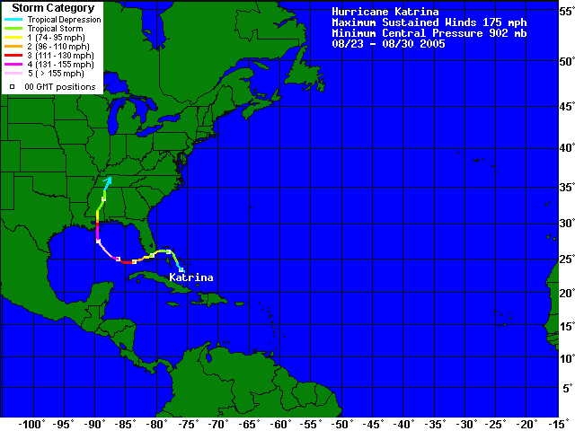
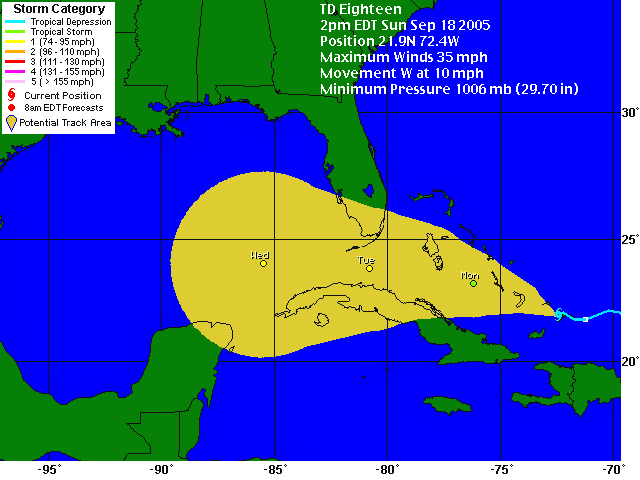

I would like to be able to use custom levels in the normal playing mode, but I can't figure out how. I also would like to know if it is possible to group 5 episodes together into a level. Finally, I would like to know how to edit standard levels. Thanks
I don't know if there's a thread for Ned, but the manual, which is in the zip file that you downloaded to get N, has some very good instructions.
What if the next version had "power-ups"? For example: invisibility to enemies, destruction (breaks through walls, destroys enemies, etc.), super jump, invincibility, among others. Of course these power-ups would expire after a certain amount of time, but I think that these could add some interesting tactics to the game. Plus, you could put power-ups in the level you are creating in Ned.
I agree with the opinion that there should be at least different sounds at the main menu, just not in the game! 
Sorry. I am new at this. I looked through the pinned 'Weapons' topic, and I didn't see any thing, however I wasn't very thorough in looking through.
Sorry once again.
Sorry once again.
Please forgive me if these have been mentioned before! I have looked and have not found them, but they may have been suggestions like these earlier. So forgive me if these are not able to be done or have been mentioned before.
1. A variation of the floor guard, this enemy would be a ball that would simply roll back and fourth along the floor (no homing like the floor guard). It would then crush N when he was hit.
2. A variation of the rocket launcher which would fire multiple rockets at once. Could be like the zap drones (with or without the chase algorythm).
3. Not really an enemy, but some sort of object that could be pushed (off the edge of a cliff, etc.) This would be solid, so it could block enemies like thwumps. It could be used as a sort of step to reach higher levels, too. The catch would be that it could not be lifted, so it could not be moved to a higher 'floor'.
4. Also not really an enemy, but an elevator-like object (sort of like using a thwump to reach higher floors). The difference between this and a thwump would be that a) it would go much slower, thus increasing the ability to drop floors without dying and a pressure-sensetive surface, thus creating the ability to use it without jumping on then off.
a pressure-sensetive surface, thus creating the ability to use it without jumping on then off.
5. I also would like to express support for many of the drones suggested in 'New drones'. I would especially like to see the flamethrower drone and the freezer drone.
6. A rather advanced version of the zap drone, this could be an object that could fly (if you could call it that). It would be able to use the chase algorythm, and it would be able to quickly change course.
7. A teleporter, which could be activated by a switch. Would be similair to the door, except it woyld move you from place to place on the map, not in detween levels.
That's all I can think of for now. Once again, please forgive me if these are not practicle or if I accidentally stole someone's idea.
1. A variation of the floor guard, this enemy would be a ball that would simply roll back and fourth along the floor (no homing like the floor guard). It would then crush N when he was hit.
2. A variation of the rocket launcher which would fire multiple rockets at once. Could be like the zap drones (with or without the chase algorythm).
3. Not really an enemy, but some sort of object that could be pushed (off the edge of a cliff, etc.) This would be solid, so it could block enemies like thwumps. It could be used as a sort of step to reach higher levels, too. The catch would be that it could not be lifted, so it could not be moved to a higher 'floor'.
4. Also not really an enemy, but an elevator-like object (sort of like using a thwump to reach higher floors). The difference between this and a thwump would be that a) it would go much slower, thus increasing the ability to drop floors without dying and
a pressure-sensetive surface, thus creating the ability to use it without jumping on then off. 5. I also would like to express support for many of the drones suggested in 'New drones'. I would especially like to see the flamethrower drone and the freezer drone.
6. A rather advanced version of the zap drone, this could be an object that could fly (if you could call it that). It would be able to use the chase algorythm, and it would be able to quickly change course.
7. A teleporter, which could be activated by a switch. Would be similair to the door, except it woyld move you from place to place on the map, not in detween levels.
That's all I can think of for now. Once again, please forgive me if these are not practicle or if I accidentally stole someone's idea.
I left my computer on for about 4 days earlier this week. It would still be open to ndiana jones (I don't remember the exact numbers), but I had to shut it down because of thunderstorms!
I didn't post this in the new drone section because of all the other stuff I threw in. Also, I couldn't tell what you meant by:
If you meant the suggestion, I mean solid like a tile, not a bounce block, etc.
Also...
QUOTE (jflash)
This would be solid, so it could block enemies like thwumps.
Uh... no...
If you meant the suggestion, I mean solid like a tile, not a bounce block, etc.
This is just my 2 cents, but I agree 100% with the idea of having to start all over again if you time out. This can be especially agrivating if you are on, say, level 4 and you time out. I know I will get a bunch of responses about just pressing the [k] button, but think of it this way: Let's say you have less than a second left and you're dropping into the door. If you realize at this point your out of time, it would be pointless to commit suicide, especially if there's a possibility you could reach the door and win. At least if you only restarted the level, you wouldn't feel bad that you had given up. Just think about it.
I'm no expert, but I can imagine that the ability of N to automatically submit high scores may classify it as a dialer, which would cause Spybot to see it as spyware. Like I said, I'm no expert, but that could be a possible conflict.
@ Guest:
I think that could be interesting. I have read a lot of controversy over the weapons issue. For more information, please see the pinned topic in Suggestions.
I think that could be interesting. I have read a lot of controversy over the weapons issue. For more information, please see the pinned topic in Suggestions.
I know, and I just don't want anyone to make the same mistake I did. ")
EDIT: Also, I did check that topic, and I had just missed the power-ups issue. Sorry for my error.
EDIT: Also, I did check that topic, and I had just missed the power-ups issue. Sorry for my error.
I would, but we don't get many thunderstorms of that intensity here.
Plus, I feel bad now because the power didn't even go out!
Plus, I feel bad now because the power didn't even go out!
Do you mean that, if you time out, you just restart the level, not the episode?
EDIT: I just tried it. Thanks for the change!
EDIT: I just tried it. Thanks for the change!
One question I have about restarting the level vs. restarting the episodes. What good would it do if you time-out after the level has only 2 seconds left? If that were the case, it would be pointless to restart the level because you would just keep timing out.
Just my opinion. I do love n_v14a2!
Just my opinion. I do love n_v14a2!
I've got to try 88-4. See what's so hard about it.
EDIT: I just tried it. It will be a while before I try it again.
EDIT: I just tried it. It will be a while before I try it again.
Let me know if there is another topic this should go in. I couldn't find one.
I would like it if there were a toolbox-type thing when playing in debug mode. For example, this toolbox would be able to start and stop recording a demo, etc. Most importantly, you would be able to reset objects and restart the level, thus eliminating the need to go back to the debug menu to perform these basic tasks.
I would like it if there were a toolbox-type thing when playing in debug mode. For example, this toolbox would be able to start and stop recording a demo, etc. Most importantly, you would be able to reset objects and restart the level, thus eliminating the need to go back to the debug menu to perform these basic tasks.
I thought of it because of all the playing I do in debug mode (levels from NUMA, etc.) You have to admit, though, that it is an inconvinience to have to go back to the debug menu just to reset the objects and restart the level.
I was meaning more along the lines of the keys still working while in the game. And also, I only misuse or do not use punctuation at all when it's a typo.
My impression from other games is that a boss is supposed to be taken on when you have little life left. With N's respawning capability, then a boss would be point less, not only because N would only get up and start fighting, but also because you couldn't get hit at all because then you would have to restart the level.
I see what you mean, but still, with Ns one-hit-and-you-die part, a boss could be fought forever to no avail. If, at least on the boss level, Ns life were gradually reduced, then the boss level would make sense. But, like I said, since one hit finishes him off, the boss level could go on forever.
I'll check it out. I'm not saying that bosses are impossible to beat, I'm just saying that it can take longer with the one-hit-dead system.
Thanks, though!
Thanks, though!
I'll take your word for it. I couldn't even get passed 1-1.
That's how I was (especially when I had less than 10 seconds left!)
I couldn't figure out that jump-thing.
I love it! Thanks so much!
(Runs to play with Ned)
(Runs to play with Ned)
I don't know if this is a problem, but the unlimited time part of practice mode does not extend to user levels. I don't know if it's supposed to or not. If it is, I just thought you might want to know.
I thought I had the final release, but I'll double check.
Found one problem immediately (as of 5/21):
Practice mode does NOT work. The timing is still in place, as well as the lack of ability to skip levels.
Other than that, it looks great. Thanks for all the work you guys put into this.
EDIT: Sorry! I don't know what I did, but it's working fine now. Thanks again!
Practice mode does NOT work. The timing is still in place, as well as the lack of ability to skip levels.
Other than that, it looks great. Thanks for all the work you guys put into this.
EDIT: Sorry! I don't know what I did, but it's working fine now. Thanks again!
I don't know if this is the right place to post this but:
I am going to try and put together a "Best Of" collection of levels, however I need some help. I would like for anyone who is interested to post here with their favorite user level in N. Please include in the post the Name of the map, the type (DDA, etc.), and the author. I hope (if I get enough response), to post this in this topic as a txt file by the end of June or beginning of July. Thanks in advance for your votes!
I am going to try and put together a "Best Of" collection of levels, however I need some help. I would like for anyone who is interested to post here with their favorite user level in N. Please include in the post the Name of the map, the type (DDA, etc.), and the author. I hope (if I get enough response), to post this in this topic as a txt file by the end of June or beginning of July. Thanks in advance for your votes!
@nevermore:
I'm mainly doing this (I know it's selfish) because I had a great collection of levels when I was doing 1.4 Beta, and, wouldn't you know it, the file got overwritten when I upgraded to the stable version. So this is partly an attempt to re-create that. Also, I'm just curious what everyone else likes in an attempt to improve my own maps. I hope that answers your question.
I'm mainly doing this (I know it's selfish) because I had a great collection of levels when I was doing 1.4 Beta, and, wouldn't you know it, the file got overwritten when I upgraded to the stable version. So this is partly an attempt to re-create that. Also, I'm just curious what everyone else likes in an attempt to improve my own maps. I hope that answers your question.
As per your suggestion, I have just added the top ten rated levels from NUMA into my file. Thanks for the suggestion! I am including the first version of the file, let me know what you think.
OK. Thanks.
Please tell me if I am wrong about this:
It seems like I remember in the beta release post of 1.4 that it was said that sometime (September, maybe?), a new Ned would be released. I can't find that reference, though. Can someone please tell me if I was imagining it, and if I was not, if I have the timing correct? Thanks!
It seems like I remember in the beta release post of 1.4 that it was said that sometime (September, maybe?), a new Ned would be released. I can't find that reference, though. Can someone please tell me if I was imagining it, and if I was not, if I have the timing correct? Thanks!
Yes, I am aware of those changes. I probably just misread the post, I was thinking that at some point later on they were going to completely redo the Ned interface. I suppose I just misread it.
I got here after reading about N in PCWorld magazine. One of their columnists listed a few of his favorite computer games, and he was very complimentary. I tried it, and have been hooked ever since. I just started a few months ago. My maps still stink, but I am rather proud of some of them. I know no one will believe me, but I had a great puzzle map that (of course) was in the user levels file on 1.4 beta. I accidentally overwrote it when I upgraded to the 'stable' version of 1.4. 
Rightly so.  The column was written by Scott Spanbauer.
The column was written by Scott Spanbauer.
EDIT: The colums's address is http://www.pcworld.com/howto/article/0,aid,119584,00.asp
The column was written by Scott Spanbauer.EDIT: The colums's address is http://www.pcworld.com/howto/article/0,aid,119584,00.asp
Pity he didn't say. I wouldn't mind seeing some of his maps, if he has any. Hmm...
@trogdor007: Who knows?
@manic: Are you implying something?
@manic: Are you implying something?
Please forgive my ignorance, but I am (relatively) new. I have been seeing references to maximo, and I have been wondering who maximo is. Please, like I said, forgive my ignorance, I have just been on the forums for about a month. Thank you!
Fair enough. I have actually played some of maximo's maps, and I have loved them. Thanks!
Yeah, cool. I consider myself an "ok" webmaster, but I could never in a million years figure out how to manage a site like NUMA.
Who runs NUMA? My impression is it is arachnid, but if someone could confirm that, I have a few questions. Thanks!
If you mean about arachnid being the NUMA person, I'm off to find some place to ask my questions . Thanks!
. Thanks!Tell me if this is the wrong category, but...
In the updated NUMA, in the favorites section, when you download your favorites as a .txt file, it runs them all together (see my attached example). I didn't know if this was intentional, or if someone needs to look into it. Thanks!
In the updated NUMA, in the favorites section, when you download your favorites as a .txt file, it runs them all together (see my attached example). I didn't know if this was intentional, or if someone needs to look into it. Thanks!
Just saw iangb's post. Thanks! Has N/NUMA been mentioned in any publications other than PC Gamer and PC World? I was just wondering.
Here goes nothing...
I have been visiting the forums for several months now, and in that time have developed a deep respect for most of the visitors to this forum. I recently passed the 1000 post mark. I am 12 years old. I am very good with computers. I have extensive experience with most or all aspects of a Forumer-hosted IPB forum. I run my own forum. I learned about N after reading about it in PC World magazine. I can usually control my temper. (At least I usually take it out outside of the forums!) Aside from the occasional typo (who dosen't make them?), I have very good spelling and grammar. I spend about 4-7 hours every day on the computer, so I'm on almost all the time. I have (sadly) not beaten the game, partly because a)I usually play in practice mode, b)because I spend a lot of time playing the User Levels. I like to think of myself as being good for the forums (i.e. I helped to resolve an issue regarding N having an embedded virus). I always try to help people when I can. I feel that if I get a position, I will be as kind as any of the current mods/admins, and I will not abuse my power. I will take any position you give me, although I do particularly enjoy the Tests and Inquiries forum, as well as Messageboard Ganes, Off-Topic (including Intelligent/Philosophical discussion), and This Forum. I also am very interested in weather (yes, weather), and I play trombone in the school band. I also hold a Ham Radio license. I am currently in the process of obtaining my boating license (There hasn't been a good time for me to get to the courthouse. ). I would like to thank all of the admins and mods for all they do for the forum. I would especially like to thank all of those who have developed N, it is now my favorite game (and most-opened program). Thank you once again for all of your time.
). I would like to thank all of the admins and mods for all they do for the forum. I would especially like to thank all of those who have developed N, it is now my favorite game (and most-opened program). Thank you once again for all of your time.
I have been visiting the forums for several months now, and in that time have developed a deep respect for most of the visitors to this forum. I recently passed the 1000 post mark. I am 12 years old. I am very good with computers. I have extensive experience with most or all aspects of a Forumer-hosted IPB forum. I run my own forum. I learned about N after reading about it in PC World magazine. I can usually control my temper. (At least I usually take it out outside of the forums!) Aside from the occasional typo (who dosen't make them?), I have very good spelling and grammar. I spend about 4-7 hours every day on the computer, so I'm on almost all the time. I have (sadly) not beaten the game, partly because a)I usually play in practice mode, b)because I spend a lot of time playing the User Levels. I like to think of myself as being good for the forums (i.e. I helped to resolve an issue regarding N having an embedded virus). I always try to help people when I can. I feel that if I get a position, I will be as kind as any of the current mods/admins, and I will not abuse my power. I will take any position you give me, although I do particularly enjoy the Tests and Inquiries forum, as well as Messageboard Ganes, Off-Topic (including Intelligent/Philosophical discussion), and This Forum. I also am very interested in weather (yes, weather), and I play trombone in the school band. I also hold a Ham Radio license. I am currently in the process of obtaining my boating license (There hasn't been a good time for me to get to the courthouse.
). I would like to thank all of the admins and mods for all they do for the forum. I would especially like to thank all of those who have developed N, it is now my favorite game (and most-opened program). Thank you once again for all of your time.When I try to open the DDA Pinball in user levels, Flash Player will load the map, and will start loading the objects. However, midway through, Flash Player will lock up, and I will have to close it. Is this a known problem? How do I fix it? Thanks
Let's see, ooohhhh, tough one...
1. For you beta testers, or anyone who knows what it means, DPA1, anyone else, it's basically Mozilla Firefox.
2. OpenOffice.org
3. Picasa (photo organizer by Google)
4. Google Desktop Search
5. Windows Media Player
6. Spybot S-D
7. Ad-Aware
8. Microsoft Anti-Spyware
9. Gmail (not technically an app, but I love it anyway. If you want an invite and don't have one, PM me)
10. This great game I found called N. Anyone ever heard of it? (Thanks, TornadoTK for the idea for that (attempted) witty remark).
EDIT: How could I have missed Mozilla Thunderbird?! Best email app ever created, if you ask me. *hand slaps forehead*
1. For you beta testers, or anyone who knows what it means, DPA1, anyone else, it's basically Mozilla Firefox.
2. OpenOffice.org
3. Picasa (photo organizer by Google)
4. Google Desktop Search
5. Windows Media Player
6. Spybot S-D
7. Ad-Aware
8. Microsoft Anti-Spyware
9. Gmail (not technically an app, but I love it anyway. If you want an invite and don't have one, PM me)
10. This great game I found called N. Anyone ever heard of it? (Thanks, TornadoTK for the idea for that (attempted) witty remark).
EDIT: How could I have missed Mozilla Thunderbird?! Best email app ever created, if you ask me. *hand slaps forehead*
Yup. I was wondering if anyone else had heard of it. 
OK. I'm going now to download Chatzilla.
It what? DPA1?
Cool! That makes 3 people!
What about Ninjas that you had to unlock that had special abilities (i.e. could jump higher, could fly, go through walls, take multiple hits from an enemy before dying, that sort of thing). You would have to unlock these ninjas (maybe by unlocking 3 or so columns?), and you could toggle between them. Comments, opinions?
Dave Barry
Some Stories
Good Jokes
Things You Enjoy Doing in Your Spare time (other than playing N and wasting time on this forum)
Some Stories
Good Jokes
Things You Enjoy Doing in Your Spare time (other than playing N and wasting time on this forum)
When you're on vacation, you check back to the forums more often than you check your email or the weather. Oh, and you laugh out loud at this topic because you know how everyone feels.
Mystery
Are you saying you can currently get the kill count per enemy? How? Oh, and I like your idea.
Help!!! Is there some way to semi-easily beat this level? Help!!!
Actually, I just finished 5-3, now all I need help with is 5-4.
I figured out about the doors. I run into problems with the chase zap drones in the middle section of the basement.
EDIT: It might also help if I were a little more awake. Oh, well.
I finally finished episode 7. I think I may take a break from N for a few minutes. (Possibly)
from N for a few minutes. (Possibly)
Now I need help with 8-1: plan plan plan. Thanks!
EDIT: It might also help if I were a little more awake. Oh, well.
I finally finished episode 7. I think I may take a break
from N for a few minutes. (Possibly)Now I need help with 8-1: plan plan plan. Thanks!
Thanks!
Interactive
NUMA
EDIT: I meant Thanks to ShadowWolf, that was not intended as spam. Sorry.
N should be able to fly (or, if you want really stupid, he should be able to turn cartwheels). 
No one else has replied, so I'll go again:
Grass
Trees
Flowers
Detritus
Some Compost
Fruit Peels (orange, banana, apple, etc.)
Vegetable Peels
Dirt (maybe)
Food
Some housedust
Many things I have not thought of right now.
Things you take with you when traveling
Grass
Trees
Flowers
Detritus
Some Compost
Fruit Peels (orange, banana, apple, etc.)
Vegetable Peels
Dirt (maybe)
Food
Some housedust
Many things I have not thought of right now.
Things you take with you when traveling
I have to add Google Earth. It's not particularly useful, but it is really cool to see the satellite imagery!
I like Maniac's previous suggestion (N needs something more impressive than the 'K' button, maybe he could break into pieces which fly around and blow up all the enemies. I would love to see that!). Oh, and I like Eldrial's suggestions.
Redundant
Oh yeah, that too. 
Dunno. Is this forum not a tad bit conceited?  (No offense intended).
(No offense intended).
(No offense intended).OK, I've had this same question. I know about the warning system and all that, but what would happen if you clicked the percent. Wait: I'll try it.
EDIT: Just tried it. Am I correct in assuming that if you are warned, the admin/mod who warned you will record where, why, etc? ( And you could see their log by clicking the percent?)
EDIT: Just tried it. Am I correct in assuming that if you are warned, the admin/mod who warned you will record where, why, etc? ( And you could see their log by clicking the percent?)
Slightly Off-Topic:
I am trying to set up my own forum (see ki4hrg.forumer.com). I have the warn system figured out, except for one thing: how do you add multiple warns on the same violation? Sorry about it being off-topic, I just was worried I'd forget to ask if I waited. Thanks!
I am trying to set up my own forum (see ki4hrg.forumer.com). I have the warn system figured out, except for one thing: how do you add multiple warns on the same violation? Sorry about it being off-topic, I just was worried I'd forget to ask if I waited. Thanks!
Um, I'm not sure if it is a Forumer update or not. I know that there is a mod for it (fmods.com), but I'm not sure if Keron did it or not. Hmm...
EDIT: Just checked. Unless there is an IPB upgrade I'm unawre of, Keron (or some other admin) must have put it on. Hope that helps.
EDIT: Just checked. Unless there is an IPB upgrade I'm unawre of, Keron (or some other admin) must have put it on. Hope that helps.
I have a question about putting a SayBox on my forum. I have signed up for my SayBox, activated it, and all the necessary procedures. The problem is: I have it set up on my forum to be a popup (like here). When I click to open it, It gives me the message "No user by that name exists." I have checked and double checked my code, and everything is correct. Even more puzzling is that a)I can access the admin panel from the SayBox website, and b)the SayBox works fine when put inline on the page. Any help would be appreciated. I have tried the SayBox forums, and have gotten no helpful response. Thanks!
EDIT: As of 7/14, the problem has been corrected . (For anyone who's interested, the conversation on the SayBox forum can be found here.
. (For anyone who's interested, the conversation on the SayBox forum can be found here.
Thanks!
EDIT: As of 7/14, the problem has been corrected
. (For anyone who's interested, the conversation on the SayBox forum can be found here.Thanks!
I've seen that one (the avatar one). I keep meaning to put it on my forum, but I'm just too lazy. 
EDIT: Oh, and Why is the online button-indicator not working ? Also, Keron, you may want to look at the Disable Double Posts mod.
I keep meaning to put it on my forum, but I'm just too lazy. EDIT: Oh, and Why is the online button-indicator not working ? Also, Keron, you may want to look at the Disable Double Posts mod.
QuoteQUOTE (Keron Cyst @ Jul 13 2005, 02:49 PM)
QUOTE (Sendy @ Jul 13 2005, 05:35 AM)
... I like to think I'm a good listener if you're stressed.
I also like to think that most of us here would happily help out as best we can with whatever troubles anyone has metanet/;-).gif
I can help whoever, whenever. I like to think of myself as a good listener, too.
I know how that goes. (Especially the school part.) An obsession with N dosen't help either!
Like maestro said, Fast Reply opens a little box at the bottom of the screen where you can compose your reply. The main reason they both exist (I believe) is because it used to be that Fast Reply had only very basic editing features (as in, it lacked many of the HTML tags that are part of the Basic Reply). However, a mod was released that allowed those features to be incorporated in to the Fast Reply box. As a result, many people now use only Fast Reply. Hope that answers your question.
QUOTE (Keron Cyst @ Jul 15 2005, 10:51 AM)
So basically what I said (in a nutshell).
QUOTE (maestro @ Jul 15 2005, 11:03 AM)
I can actually see his point. I rarely need all of those tags anyway. (At least when doing regular replies, anyway.) Plus I kow how to do most of them manually.
Fast Reply lets you post right in the thread in a box that pops up at the bottom instead of having to load a whole new page; it's much faster
So basically what I said (in a nutshell).
QUOTE (maestro @ Jul 15 2005, 11:03 AM)
QuoteNope.
I can actually see his point. I rarely need all of those tags anyway. (At least when doing regular replies, anyway.) Plus I kow how to do most of them manually.
I'm all for the idea. However, would it be for sites strictly about N, or sites made by N fans? Also, It might be a good idea to put up a poll on the issue (just a thought).
There is no way I'd ever be able to make a map half as good as some of these, but I'd love to try my hand at judging. I would be honored to even be considered.
EDIT: I'm just curious: could current maps be submitted? I wouldn't even try (none of mine are good enough, and I would never use someone else's map), but some of the DDAs are really spectacular. Just wondering.
EDIT: I'm just curious: could current maps be submitted? I wouldn't even try (none of mine are good enough, and I would never use someone else's map), but some of the DDAs are really spectacular. Just wondering.
Fair enough. I forgot about the No Exits rule (and others I can't remember at the present time!)
I might if I have time once school starts back  .
.
.I like the idea. How, though, would N get in position to do the 'ceiling-jump'? (And, for that matter, what position would he do it in?) It seems like that just...happening when he jumped near the ceiling wouldn't be very fitting with M&R's attempt to make the N physics as realistic as possible. It is a coll idea, though.
I think some of your ideas are pretty good (especially N being able to swim, but thats already been suggested, and everyone else seems to hate the idea). The warn level is something in the forum software so that if you do something bad, an admin/mod can 'warn' you. Once you have been warned 10 times, the forum will automatically suspend you. There's more, but I know you can get more details at other topics (and in the Rules topic).
OK, I think I see what you are saying. Am I correct that N would be in a wallsliding position turned 90 degrees?
Sorry so late replying, but I got it now.
I agree partly with you all, however, he is only just past Newbie stage (10 posts). I wouldn't object so much if he had, say, 20 or 30 posts, but he is just past Newbie stage, so don't discourage him.
Well, I'm still good. (I've got nothing to do until Saturday, when I go on a trip with church.)
N should be able to take off body parts (such as arms and legs), and throw them for the drones to catch!
When (as in, what time) will you post the judges?! Also, will it be via PM, added on to the first post, or a seperate post at the end of the topic? Thanks!
When N explodes, his various parts should become drone homing missles. As soon as he blew up, all of his various body parts would hurl themselves at high speed at the drones, where they themselves (the drones) would promptly explode. 
OK. Like I said, I leave Saturday to be gone for a week, but I'd be happy to judge in the meantime.
As far as I know, that's fine. (I'm assuming you mean just put the link.) It should be judged as soon as a judge can get to it (which should be relatively fast, seeing as how all of the judges are released tomorrow).
I agree wholeheartedly.
Please put whether or not you use the cheats in N. (If you answer the last choice, I am so jealous of you!) Be honest!
EDIT: Tha t should be could, not could .
EDIT: Tha t should be could, not could .
Both of those ideas have been suggested about a million times.
Chili Peppers
Stoves
Volcanoes
Lava
Deserts
A house with no air conditioning in the summer!
Countries
Stoves
Volcanoes
Lava
Deserts
A house with no air conditioning in the summer!
Countries
Might be a good idea (you going to bed, I mean). I also think that when N dies, I think that he should stay in one piece and slooowly sink and be buried (even a ninja deserves a propor funeral ).
).Forumer really should have some sort of system that weeds out members if they have less than x number of posts in a specified time period. Then, an admin justs pushes the button, and Forumer asks for confirmation before trashing the accounts for those users.
DDAs are a great way to show off N's physics capabilities, however, they tend to be rather short lived. So, I give you the challenge of creating the longest-running DDA. Points will be awarded by the time remaining at the end of the DDA. However, to make it slightly more challenging, you will also be scored on N's grace (does N bump in to things a lot, or does he seem to...glide?), close calls (the more the better!), the appearance (of the map), loading/lag time, originality, and how the judge would rate the map on NUMA. (This will be restated later in an easier to comprehend list.)
The Rules:
Confimed judges:
Me
jeffkillian (Backup)
Pending judges:
Anyone wishing to judge should post here or PM me. I will decide by Friday. Judges will be posted in this topic, a new topic at the end of the posts, and all applicants will be PMed. I will be out of town next week, so anyone wishing to have a map judged between now and then should post it here by Thursday. Anyone else will have to wait until a week from Sunday. If you have a DDA that really like and YOU wrote, it is recommended that you post it here.
I hope a bunch of people try this, you never know. This is not intended to be easy. Questions, comments, entries? Post here or PM me. Have fun!
There will be 5 judges, so points will be out of 500. Highest points obviously wins. Entries should be submitted by posting a link to NUMA. I suggest that you include a demo in case Something goes wrong with the code as I copy it into Ned. Feel free to post them as test levels. I don't expect these to get high NUMA ratings. If you know of a Map that has NOT been submitted and you think it should, please either tell the author about this contest, or PM me and I will contact them!
-----------------------------------------------------------------------------------------------
DUE TO THE LACK OF JUDGE APPLICATIONS, the deadline for judges to apply has been extended to 1 week from Sunday. Judges will be announced by the following Monday.
---
Current Scores:
Maximo, Throwback jflash: 81 jeffkillian: not yet judged Running total: 81
iangb, Thwump Loops jflash:75 jeffkillian: not yet judged Running total: 75
The Rules:
- You can use an unlimited number of objects (but keep in mind the points for load time!)
- Thwumps and all other enemies should be used only for purposes that do not kill N (or even cheat death)
- All entries must be submitted by August 8, 2005.
- Maximum amount of entries: as many as you want, as long as it is evident you have spent some time on it.
- Entries should be ORIGINAL and YOURS. (Meaning don't go to NUMA, find a long-lasting map, and submit it.)
- Do NOT just loop a DDA! Any DDA that is entered in this manner will be disqualified (unless itis necessary, i.e. to activate a jump pad).
- Gold should ONLY be used as a delay mechanism, not to simply increase the time spent.
- N should not die in the DDA. He should be alive for at least 1.5 seconds after completing the level (unless his death cannot be helped).
- N should not do a lot of waiting around. He should be moving for at least 5 seconds in a row before stopping (which should not exceed 5 seconds itself).
- Submissions should be true DDAs, no 'hold right', 'hold left', or anyother forms of DDA. The player's only intervention should be starting the map.
- Submission posts should contain a link to the page in NUMA where the map is located.
- Time remaining at end of DDA - 1/2 point per 10 second difference between start and end to 30 pts..
- Grace - 10 pts.
- Close calls - 1 pt. per incident to 20 pts.
- Loading/Lag Time - 10 pts.
- Appearance - 10 pts.
- Originality - 10 pts.
- Ninja Rating - 10 pts. (2 for every Ninja)
- Penalties taken for violation of rules (i.e. N dying)
Confimed judges:
Me
jeffkillian (Backup)
Pending judges:
Anyone wishing to judge should post here or PM me. I will decide by Friday. Judges will be posted in this topic, a new topic at the end of the posts, and all applicants will be PMed. I will be out of town next week, so anyone wishing to have a map judged between now and then should post it here by Thursday. Anyone else will have to wait until a week from Sunday. If you have a DDA that really like and YOU wrote, it is recommended that you post it here.
I hope a bunch of people try this, you never know. This is not intended to be easy. Questions, comments, entries? Post here or PM me. Have fun!
There will be 5 judges, so points will be out of 500. Highest points obviously wins. Entries should be submitted by posting a link to NUMA. I suggest that you include a demo in case Something goes wrong with the code as I copy it into Ned. Feel free to post them as test levels. I don't expect these to get high NUMA ratings. If you know of a Map that has NOT been submitted and you think it should, please either tell the author about this contest, or PM me and I will contact them!
-----------------------------------------------------------------------------------------------
DUE TO THE LACK OF JUDGE APPLICATIONS, the deadline for judges to apply has been extended to 1 week from Sunday. Judges will be announced by the following Monday.
---
Current Scores:
Maximo, Throwback jflash: 81 jeffkillian: not yet judged Running total: 81
iangb, Thwump Loops jflash:75 jeffkillian: not yet judged Running total: 75
I know (about the number of competitions I mean). Mainly, it's because I'm bored, but also because I've been wanting to run a contest, I just haven't known a topic.
OK, I will let you know on Friday.
EDIT: I take that back. I need a confirmed backup, so be looking for a PM in a few minutes.
EDIT: I take that back. I need a confirmed backup, so be looking for a PM in a few minutes.
Good point, however they wouldn't do well in:
Close calls
Appearance
Originality
or Ninja Rating.
I will put something in the rules about that, though.
Close calls
Appearance
Originality
or Ninja Rating.
I will put something in the rules about that, though.
Thanks. I see your point. I thought this was somewhat original, and with all the spare time I have on my hands this summer, I figured it would give me something to do. Also, after looking at the other contests, I saw that very few of them were specifically for DDAs. Thanks again!
@jeffkillian: *adds rule*
@maximo: Got it. We're having a thunderstorm here, so as soon as I can reboot my computer, I'll try it out and judge it. Thanks! Also, If you wanted to be really picky, I should point out the rule to include the link to NUMA, but I'll just let it slide because I am so happy to have a submission!
@maximo: Got it. We're having a thunderstorm here, so as soon as I can reboot my computer, I'll try it out and judge it. Thanks! Also, If you wanted to be really picky, I should point out the rule to include the link to NUMA, but I'll just let it slide because I am so happy to have a submission!
EDIT: Didn't even realize I was double posting. Sheesh.
Throwback
Maximo
NUMA Rating: 4
Time Difference: 20/20
3 min. 15 sec.
Grace: 16/20
N seemed prone to crash into things, but this was used well in the interest of propultion and navigation through the somewhat cluttered map.
Close Calls: 20/20
Plenty of close calls made for a suspenseful map.
Loading/lag time: 5/10
Long load time, however, there was virtually no in-game lag.
Appearance: 5/10
Map appeared rather cluttered and disorganized.
Originality: 9/10
Very original map and style, as evidenced by both appearance and running time.
Judge's Ninja Rating: 6/10
3 Ninjas
Raw Score: 86
Penalties: 5 Subtracted for N dying at the end.
Final Score: 81
Throwback
Maximo
NUMA Rating: 4
Time Difference: 20/20
3 min. 15 sec.
Grace: 16/20
N seemed prone to crash into things, but this was used well in the interest of propultion and navigation through the somewhat cluttered map.
Close Calls: 20/20
Plenty of close calls made for a suspenseful map.
Loading/lag time: 5/10
Long load time, however, there was virtually no in-game lag.
Appearance: 5/10
Map appeared rather cluttered and disorganized.
Originality: 9/10
Very original map and style, as evidenced by both appearance and running time.
Judge's Ninja Rating: 6/10
3 Ninjas
Raw Score: 86
Penalties: 5 Subtracted for N dying at the end.
Final Score: 81
I'm glad you like your score. I wasn't too worried about the timing because I figured most people who would be interested would already have some good ones to submit. Plus, I can always extend the final submission date if need be.
I wasn't too worried about the timing because I figured most people who would be interested would already have some good ones to submit. Plus, I can always extend the final submission date if need be.I didn't even know one could get a negative post count. How'd he manage that?
I should have figured that out, seeing as I run my own forum (ki4hrg.forumer.com). I just assumed that Forumer wouldn't like negative numbers.
They don't. They hae an airplane-like motor that keeps them high above the ground.
How does N get from level to level (and don't say the exit doors, have you ever noticed that he never goes anywhere, he just daancesa and then is still)?
How does N get from level to level (and don't say the exit doors, have you ever noticed that he never goes anywhere, he just daancesa and then is still)?
Thwumps Loops
iangb
Time: 7/30
0 min. 53sec.
Grace: 20/20
Very graceful, N navigated the map smoothly, and with great speed and agility.
Close Calls: 17/20
Fewer close calls than in some other DDAs, this is still a very captivating map.
Loading/Lag Time: 10/10
I experienced virtually no load time, or in-game lag.
Appearance: 7/10
Appeared somewhat cluttered, as can be expected with an all-thwump DDA.
Originality: 10/10
Very clever to create a thwump-only DDA without use of launch pads.
Judge's Ninja Rating: 9/10 (4.5/5 Ninjas)
Raw Score: 80/100
Final Score: 75/100
Penalties: 5 points deducted for N dying before reaching the exit.
iangb
Time: 7/30
0 min. 53sec.
Grace: 20/20
Very graceful, N navigated the map smoothly, and with great speed and agility.
Close Calls: 17/20
Fewer close calls than in some other DDAs, this is still a very captivating map.
Loading/Lag Time: 10/10
I experienced virtually no load time, or in-game lag.
Appearance: 7/10
Appeared somewhat cluttered, as can be expected with an all-thwump DDA.
Originality: 10/10
Very clever to create a thwump-only DDA without use of launch pads.
Judge's Ninja Rating: 9/10 (4.5/5 Ninjas)
Raw Score: 80/100
Final Score: 75/100
Penalties: 5 points deducted for N dying before reaching the exit.
OK, now that it's moved, I would like to ask another question:
When N dies, how come he sometimes stays in one piece and sometimes he 'blows up'?
(Yes! 100 posts!)
When N dies, how come he sometimes stays in one piece and sometimes he 'blows up'?
(Yes! 100 posts!)
I have my forum too. Please Join! ki4hrg.forumer.com
Jeans, T-shirt, and tennis shoes. I especially like these 'pack shorts' I've found. They're made of nylon and are very lightweight (as in swimsuit-type material).
Granted, but they now come in slices that are moldy, so they have a whole NEW bad taste.
I wish school wouldn't start within 20 days of my birthday (mine is August 11, school starts the 12th).
I wish school wouldn't start within 20 days of my birthday (mine is August 11, school starts the 12th).
http://ki4hrg.4.forumer.com/index.php?act=SR&f=25
It's from some work I was doing on my forum (ki4hrg.forumer.com)
It's from some work I was doing on my forum (ki4hrg.forumer.com)
No.
Windows XP?
Windows XP?
Granted, but it got wet when you left it under a leak in your roof, so now it's ruined.
I wish I had a laptop.
I wish I had a laptop.
Because I have even seen him be hit by a gauss turret on try and get blown up, and then the next it simply kills him (he stays in one piece). Same thing with mines, and falls, and other instances.
I wouldn't recognize you by any other name!
Had supper, got on my family's main computer, and started browsing the Messageboard Games forum. I then replied to this thread.
@Keron: should that not be [b], not []b?
Also, I have found that when you do a search, there are certain limitations. For example, when I was creating a contest 'Design the longest DDA', I couldn't simply do a search for 'DDA', which would have told me what I needed because it had too few letters. I had to try variations, word additions, etc. in order to see if the same contest had already been created. Which is why I find it rather tedious to do searches every time I create a topic.
Also, I have found that when you do a search, there are certain limitations. For example, when I was creating a contest 'Design the longest DDA', I couldn't simply do a search for 'DDA', which would have told me what I needed because it had too few letters. I had to try variations, word additions, etc. in order to see if the same contest had already been created. Which is why I find it rather tedious to do searches every time I create a topic.
Granted. It comes with no operating system.
I wish for a better cell phone (that's my own, and I don't have to share it with the rest of the family)
.
I wish for a better cell phone (that's my own, and I don't have to share it with the rest of the family)
.
Huh? I've never seen that. Or did I miss something, and it was a suggestion for future versions of N?
What kind of problem does N have to kill himself and respawn at the exit?
It wasn't intended as a suggestion from me, you had said it and I had just never seen N doing that, so I had thought it was you making the suggestion.
I've been logged in (not constantly on, but logged in for at least 48 hours at a time.
I'm talking about how long you have had any part of the forum open in a browser window.
Granted, but you accidentally download a virus, which you download so quickly that you don't even notice it. Your computer then suffers a complete meltdown.
I wish my internet wasn't so slow! (We have cable, but it often is clocked at speeds closer to that of a dial-up modem.)
I wish my internet wasn't so slow! (We have cable, but it often is clocked at speeds closer to that of a dial-up modem.)
YES!!!
Reading?
Reading?
Don't worry about it. There were only 3 replies or so before I cleared it up (one reply was mine, so more like 2).I'm talking about how long you have had any part of the forum open in a browser window.Oh, whoops
I think this is in the right forum...
I used to have a dream almost every night where there was a little boy who stole a newspaper. He was running through a sparsely wooded area, with the police chasing him. There was a cliff, and he and the police all jumped off it. It was really weird. I am not making this up.
I used to have a dream almost every night where there was a little boy who stole a newspaper. He was running through a sparsely wooded area, with the police chasing him. There was a cliff, and he and the police all jumped off it. It was really weird. I am not making this up.
I should have said votes. Most of the replies were asking for clarification. I hope thats what you mean.
After he goes up and over the ramp-type tile at the end, right as he passes the door, he is caught by a thwumnp going up. There is also no switch for the exit.
Granted. You lose all your level data when you are almost through with it, and you have to start over.
I wish all of my suggestions for N that I make hadn't been already suggested and shot down immediately.
I wish all of my suggestions for N that I make hadn't been already suggested and shot down immediately.
Welcome back!
OK. Well, I'm on vacation (meaning: I don't have access to a very good computer). I'll take a look at it when I get home (which will be a week from now). Sorry. I'll try and get back on here before then, but that seems rather unlikely due to the fact that this is a temporary stop. Thanks!
Uh... I guess because they found a color scheme that went well with the game, and decided that blue would be best for the Zap Drones.
OK. Now that it is moved, would someone please answer my original question?![/i]
Because he dosen't have that much money. Or he may have just added the chase algo as an afterthought, so there aren't as many.
Why does N die from some falls onto a surface once, and then die when he tries to do it again, recreating the same circumstances?
Why does N die from some falls onto a surface once, and then die when he tries to do it again, recreating the same circumstances?
I am on vacation right now with my church youth group, and we are staying in a church at our final stop. We have been told it Will Not Have Computers. I don't know how I'll live. Maybe I'll design N maps on paper or something.
@Keron (again): Let me know if you find out, so I can change it in my forum, too.
[off-topic]@Jesse: I think flash sigs are allowed here. I know flash avatars are allowed.[/off-topic]
OK. I got it. I was just curious why it looked that way. Thanks!
I have no intention of stopping using the computer so much. I'm back now, by the way. I may be gone next weekend, though. (No computers though. *sigh*)
I'm back now, by the way. I may be gone next weekend, though. (No computers though. *sigh*)- Chipmunks
- Squirrels
- (Some) Cats
- Dolphins
- Opossums (According to my sister, not me!)
- Feta
- Swiss
- American
- Parmesean
- Cheddar
Firstly, I know this has probably already been suggested. (If it hasn't, I probably deserve some type of award for not suggesting an already suggested suggestion.)
Anyway, I think it would be nice to be able to add user levels to userlevels.txt in the game, rather than always having to dig up the file itself. Just a suggestion, but I do think it would be nice.
Anyway, I think it would be nice to be able to add user levels to userlevels.txt in the game, rather than always having to dig up the file itself. Just a suggestion, but I do think it would be nice.
OK. I suppose I should have figured out that the Flash Projector couldn't write to text files. I have been wondering, though, how it can read from (or even find) text files? Thanks!
Granted. It melts all over your computer, thus frying your hard drive (on which N and all it's level data was stored).
I wish I weren't so tired *yawn*.
I wish I weren't so tired *yawn*.
And I dont really like cheese!
And I thought I was the only one. I don't like any dairy product, for that matter (except feta cheese, ice cream, and, ocasionally, chocolate milk).
Granted. You can only fly for 5 minutes, so you fall to your death.
I wish My birthday was earlier in the summer.
I wish My birthday was earlier in the summer.
You forgot the second answer, and you need to put a new topic.
Granted. You now have to share your super-fast computer with everyone else in your family, and, consequently, you never get a chance on it.
I wish I had an mp3 player (I've asked for one for my birthday. [sarcasm]Like I'll really get it.[/sarcasm] *sigh*).
I wish I had an mp3 player (I've asked for one for my birthday. [sarcasm]Like I'll really get it.[/sarcasm] *sigh*).
Granted. You are now brain-dead.
I wish I had a bigger room.
I wish I had a bigger room.
Granted. It is now so easy that it becomes insignificant.
I wish I had a 999 petabyte hard drive (or flash drive. That would work too.)
I wish I had a 999 petabyte hard drive (or flash drive. That would work too.)
What forum is he a mod in, anyway? I can't find his application in the Staff Applications topic, either. And how's he a mod in the first place with only 80 posts and no application?
And how's he a mod in the first place with only 80 posts and no application?And, something else that befuddles me is why he's only a mod until August 4?
I was going to ask to be a mod for one day on my birthday. It's August 11.
And I won't use reverse phsycology.
And I won't use reverse phsycology.
Granted, but everyone becomes smarter, so no one notices the difference.
I wish I had a better computer.
I wish I had a better computer.
This can go for someone too.
I don't think so because love and hate are two conflicting emotions, so they would cancel each other out.
I don't think so because love and hate are two conflicting emotions, so they would cancel each other out.
Granted. You need it so badly, and you are so over-stressed (was that redundant?) that you develop an ulcer.
I wish I had millions of dollars.
I wish I had millions of dollars.
Granted. You abuse your power, and thus lose mod-ship and are IP-banned.
I wish I had a lock on my bedroom door. (I have a little sister.)
I wish I had a lock on my bedroom door. (I have a little sister.)
If you don't mind Very Rarely occuring some aomewhat-abnormal behavior, I ca highly recommend DPA 2 (Deer Park Alpha 2). It's on the lower-left corner of the Mozilla homepage (under other software). Hopefully that will work. Good luck!
BTW, @Red Reamer: Yeah, the Java Runtime environment is always one of the largest programs on my computer (dwarfed only by MS Office).
BTW, @Red Reamer: Yeah, the Java Runtime environment is always one of the largest programs on my computer (dwarfed only by MS Office).
Granted. You go to Florida, where you are promptly eaten by a shark.
I wish the server at the school where my mom teaches was set up. (I don't know why. I am very bored right now.)
I wish the server at the school where my mom teaches was set up. (I don't know why. I am very bored right now.)
Granted, but evryone thinks too deeply about other's wishes that their head explodes.
I wish I were on an airplane.
I wish I were on an airplane.
Then explain NUMA. How are those all part of a greater level?
I think you've answered your own question there!
How? I was contradicting your previous statement saying that it was just one big level divided up into smaller parts (at least that's how I interpreted it).
Why? If someone stood on me while I was under water, he sure wouldn't be my pal anymore. 
I have noticed recently that when I do a search for me to see if any of the topics I have replied to have had responses, a lot of the time it will mark topics unread that I was the last respondant (?) to. Am I the only one with this problem? If not, why does it do it? Thanks!
Err... I'd probably do my best to unscrew my monitor, and then I'd just yank my computer away from the wall. Then I'd grab my backpack and start stuffing random items into it (including my ham radio, my Palm Pilot, my stereo reciever (sp?) [I need better speakers anyway], my weather radio, some spare clothes, and batteries. Oh, and my CD player and CDs). Then I'd put on my backpack and my fanny pack (with wallet, first aid kit, pen, pencil, highlighter, gum, mints, pocketknife, and keys). I'd grab my computer, use it to break my bedroom window, and escape to safety. Did you follow that? Oh, and I'd make sure my dogs and cat could get out too (but I can count on my sister to do that. She loves[/b] animals (including opposums).
I like piano, but I myself play trombone (I'm only going in to 7th grade, so I'm not very good).
My favorite has to be Turtle Tracks (ever heard of it?), with the exception of homemade vanilla. Now that is the best ice cream ever (especially my Great Grandmothers).
I would have put the last 6 choices, but I ended up putting the last one. Oh, and AKALucifer, I need to try that tactic sometime.  (Honestly, that was very serious.)
(Honestly, that was very serious.)
(Honestly, that was very serious.)No, what I do is I go to the search page, put in my username under filter by member name, select all forums and any date, and click search.
Jflash, you're going into 7th? Ha! You're tiny! I, however, am going into the wise, aged grade of 8th. Oh, I feel old...Yeah, well, ...
*begins ego session in retaliation*
I skipped first grade (I should only be going in to fifth).
I have spent the previous two days setting up computers in my mom's school's new building.
I am 5' 6" tall.
I am on the robotics team at school.
I am a ham radio operator (KI4HRG).
I plan to get my boater's license when I turn 12 (the minimum age) on Thursday. I have passed every practice test.
*ends ego session*
EDIT: Oh, and you're only a year older than me.

Granted. You get so cold that you freeze and break open as soon as you hit the ground.
I wish I didn't wake up so late.
I wish I didn't wake up so late.
...but you will not be contacted unless you have met our criteria, and, well, if we are in fact looking for someone (which won't usually be said publicly)...
Does this answer your question?
Hmm... it's happened to me several times recently.
I sound like me. 
I'd befriend one of the nice, intelligent people.
That's a program, not a website. Somewhere there's a 'Favorite Apps' topic that it should go in.
Oh, and I love it too.
Oh, and I love it too.
Granted. They find out where you live and come to torture you (and then kill you very slowly and painfully).
I wish I had a printer directly connected to my computer (as opposed to a network printer, which I do have).
I wish I had a printer directly connected to my computer (as opposed to a network printer, which I do have).
I would find it hard to befriend the nasty, stupid people. There is at least one guy at school who fits the bill. And he's in my homeroom this year. 
H No!
School?
School?
I'm not familiar with ImageReady for Mac (and I'm not very good with the Windows version, either), but have you checked the help files? They're pretty good. Hope that helps, and I'll keep looking. Good Luck!
I'll see what I can do. There's the problem of not enough judges, so this will be the last submission judged. The winner will be announced by 4:30 PM CDT today.
Also, I don't think you can have .swfs as sigs in this forum, or if you can I don't know the code for itWhat about Red Reamer's? What file type is that?
And also:
Quote: Avatar Settings in User Control PanelThe following file types are allowed: gif .jpeg .jpg .swf .png .bmp
Oh...
Whoops!
Whoops!
Nice!
I put the last option.
The reason I ask this question is: where I live, school started today (August 12). Of course, I am biased because my birthday was yesterday  , but that still raises the question: when should it start?
, but that still raises the question: when should it start?
, but that still raises the question: when should it start?Actually, for me it was. I started with phpBB2, but that was only because I thought there was a cost associated with IPB. After I learned there wasn't, I immediately moved to IPB.
KC, Why wouldn't it be?
KC, Why wouldn't it be?
I agree with jflash! Why would anyone want to commit suicide? Seriously. I think it would be sad. Why would you be put on this earth then?
That's what I was wondering. I feel that there is always some alternative to suicide. Especially considering all of the pain and distress you would leave behind if you actually did go through with it.
Less of it. Definatley. Half the time, per school year, we spend the equivalent of 2+ weeks doing nothing. (Seriously, by the time you account for lines, buses, etc., you have wasted a lot of time.) BTW, I voted the last option. As much as I complain about when school starts, we are out before Memorial Day in the summer. And we get a lot of time of during the year (1 week for fall break and Spring Break, 2 for christmas, etc.).
I know English and some Spanish (I can't officially take it in school until next year. Our school's implementing IB-anyone heard of it?-and we only have funding for an 8th grade Spanish teacher).
I just got a Rio Forge 512 MB mp3 player for my birthday, and I have been having trouble finding a subscription service that will work with it. I have tried Napster and Musicmatch, and have looked in to FYE, MusicNow, and eMusic. Has anyone else had this problem? If so, what services will work? I plan to call Rio customer support when they open in the morning, but I was just wondering if anyone could help me in the interim. Thanks!
EDIT: I forgot, but on the WMA DRMs I have tried, the license does include synching, and It is on the original computer.
EDIT: I forgot, but on the WMA DRMs I have tried, the license does include synching, and It is on the original computer.
Mine means, esentially, God is Good.
I think suicide is an act of ultimate selfishness too - think about anyone close to you, friends, family, etc.
So, basically what I said earlier.
Here in the US, at least (I forgot this idea earlier), I think that we could keep the same start and end date, but, like maestro said, have 3 day weekends. 
Hmm... That sounds good (the lucky one), or I wouldn't mind being able to project objects from my mind into the real world ("One super laptop, coming right up!"). Then I could produce whatever was necessary. Sort of like the omnisence (sp?) power.
^Can be somewhat aggressive. (But also helpful and friendly.)
7 WPM, but only because I started out not looking at the keys. I am a proud hunt-and-peck typist (although I really should take a typing class).
Not sure if this will work, but...
Here's how it works: you say the funniest thing you saw (or heard) within the past 24 hours. It can be anywhere. That's it!
I'll start.
Today at school (it was my first day of the year), my science teacher was telling us about himself, specifically his family. When he got to his wife, he told us how he met her, and then he was like "And I married her so, she's well, my wife, yeah, she's my wife." Or something like that. The whole class started cracking up. It was very funny.
Here's how it works: you say the funniest thing you saw (or heard) within the past 24 hours. It can be anywhere. That's it!
I'll start.
Today at school (it was my first day of the year), my science teacher was telling us about himself, specifically his family. When he got to his wife, he told us how he met her, and then he was like "And I married her so, she's well, my wife, yeah, she's my wife." Or something like that. The whole class started cracking up. It was very funny.
Mine is not 725, it's 156. Where'd you get 725?
Thirty-three hundred[/b]? And I thought ours was big, but it can't be more than 1200 or so. What grade are you in (just curious)? I'm in 7th.
I get to leave and go to a college that is 1/2 the size of my highschool.
But, it should be more enjoyable (not having so many other students, I mean).
Granted. They are now so intelligent that they take over the world.
I wish every day was the weekend.
I wish every day was the weekend.
I hate PE. Mainly because I was born with club feet, and for some reason that means that whenever we run, my feet get really tired, really fast. And the coaches (or at least one of them) are evil. Other than that, I suppose school's OK. (Aside, obviously, from homework and the like.)
Granted, but you can't turn back.
I wish my bedroom weren't so messy.
I wish my bedroom weren't so messy.
^has posted WAY too much in this thread.
And your topic?
Granted, but you stink at it, and you hit someone very important when you mis-aim.
I wish this wish could not be corrupted.
I wish this wish could not be corrupted.
^has made 91 posts
Granted. It turns out that it DOES work, and you are killed in a car crash because you didn't take it.
I wish my school could get our schedules right the first time. (I was upposed to be in Pre-Algebra, but I got put in regular math, so my schedule is now being changed (after correspondence with the counselor)). Sheesh.
I wish my school could get our schedules right the first time. (I was upposed to be in Pre-Algebra, but I got put in regular math, so my schedule is now being changed (after correspondence with the counselor)). Sheesh.
Then I am fluent in Elmer Fudd (look at the language options on Google. It is an official interface language on there).
^Is an Administrator
I like it! I do have to say though, if a drone (chaingun, laser, gauss turret) were to be able to break through it, it should take two hits to go through. Example: A laser drone shoots it, and that breaks the door. Then it can shoot again and go through.
Maximo is right, the new NUMA is awesome.
Along those lines, I would like to see a way to view demos in-browser, if possible. Several times, I have mis-copied some coding (especially on DDAs), and as aresult have not been able to succesfully complete the level. With this, I could at least see what the level should do. Just a thought.
Seriously though, the new NUMA is awesome.
Along those lines, I would like to see a way to view demos in-browser, if possible. Several times, I have mis-copied some coding (especially on DDAs), and as aresult have not been able to succesfully complete the level. With this, I could at least see what the level should do. Just a thought.
Seriously though, the new NUMA is awesome.
PC World got it right. They called the ninja "short-lived but spry". And yes, they called him a ninja, not N or a "stick figure". Honestly.
I see what you're saying.
And I have mis-copied demo data, too.
And I have mis-copied demo data, too.
Spry? Whats that?
Quote: Google Searchagile: moving quickly and lightly
For those of you who are too lazy to look it up themselves.
^Is on YIM and MSN.
At least one guy here registered and asked if he could use it on his site...
Yeah. jeffkillian I think?
^Is NeonBlast on WebRiddler.
Where'd Keron say that?
^Is also known as formica.
Yeah, that is a little pathetic. Now, thar's not to say I haven't considered killing my [i]computer[i] over certain levels, but never my self.
If it hadn't been for Ebaum's World, I probably would have never seen this game. I've fallen in love with this game. The only reason I'm even here is the logo in the game took me here. Good to see the site. Thanks for the great game! I'll have to try the updated vrs.
Sparkyfire
OK, so the rip-off isn't totally bad, but I still think they shouldve asked M&R's permission first.
[slightly off-topic]I do wish that someone would ban jak25. I'm too much of a wimp to put up a poll, but if anyone else wants to, I will definately vote yes. [/off-topic]
@sparkyfire, Why don't you register?
Make sure you are allowing Flash Player to save data to your computer. Right click on the window, and under (I think) storage, make sure the slider is set to 'Unlimited'.
Or, if you use XP, you can just use it's built-in tool.
On second thought, just use WinZip or WinRAR.
On second thought, just use WinZip or WinRAR.
I would be interested to have a sort of "User Advisory Board". Members of this board's suggestions would have special note taken by the admins. Members of this board would generally have their own forums (or hold the rank of, say, Global Mod or some equivalent or higher in another forum). They would also be the ones who contribute most to the forums, and help newcomers a lot. The admins/mods/global mods could ask this group for anything if the need should arise. They would also be the first chosen (if the y have an application in) for a position opening.
Like I said, this has probably been suggested before, but if it hasn't, I think it would be a good idea. If it has, would someone tell me? Just think about it.
Like I said, this has probably been suggested before, but if it hasn't, I think it would be a good idea. If it has, would someone tell me? Just think about it.
Definatley. I had a teacher once who made us sit out recess because we didn't have our multiplication tables memorized.
Also, teachers should almost never say school is fun because it is NOT!
Also, teachers should almost never say school is fun because it is NOT!
Let me know when. I might join. What about my idea?
@ jflash - "Almost never"
You mean never, of course.
What about when you spend 90% of the class in a group discussion (literally, no raising hnads, etc.) on something interesting, and the teacher dosen't object?
I'm thinking something below moderators. For example, mods can do a lot of stuff that normal members can't. So members of this group would not have much power above the normal member, but they would be able to make suggestions, and then the mods would take special notice of those suggestions. The group would not have any type of power over other members, they would simply be helps to the mods, basically. Sort of like assistant mods or something. 
Sounds like not my last school, but the one before that. (We've done a lot of moving recently.)
Nice way to put it.
First of all, I will say that I am a Christian. I have accepted Jesus into my heart, and I have accepted him as my savior.
Now, I believe that religion (and, more specifically, church) is just as much what you make it as what you believe. As I said earlier, I am a Christian, which does help me feel more comfortable in church and around other believers. I used to go to an American Baptist church (northern US, not to be confused with a Southern Baptist church). Anyway, I hated it. There were no kids my age, the music (and most of the services) were boring. When we moved a few years ago, we went to a Presbyterian church (which was even worse than the Baptist!). When we moved to our present location, we spent a long time trying to find a church. We thought we had found our church, but then we decided it was just not for us. So we resumed looking. We finally found our match in a Methodist church. I went through the Confirmation process, and thus joined the church. Ever since, I have gone on ~5 trips with the youth group, as well as meetings on Sundays and Wednesdays.
When we first started going to our present church, I was nervous about the 'tempo' of the services. However, we started going to the contemporary service, and that was probably one of the best things my family ever did. The music is especially good. We have a fantastic Praise Band, and spend more than 1/2 the service on music. The music we all is very upbeat.
So back to my original point: I feel that you can see religion as a very solemn, grave experience. Or, you can focus on the lighter points of it.
I haven't had time to read this whole thread, but I did see a comment earlier (I forget by whom) about good people getting into heaven. I would like to quote John 14:6. "I am the way, the truth, and the life. No one can come to the Father except through me." The way I personally interpert(sp?) this verse is that you can live a perfect life, but unless you have accepted Jesus as your savior, you cannot get into heaven. Forgive my 'preachy'-ness there.
Well, that's my stand on the issue. 2129 Carachters, in case you were curious.
Now, I believe that religion (and, more specifically, church) is just as much what you make it as what you believe. As I said earlier, I am a Christian, which does help me feel more comfortable in church and around other believers. I used to go to an American Baptist church (northern US, not to be confused with a Southern Baptist church). Anyway, I hated it. There were no kids my age, the music (and most of the services) were boring. When we moved a few years ago, we went to a Presbyterian church (which was even worse than the Baptist!). When we moved to our present location, we spent a long time trying to find a church. We thought we had found our church, but then we decided it was just not for us. So we resumed looking. We finally found our match in a Methodist church. I went through the Confirmation process, and thus joined the church. Ever since, I have gone on ~5 trips with the youth group, as well as meetings on Sundays and Wednesdays.
When we first started going to our present church, I was nervous about the 'tempo' of the services. However, we started going to the contemporary service, and that was probably one of the best things my family ever did. The music is especially good. We have a fantastic Praise Band, and spend more than 1/2 the service on music. The music we all is very upbeat.
So back to my original point: I feel that you can see religion as a very solemn, grave experience. Or, you can focus on the lighter points of it.
I haven't had time to read this whole thread, but I did see a comment earlier (I forget by whom) about good people getting into heaven. I would like to quote John 14:6. "I am the way, the truth, and the life. No one can come to the Father except through me." The way I personally interpert(sp?) this verse is that you can live a perfect life, but unless you have accepted Jesus as your savior, you cannot get into heaven. Forgive my 'preachy'-ness there.
Well, that's my stand on the issue. 2129 Carachters, in case you were curious.
I hadn't thought of PMs, but half the time a thread quickly gets buried, or has already been suggested, and is usually (rudely) shot down.
I agree wholeheartedly.
I would if I had a way to capture them.  If you know of a freeware tool that would work, let me know.
If you know of a freeware tool that would work, let me know.
If you know of a freeware tool that would work, let me know.^Has the  smilie for an avatar.
smilie for an avatar.
smilie for an avatar.Then they insult me. Then I punch a kid in the face. Then I get suspended. Then I got pissed. Then I'm labeled trouble. Life is strange where I am.
Well, violence solves nothing. I know that's possibly the most irritating thing someone can say to you, but if you punch someone you should get suspended. I'm not a violent person at all. I just don't have that side in me.
I'm not very violent either, but I just can get very, um, angry at times.
OK. I now realize though that It's all explosions, not just N explosions.
Trodgor007, like I said, try av.com and click the cideo tab.
Trodgor007, like I said, try av.com and click the cideo tab.
I am a Christian by choice. Of course, growing up in a Christian home has helped, but it was ultimately my decision.
Yeah, there are a bunch of non-functioning users. So not quite 1000 active users. *sigh*
Pretty much what I was thinking. And your reaction was?
*plays Jeopardy music*
*plays Jeopardy music*
Never mind. Seriously though, what was your opinion?
... it wouldn't automatically convert members with over 200 posts before it was created...Does this mean that you've found a way to get it to work? Or will everyone become a member when they reach 200 posts?
If so, then I really have to work on my post count. Don't worry, I won't spam, but I could post somewhere other than Mesageboard games. *sigh*
9 more posts! I think I can, I think I can, I think I can!
Uh, probably Christian rock. But hasn't this topic been created before?
I've only beaten the ones column. And welcome to the forums!
I'll see what I can do if I hjave a chance.
I haven't seen it, but that dosen't mean much. I like it, though.
Like suggested above, try Ad-Aware, Spybot, and a good Anti-Virus Program. See if that works.
I'm not sure about there being different formats (I don't doubt you, nevermore, I've just never heard of them). But anyway, the easiest way is probably to open up debug mode, and using that, paste the level data (NOT in v1.4 format, but in the other format), and in the second box paste the demo data. Hope that helps.
I ought to get my Mom to take this. I'm not particularly fast, but she is.
I just reached 200, and I am seeing that I am a MetaNember (woo!). However, I am not seeing all of the bonuses mentioned above:
EDIT: Never mind, I just found it. But, could you not give us the power to delete our own posts? Or remove the 'Edited By' tagline? Or anything else I may see and think of?
Looks like the only extra thing I can give you is opening/locking of your own topics metanet/hm.gif I'll also boost PM space, then (150 instead of 100 max. messages). Also you can e-mail more in a day and have up to 750 KB in an attachment instead of 500 smile.gif
EDIT: Never mind, I just found it. But, could you not give us the power to delete our own posts? Or remove the 'Edited By' tagline? Or anything else I may see and think of?
See my edit.
And also, I found (on my own forum) some options I wouldn't mind seeing implemented:
And the ability to post in closed topics.
And also, I found (on my own forum) some options I wouldn't mind seeing implemented:
Quote: Admin CPAllow user to remove 'Edited by' legend?
Can delete own posts?
Can open/close own topics?
Can delete own topics?
Can avoid flood control?
Can avoid moderation queues?
Can add events to the calendar?
And the ability to post in closed topics.
'Cuz it can't be disabled/removed, and thus it just, well, sits ther, doing nothing.
I just did the article on Episodes, hope it's what you want. BTW, I used the same username there as I did here, if you need it.
EDIT: I also just did Suggestions, Metanet Software Forums, and NUMA. Feel free to edit them.
FINAL EDIT: I just checked, and there are 2 NUMA pages. How did that happen? It was showing the NUMA page as not being created when I wrote my version.
EDIT: I also just did Suggestions, Metanet Software Forums, and NUMA. Feel free to edit them.
FINAL EDIT: I just checked, and there are 2 NUMA pages. How did that happen? It was showing the NUMA page as not being created when I wrote my version.
The calendar. Sorry, I should have quoted earlier. It's a few posts back.
First of all, sorry about my previous post, I somehow missed all the posts before that.
@Keron, I just did some quick checking in the Admin CP of my own forums, and I couldn't find any reference to the calendar in the HTML pages. Let me know if you find it.
@Keron, I just did some quick checking in the Admin CP of my own forums, and I couldn't find any reference to the calendar in the HTML pages. Let me know if you find it.
Sticky - We have done that with weapon suggestions. It's a very good idea, though.Someone, I forget who, did this, but it never got pinned, so it's disappeared. If I can find it, would you pin it?
EDIT: Actually, here it is, whether someone is nice enough to pin it or not. http://metanet.2.forumer.com/index.php?showtopic=4197
I'm probably missing something, but how do you put in objects, etc. I saw the options in one of LoD's earlier screenshots, but it isn't like that in the one I downloaded. I downloaded v0.15, is there a newer version? Thanks!
I hope this dosen't count as resurrection, but,
I love it! I think you should win some sort of large reward for this! Thank you so much! I love it!
I love it! I think you should win some sort of large reward for this! Thank you so much! I love it!
2 things:
1) What is it with numeric usernames (first 7654321, and now, 25574)?
2) How can maniac be 12 and going into 9th? I'm 12, and I'm going into 7th (and that's with skipping a grade!). Or does maniac not live in the US, and thus uses a different grade system?
1) What is it with numeric usernames (first 7654321, and now, 25574)?
2) How can maniac be 12 and going into 9th? I'm 12, and I'm going into 7th (and that's with skipping a grade!). Or does maniac not live in the US, and thus uses a different grade system?
Well, no one said it was perfect, and I'd do some descriptions if I could edit it.
How smart are you?!
(No offense, I'm just amazed!)
(No offense, I'm just amazed!)
If I were to type up a short description of each suggestion, could someone with the proper authority edit it into the initial post?
As to my previous post, I have made a start and there are several that are not mentioned on the forums. What's going on?
I am stuck on 14-4! Does anyone have any suggestions? I haven't found any walkthroughs anywhere. Please help me!
Thanks, I finally finished it. I forget the highscores have demos, that might help for other levels. .
.Keron, did you check the last post date?
Why does everyone on here like pasta dishes so much? My favorite food is spaghetti.
EDIT: There is also a dish my grandmother fixes, it's called green noodle casserole. It is sooo good. I got sick of it a few times, I ate so much. I want green noodle casserole NOW!
EDIT: There is also a dish my grandmother fixes, it's called green noodle casserole. It is sooo good. I got sick of it a few times, I ate so much. I want green noodle casserole NOW!
I put single, not looking. Although I do have a crush on a girl at school. I don't think she likes likes me, if that makes sense.  We are pretty good friends though.
We are pretty good friends though.
We are pretty good friends though.I voted ages ago, I think I put insect. However, If it was suffering, I would probably go up to about dog. However, I am sometimes tempted to do my dogs in (especially when they wake me up at 4 AM ).
).I hope so. I'll do some investigating on my forums, and see what I can find. Does his IP correspond with any members that have been giving trouble?
EDIT: After doing some experimentation on my own forums, I found that you can view a guest's IP. And thus, as long as the IP dosen't correspond to any innocent members, it can be banned.
Oh, and back to the original topic, that feature came out with Ned v1 (or whatever the current version is, the one that came with N v1.4).
EDIT: After doing some experimentation on my own forums, I found that you can view a guest's IP. And thus, as long as the IP dosen't correspond to any innocent members, it can be banned.
Oh, and back to the original topic, that feature came out with Ned v1 (or whatever the current version is, the one that came with N v1.4).
Trombone. I'm not even very good at it (I've only been playing for a year). Speaking of which, I just tried out for the jazz band at our school today. Even if I don't make it, I'll still be in Stage Band, which mean I am going to St. Louis in the spring. Yay!
jflash, you're complaining about people liking pasta, and then you say you like pasta?
Strange.
Who says I was complaining? I was simply pointing out the fact that so many people like pasta dishes.
*goes to PM Keron*
*after using the 'Report' button*
EDIT: I just reported the post and PM'ed Keron. Let's see what happens...
*after using the 'Report' button*
EDIT: I just reported the post and PM'ed Keron. Let's see what happens...
He's been resurrecting a few non-msgboard games threads recently, too.
Yeah, that's what I meant mainly. I forgot about the Messageboard Games exception.
Then that means something should happen (hopefully).
What's the user posted image? It's not showing up for me.
I downloaded Google talk yesterday, and I love it! It is basically (for those who haven't heard) Google's approach to IM and VoIP. If you have a Gmail account, you can go here and download the program. If not, PM or email me and I'll send you an invite. Let me know if you're already on!
Heh heh. I got it. I'm assuming that means he's been banned?
Yeah, I was wondering about that, too. I'm assuming it was just a funny image that came like that?
What's your point?
Still, though, I don't get it.
I was assuming it was just sarcastically saying "You've been banned".
Keron, where are you? Whe need an explanation!
Keron, where are you? Whe need an explanation!
Yeah, our school actually has ~10 of those, plus a really impressive 'master' piano. They're sort of old, but they are awesome!
Furthermore, I was the only one in this thread to post that I liked pasta.
I meant pasta dishes. I thought I said that.
It's a good idea, however, I don't believe it is possible with the Forumer system. I have some experience with IPB forums, and that is not an option I have seen.
My sister loves animals (as in, she thinks opossums are cute ). She would be a vegitarian, but Mom and Dad make her eat meat (she's only 10).
). She would be a vegitarian, but Mom and Dad make her eat meat (she's only 10).Yeah, same here.
OK, got it. Sorry for the confusion.
What's the point? I mean, what's special about it? Why should we download it if we already have AIM?Well, I have never been particularly pleased with AIM. (Actually, I've never liked AOL period, but that's beside the point.) It's also nice because you can use one account for email and IM. Plus, the audio quality (I think) is better than AIM's.
EDIT: Along those lines, if anyone wants a GMail account, let me know and I'll get you an invite.
I have a subscription to FYE Download Zone. I use Windows Media Player 10 to access the service. However, as of yesterday, I cannot access FYE or any other of the online store. I have reinstalled both FYE and WMP several times, as well as just rebooting my computer. I still cannot acces the store, it gets stopped on the "Contacting Online Store" screen. Does anyone else have this problem? How do I fix it? Any help would be greatly appreciated.
Ditch Internet Explorer if you haven't already. That thing should come with warning labels like "Will fully co-operate with any random idiot out there who wants to ruin your computer"
I agree. I can also highly recommend Mozilla Firefox, or, if you're like me and enjoy beta-type software, I can recommend Deer Park Alpha 2, also by the Mozilla Foundation. They can both be found here.
Sorry, never heard of him. And I've only heard queer used as an adjective (I have a very queer looking school.)
No. I'll look it up once I get Windows Media Player working again. I've got an FYE subscription, and it can't connect to the store. But I'll look him up when I get WMP working again.
Mozilla? I didn't mention that, just Firefox and DPA 2.
Hey, what about me?
EDIT: And it did just come out yesterday, so many people probably don't know about it yet.
EDIT: And it did just come out yesterday, so many people probably don't know about it yet.
Yay! do you need an invite? PM me your email address, and I'll send you one right now. It automatically sends you a Gmail invite if you don't already have an account, because that's the login you use for Google Talk. Let me know.
Here's some other IM clients that can connect to Google Talk. Click on the program name for configuration instructions. Let me know if you need a Gmail invite, I have 50 free, and they are constantly recharged.
Yeah. That's the one downside to all of Google's products, they're only compatible with XP/2000.
If you have Trillian Pro, you can connect to it. I put the link in a few posts up.
In fact, I like pretty much anything with cheese.
OK, this is going to sound really weire, but, I hate all dairy products, except for ice cream and feta cheese. What's strange is until I was ~3, I could sit down with one of those bags of cheddar cheese and eat it all in one sitting.
So you said it! HA HA HA! And Not just in the highlighted part!
And Not just in the highlighted part!Interesting... I loved banana when I was really little, and then chose it as the flavor for the anesthetic when I had surgery on my feet. Then I hated it. Now I love it.
Gravy? But I do agree on fries. What's worse, our state recently passed a law with all kinds of nonesense about 'childhood obesity' and how the schools can and can't fix food. We used to get fries every day, and they were the best fries ever. Now, fries can only be served once a week, and they are BAKED. Can you believe it? BAKED! Also, the chicken nuggets, which used to be great are... undercooked, tosay the least. Plus there are various other foods that they've managed to ruin as well. They say it's for us kids' health, but I personally think it's just a plot to starve us all so they don't have to go to work.
But I do agree on fries. What's worse, our state recently passed a law with all kinds of nonesense about 'childhood obesity' and how the schools can and can't fix food. We used to get fries every day, and they were the best fries ever. Now, fries can only be served once a week, and they are BAKED. Can you believe it? BAKED! Also, the chicken nuggets, which used to be great are... undercooked, tosay the least. Plus there are various other foods that they've managed to ruin as well. They say it's for us kids' health, but I personally think it's just a plot to starve us all so they don't have to go to work. 1. Donate some to my church. (10% or so).
2. Build robots to MAKE N A REALITY! HAHAHAH!
3. Buy a supercomputer. Wait, no.. BUT MICROSOFT! Make them make me a computer!
4. Buy a bigger house (or build on to my bedroom, at least)!
5. Buy a new boat.
6. Buy a laptop.
7. Buy a cell phone.
8. Buy a completed .sol file!
9. Buy my own satellite! (Free internet, satellite phone, and GPS reception ANYWHERE! And, I could live on it! Wouldn't that be awesome!)
10. Buy a radar set for my house!
And more to come...
2. Build robots to MAKE N A REALITY! HAHAHAH!
3. Buy a supercomputer. Wait, no.. BUT MICROSOFT! Make them make me a computer!
4. Buy a bigger house (or build on to my bedroom, at least)!
5. Buy a new boat.
6. Buy a laptop.
7. Buy a cell phone.
8. Buy a completed .sol file!
9. Buy my own satellite! (Free internet, satellite phone, and GPS reception ANYWHERE! And, I could live on it! Wouldn't that be awesome!)
10. Buy a radar set for my house!
And more to come...
Whoops. I thought it was which is your personal preference. For that configuration I'd have to go with 98 SE. Sorry.
For that configuration I'd have to go with 98 SE. Sorry.Keron, it looks great. However, if I stare at it for about 4 seconds, it makes my eyes lose focus, and I have to look away.
My mom said something like that. I showed her the picture and she was, like, "I think he (Keron) has too much time on his hands." She says the same thing about me, when I'm up talking with nevermore and maestro and 12:30 AM our time.
I do, but it's worked in the past.
EDIT: Just tried disabling the firewall to no avail. Any other suggestions?
EDIT: Just tried disabling the firewall to no avail. Any other suggestions?
That's what I say, but does the state care what I say? Nooooo...
Oh, and what's ironic is that half of the members of the state school board are probable obese themselves.
Oh, and what's ironic is that half of the members of the state school board are probable obese themselves.
@nevermore: There is, but it (as far as I know) is impossible to fulfill. So I agree that the thread should be locked.
That does make me mad......I just looked at it.
What does make you mad?
Not really.
I actually did some searching, and I found a mod that I think will put that in. I'll put the link in if I have a chance.
Oh, so you mean the picture. Got it.
How? Unless Keron has enabled it, he can't lock anything (other than his own threads) outside of Messageboard Games. Keron, if you read this, please answer!
Hey wait a second, I just had an idea: why not make it so that nobody can double post except for those in the "metaNembers" group? I think everyone who could conceivably need to double post is in that group, and most of the people who do it unnecessarily aren't.
That sounds good. Like you said, the main ones who would need to double post are in MetaNembers, and there aren't very many not in MetaNembers, are there?
I'm not sure, though, if it's possible to remove double-posting abilities for a user group. Check with Keron.
It sounds good (except for the cheese, which I mentioned earlier, I don't like).
Um.. there's a thread on it 'This Forum' I believe. I started it.
Mmm.. I've gotta try that. I am starving right now. We're about to have homemade pizza. I also like that.
Hey Look I'm a MetaNember.
It's just based on post count right.
Yes. Once you hit 200 posts, you become a MetaNember.
Now, fries can only be served once a week, and they are BAKED
Isn't that impossible? Surely that would make them 'bakes' instead of fries?
Hey, I don't make the rules, I just report them.

Strangely enough, I've never had Shrimp. Is it good?
NEVER HAD SHRIMP? Yikes! I love shrimp! It is one of my favorite foods. How could you live without shtimp?
*passes out from sheer amazement*
*acts self-righteous*
Well, I bought a t-shirt today, so Metanet got, um, $2 from me!
Well, I bought a t-shirt today, so Metanet got, um, $2 from me!
I have a lot of free time, especially since I try to get homework done at school.
I can probably email you the .exe if you want. I'm not sure if it would be too big or not. It's a 4.7 MB file. PM me your email address if you think it would work.
Or, you could but it on CD for $6.
Or, you could but it on CD for $6.
Does winning donate $2 to Metanet? I didn't think so. So you can't act self-righteous!
My family and I went on a cruise this summer, and while we were on it, I had a DELICIOUS seafood gumbo. I forget what all was in it, but it was delicious!
No, that's not it. I checked, and there are no plugins relating to FYE in there.
@GamingWolf: Where'd you get the Windows XP user and the Google users ones? I like them.
If anyone has some spare time, I would like my set put into an animation. PM me, and I can email the folder with images to you. Thanks!
Since Keron re-initiated the MetaNembers group. If you check, you now have a 750 kb upload limit, and you can store up to 150 PMs. I think there's more, but I forget it at the moment.
EDIT: And didn't you say you were going to lock this?
If you check, you now have a 750 kb upload limit, and you can store up to 150 PMs. I think there's more, but I forget it at the moment.EDIT: And didn't you say you were going to lock this?
Or 00-1.
If that's possible. Is it possible?
I mean really? Could someone really truly die on 00-1?
I did, the first one or two times I tried it (back in the ages when I had just downloaded N).
Thanks, LV, I agree wholeheartedly. However, I think you might want to include something about deliberately using improper grammar and spelling. I have noticed this recently, and it has started to get to me. Just a thought.
Is there an N class? If not, someone should do some tutorials on playing the game (not just developing it). And NEHS dosen't count, just because it's for episodes, not on actually playing the game.
Yes, I've seen it, but I'm thinking more a 'Here's how you play N' thing where people who have no clue about the physics or anything can get help.
I'm sort of split down the middle. On one hand, I am very good at some things, such as computers, and I have a huge vocabulary. As a result, I have recieved my share of complements. However, I feel really awkward when someone is like "He's the smartest one in the class", especially in math, where I recently got a C on a test, and the person who said that got an A or B.
As for arrogance in society, I agree that some people could stand to be turned down a little. For example, there's this one guy (he and I used to be friends) who thinks that he's the best at everything. And he has quite nearly driven me clinically insane.
Now, I do know some guys who are very good at a lot of things. For example, I play trombone in the school band. I have a friend who is very good at trombone, and when complimented, rather than becoming incredibly arrogant, he just says thanks, and changes the subject. I feel that society could improve with more people like him.
As for arrogance in society, I agree that some people could stand to be turned down a little. For example, there's this one guy (he and I used to be friends) who thinks that he's the best at everything. And he has quite nearly driven me clinically insane.
Now, I do know some guys who are very good at a lot of things. For example, I play trombone in the school band. I have a friend who is very good at trombone, and when complimented, rather than becoming incredibly arrogant, he just says thanks, and changes the subject. I feel that society could improve with more people like him.
Hee hee. That would be funny.
I want:
FINISHED N v1.4.
If I get that far.
I want:
FINISHED N v1.4.
If I get that far.
@Mark: I just noticed... I joined three days after you. Interesting.
Evaporation!
The Lie - Matthew West
Assuming it still is operable, why don't you just pick up your phone and call a helicopter? Sure, it won't be cheap, but it's better than the alternative! And then, you can use part of the insurance from your leg to start the payments from your helicopter.
jflash, grammar and spelling are actually included in the rules.
I know, but I don't think there are very few newcomers who actually read the rules.
How? I'm assuming from my own forum expereince that Keron just set it to automatically promote members of the Members group to the MetaNembers group as soon as their post count hit 200, in which case, if trib4l has 200, then he should be a MetaNember.
The unlockables are all secrets. You'll find all of them out when you complete the game.
And, brickman,
And, brickman,
Quote: Metanet Forum RulesPlease don't discourage new members of the forum (usually those with the Member Title "Newbie") if they post something that has already been pointed out in other threads.
Yeah, now that's just arrogant blue. Maybe everyone else is just better at being polite than you
Yes, that's one thing I could improve on.
In my defense, though, I was trying to point out several of my flaws (such as I stink at math).My date of death is Thursday, July 5, 2091.
I'll live to 97! I'm 12 now (and my birthday is after my death date).
I'll live to 97! I'm 12 now (and my birthday is after my death date).
How does water beat acid (unless you add the water to the acid, rather than acid to water)? And PLEASE stop using the glass of water, it is no longer original!
The Watergate Hotel Complex
Right, if he's wearing rollerblades or suddenly becomes the ninja!
At Jflash- you didn't join three days after mark! you joined two months before him!
Oh, that's March, not May. Whoops.

I think I read the rules either right before or right after I joined. And I have read them several times since.
Assuming you mean the trap:
Lava!
Lava!
Quote: blackwolf, Aug 30 2005, 09:55 PMWhat's a metanember?
A MetaNember is a member of the MetaNembers group (which you are a part of, blackwolf). MetaNembers have special priviliges, such as the ability to open/close your own topics, an in crease to a 750 kb max upload size, and an increase from 100 to 150 storable PMs.
Why don't you try opening your eyelids and realize it is a dream, jk.
And ruin everyone's fun?

Fills in hole!
You are automatically promoted when you hit 200 posts.

The Cash is stolen.
Turns it back on!
Or, if the technology is availible, just have a web connected computer on it, and thatway people could just click on "Metanet made me live a happy life" and go straight to the Metanet Page!

Katrina!
^Made a bunch of maps.
Ocassionally, but only if the default one really stinks. Actually, I have changed my OS's OEM image.
Here's my delima:
I have been asked -nay, begged- to be on both the Yearbook and Newspaper staff at my school. The problem? They both meet on Wednesdays, so I have to chose one. I have to decide before school tomorrow.
Newspaper Pros:
I did it last year and enjoyed it.
I am good at it.
I know the people on it.
At the risk of sounding arrogant, they need me (or at least my computer skills).
Newspaper Cons:
The teacher is not very good.
Not much happens at our school, so there's not much to write about.
Yearbook Pros:
At the risk of sounding arrogant, they REALLY need me and my computer skills.
I have always enjoyed desktop publishing.
I would get a lot to do (I have nothing to do in the afternoons).
Yearbook Cons:
I don't know that much about it.
I am not very artisitic.
I don't know the other people.
So which should it be? I have to decide before school tomorrow, so I'll check it in the morning, and then lock it. Thanks for your help.
I have been asked -nay, begged- to be on both the Yearbook and Newspaper staff at my school. The problem? They both meet on Wednesdays, so I have to chose one. I have to decide before school tomorrow.
Newspaper Pros:
I did it last year and enjoyed it.
I am good at it.
I know the people on it.
At the risk of sounding arrogant, they need me (or at least my computer skills).
Newspaper Cons:
The teacher is not very good.
Not much happens at our school, so there's not much to write about.
Yearbook Pros:
At the risk of sounding arrogant, they REALLY need me and my computer skills.
I have always enjoyed desktop publishing.
I would get a lot to do (I have nothing to do in the afternoons).
Yearbook Cons:
I don't know that much about it.
I am not very artisitic.
I don't know the other people.
So which should it be? I have to decide before school tomorrow, so I'll check it in the morning, and then lock it. Thanks for your help.
Uh, 4th option.
First off, I've been thinking of posting this topic for a few days now. You stole my idea, sweep!
Anyway, Computers have always appealed to me so I wouldn't mind being a tech person for NASA or the military. I would also enjoy working for the Coast Guard. (I've always loved boating and being around water.)
Next!
Anyway, Computers have always appealed to me so I wouldn't mind being a tech person for NASA or the military. I would also enjoy working for the Coast Guard. (I've always loved boating and being around water.)
Next!
Neither.No can do. I have to go with something that's already set up. (Trust me, if I could create a club, I would do either a Computer Club, Ham Radio Club, or N club
Start your own thing. Maybe your own newspaper or yearbook, or maybe something completely different.
/thinking outside the box
)And also, I think I may go with yearbook because it would be something new. And newspaper isn't quite so computer intensive, so it would be easier for them to get along without me (plus the teacher is ok at computers. On the other hand, yearbook is very commputer intensive, and, to give you an idea about how bad the teacher is at computers, she was positively giddy over the fact that we had gotten a USB card reader installed.
Or, I could maybe do yearbook one semester, and newspaper the next. 
OK, I'm off to school, so this topic is now:
*locked*
U'll give my decision once I get back. Thanks for your help!
*locked*
U'll give my decision once I get back. Thanks for your help!
Bulletproof vest!
I am ~5' 6"! I am as tall as you, blackwolf! Or did I misread that?
Google talk is nice. I installed it a few days ago, and I like it. I used to use Skype, but I think I'm gonna use Google Talk from now on
My ID is ki4hrg. what's yours?
EDIT EDIT: Aha! I remember now. What about a map-making tip every time you open up Ned? And you can see all of them at a time by using a new hotkey in Ned or something?
For new mapmakers, that would be great. But, veteran mapmakers probably are aware of most of the tips that could be provided.
This should help!
They (Mom and Dad) have actually said that as soon as she turns 15, I believe they said, she can be a vegitarian. What they're concerned about is her not getting sufficient nutrition, and I can see the logic in that. After all, she (my sister) is quite petite, so they have to worry about her not getting enough nutritition. I have a feeling that if she weren't so small, they might not be quite so adamant. And, like I said, as soon as she turns 15, it's up to her.My sister loves animals (as in, she thinks opossums are cuteSorry, this may not be topical anymore, BUT-
That's really cruel of her parents to do. If she hates eating it, then she shouldn't have to. Forcing something upon somebody like that is sickening- especially if she's sickened by the thought of eating meat.
I'd just let the thing blow over. I mean, most people who become a vegetarian as a kid don't exactly follow it through. I'd just leave her.
(Yes, I know that I started being a vegetarian as a kid, and here I am, 5 or 6 years onwards, and nothing has changed.
And, she does eat some meat. She loves hamburgers, and occasiunally will eat bacon. So sometimes, they don't force it on her.
Yes! Metanet, if you are listening, please put this in the game!
@Keron: I'm not sure exactly what you mean, but what I did is I used the mod on fmods, and then, the forum that it goes in (see the install directions if that dosen't make sense), I just make it so that all necessary user groups can read it, and it works. I also do a redirect forum to the arcade itself, and I hide the original forum for ease of use. And the button under the banner I just put in via the HTML templates.
Or Rio Carbon user, or Boater, or.. I'm content with my current, though.
Please, make sure I know when I can do some beta testing! I love beta testing! Also, If there's anything I can do to help with the gov't grant, etc. PLEASE let me know! Finally, if you use the idea to let some of us help, the Mozilla Foundation has a cool program called Bugzilla. That (I imagine) could prove useful for Beta Testers and developers alike. I could _probably_ set it up for you if you want.
Good luck, and thanks a million!
Good luck, and thanks a million!
@Keron: OK, I see what you're saying now. But I was under the impression that IPB wouldn't let you put .swf files or raw HTML in the individual topics (I know you can do it in the forum rulkes, that's how the fmods thing has you do it.) Have you looked at the one on my forums yet?
BTW, isn't this getting seriously off-topic?
BTW, isn't this getting seriously off-topic?
Can someone make
Trogdor
James Bond
Comic book geek
GEEK!
I'd put the geek one in mine, but, alas, I'd probably have to get someone to put it in for me. ([heavy sarcasm] Unless I magically obtain the skills to create animated GIFs overnight. [/heavy sarcasm])
^Likes redvsblue.com
Excuse the double-post, but I have recently had some corrspondence with FYE, and I sent them some log files (at their request). I have not heard back from them. If anyone has any other suggestions, please let me know.
^Is the most AWESOME sig animator!
For Windows use UnFREEz, a totally free program which merges multiple static .GIFs into one animated .GIF. That's what I useOh No! There goes my trade secret!
I am actually happy to have it, especially 'cuz, as much as I LOVE my sig, GW, I do want the ability to throw in new images as they become available.
Or, you can now PM me! Like GW said, just giving people choices.
Oh, and GamingWolf, you know how I magically acquired the skills to do animated GIFs.
Like GW said, just giving people choices.Oh, and GamingWolf, you know how I magically acquired the skills to do animated GIFs.
Oh. I remember that now!
I'm taking Pre-Algebra this year. It isn't normally taken until 8th grade (I'm in 7th), but it's the advanced class for 7th grade.
I like Atilla's:
"HTTP 404 Error: The inscription you requested could not be found. Try retyping the name of the deceased. If this fails, ressurect them, then kill them again to refresh the gravestone."
Every state is different, I suppose.
EDIT: Yep. I think I was right. I'll check out the Course of Study for CA, but in my state you don't take Pre-Algebra until 8th. (If you don't believe me, it's the 8th grade Course of Study in the front of our book).
EDIT: Yep. I think I was right. I'll check out the Course of Study for CA, but in my state you don't take Pre-Algebra until 8th. (If you don't believe me, it's the 8th grade Course of Study in the front of our book).
Also, there is a way for Admins to 'auto-prune' the forums, meaning the forum system automatically deletes posts older than a certain date. Especially on these forums, where a lot of help is provided, this could pose a problem as someone may not see in a search that their question has already been answered.
i can't trust a book unless there is evidence.
I'm assuming you've read books about the giant squid. If you say that you can't believe a book until there's evidence, then how do you know the giant squid exists if you've never seen any evidence aside from the book?
@blackhawk: I've already tried it to no avail.
@zapper bot: That has already been suggested before. Please read the previous posts in a topic before posting.
*sigh* As of this afternoon, I have cancelled FYE and gotten Real Rhapsody. So this topic is now
*locked*
@zapper bot: That has already been suggested before. Please read the previous posts in a topic before posting.
*sigh* As of this afternoon, I have cancelled FYE and gotten Real Rhapsody. So this topic is now
*locked*
That's interesting. I am a Christian, and, as you said, it makes me feel like God has a plan for all of us and everything will work out.
(I don't think you can convert anyone through an online group discussion anyways; human behavior renders that impossible).
No, but you can spark their curiosity and thus they may go and find out more on their own.
I have a crush on this one girl at school right now. We're pretty good friends, but I don't think she likes me. *sigh* Ah, well, I am only in 7th grade, so I've got a while.
Man, we're gonna miss you, Razorstar. Keep in touch.
PM me and I'll get you my email.
PM me and I'll get you my email.
Done. Are you going to try sweep's letter?
(Yes, I'm grasping at straws here.)
(Yes, I'm grasping at straws here.)
I PMed you a few minutes ago with my application. Will the judges still be announced tomorrow?
Wow. That's amazing. You're so cool, blue_tetris.
My Dad is a newspaper reporter and is flying down to Gulfport (I think) tomorrow. I really want to go. Our church is considering sending some teams down to help. If that happens, I am going to positively beg Mom and Dad to let me go. And, obviously, I don't have a credit card, otherwise I would donate financially.
EDIT: Oh, and I saw the wristbands mentioned above. I wonder... What if I bought say, 20. That would be $50. I could then cell them for maybe $3, keep $1 or so for myself and donate the remainder to Metanet. I'd have to get enough ca$h first, though.
EDIT 2: And I'd probably put NINJA or METANET, or something else on them. But like I said, I'd have to raise enough $ first. (Mom and Dad say that when I get a job, I could get the HIgh Paying job that I don't like as much, or I could get the low paying job that I enjoy more. They say I should go for the High Paying option.)
My Dad is a newspaper reporter and is flying down to Gulfport (I think) tomorrow. I really want to go. Our church is considering sending some teams down to help. If that happens, I am going to positively beg Mom and Dad to let me go. And, obviously, I don't have a credit card, otherwise I would donate financially.
EDIT: Oh, and I saw the wristbands mentioned above. I wonder... What if I bought say, 20. That would be $50. I could then cell them for maybe $3, keep $1 or so for myself and donate the remainder to Metanet. I'd have to get enough ca$h first, though.
EDIT 2: And I'd probably put NINJA or METANET, or something else on them. But like I said, I'd have to raise enough $ first. (Mom and Dad say that when I get a job, I could get the HIgh Paying job that I don't like as much, or I could get the low paying job that I enjoy more. They say I should go for the High Paying option.)
What?! First Razorstar and now you? Everyone's leaving!
Maybe this should be somewhere else. It's fairly stupid, but I was curious.
Mine is Thumb Drive. (I just got a 1 GB one. w00t!)
Mine is Thumb Drive. (I just got a 1 GB one. w00t!)
Yeah zapper_bot, on both counts: please try and make an effort to improve your spelling, and the poll for What Console DO You Have I believe has already been done.
And sorry, but N's my favorite game (although I do like the card game 9s).
And sorry, but N's my favorite game (although I do like the card game 9s).
Um, it was only two people. I mean it could be.... *remembers Murphy's Law*
No forget what I saying in that sentence.
Yeah, but these were two of our more prominent members! There are certain members, who I will not name, whom I would not mind them leaving. In fact I would be OVERJOYED at them leaving. But Razorstar and great_sea? NOOOOOOOOO.......!
They don't exist. They actually had someone admit that it was him who was 'bigfoot'.
Do you have apps on yours? If so, which ones? I have OpenOffice and Firefox (along with N and my .sol!). Plus, I love it because I'm on the yearbook staff at school, and as a result, I do a lot of transfering files (such as pictures) from home to school and vice-versa. I really do love it.
And I'm sure not leaving anytime soon! I spend ~5 hours per day on these forums alone. They are my life.
I put somewhere in the middle, with a slight inclination toward anti-Bush.
I feel like he is not the sharpest pencil in the box, to say the least. PLus, his tendancy to promote people with no management experience to high-ranking gov't positions, that just bugs me. For example, the CIA director has had a max of 4 people under his management until now, and that was when he was mayor of some tiny town in Florida.
I feel like he is not the sharpest pencil in the box, to say the least. PLus, his tendancy to promote people with no management experience to high-ranking gov't positions, that just bugs me. For example, the CIA director has had a max of 4 people under his management until now, and that was when he was mayor of some tiny town in Florida.
I've got Firefox, Winamp, metapad (for text editing), ConTEXT (for more advanced text editing), IZArc (for uncompressing), Registrar Lite (for regediting), and TreeLine (for organsing). I've also got N, Enemy Territory and Wire Hang Redux.
As said before, I've also got Firefox, and OpenOffice handels text editing. I ought to try out some of the others.
We probably wouldn't, except Dad works for the newspaper, and he does a lot of work here at home, so he needs cable.
Spontaneous combustion is deemed impossible. If you can indeed gather proof that people explode for absolutely no reason whatsoever (*rofl*) then go start a new topic, but after jumping from half of page 1 to page 3 and seeing the subject derivation, I think it's safe to lock this topic...
Can you not split it? I've never tried that with my forums, so that's probably a stupid question. I just didn't know.
2. Jflash- how do you define "useless"? N is, technically, useless. As are the forums as a whole. In fact, what "use" does life have?
I actually meant him being tempted to post a topic about "What Console do you Have?". I should have said that had been done before (I think it has, at least). Sorry.
*goes to edit last post*
I think it's about 2PM Eastern Time, 1PM Central, 12PM Mountain, and 1PM Pacific time. I'm probably wrong, though.
EDIT: Just checked, and, assuming you're on GMT, the times above are correct (with allowances given for DST).
EDIT: Just checked, and, assuming you're on GMT, the times above are correct (with allowances given for DST).
I think it's about 2PM Eastern Time, 1PM Central, 12PM Mountain, and 1PM Pacific time. I'm probably wrong, though.
Then why dosen't someone do it?
BTW, like I said, the only reason I was skeptical was because I had never seen it done. Now I know!
BTW, like I said, the only reason I was skeptical was because I had never seen it done. Now I know!
You say this guy is 5? And he made these maps all by himself? They are way better than any of the maps I do, and I've played N for ~6 months now! When'd he start? And how do you know him? Has he gotten to the forums yet?
I feel sick just thinking about it. That is just nasty...
You can do essentially the same thing with a zap drone, but I see how the 'wallguards' would be better in many ways. I like it.
OK, fine! Now would someone please split this topic!!
When I clicked it, I had hoped it would either be obviously fake or an animation. Now, I'm trying to delte all of my memory from the past 5 minutes. But it's not working.
I like it under News.
No. Besides, how could you prove it?
Yep. And I would never have found out about it if it hadn't been mentioned earlier. And I won't tell.
EDIT: I also just tried my hand at doing the images themselves. This one's pretty bad, but it is my first one.

And this one:

EDIT: I also just tried my hand at doing the images themselves. This one's pretty bad, but it is my first one.
And this one:
@Raigan: You've probably checked, but is userlevels.txt in the same folder as N? I remember that being mentioned in the original userlevels.txt file, and I thought that might be causing them problems.
Pretty cool. You may want to mention it also works with RealPlayer. Nice.
You too, bigblargh. NOOOO! We'll be all out of the 'good' members soon enough!
Redo this poll, please. All of the options should be on seperate lines:
Do you prefer macs?
Do you prefer pc's?
Do you own a mac?
Do you own a pc?
There is currently only one option.
Also, you can only select one option when voting.
Do you prefer macs?
Do you prefer pc's?
Do you own a mac?
Do you own a pc?
There is currently only one option.
Also, you can only select one option when voting.
Sounds good. Do you not have a backup judge?
Yeah, what about it?
Or am I missing something (as usual?)
Or am I missing something (as usual?)
Oh, OK. I missed that. Thanks, sweep.
I put the second option. That's what I prefer, too.
Oh dear. We're in for it. From him and Maniac!
Wow! This brings the magazine total to 3! (PC Gamer, PCWorld, and now PC Formats.)
We'll be all out of the 'good' members soon enough!I am shocked and appalled.
Are you shocked and appalled at everyone leaving, or at me saying that?
I've shown my sisiter. She's _OK_ at making maps, but she's not very good at playing.
I'd introduce her to the forums, but I doubt she'd use them that much.
I'd introduce her to the forums, but I doubt she'd use them that much.
But the point (at least the way I interpreted (sp?) it) is that, you can't base your ethical standards on the law, because the law can be changed. Like macaddict said, if enough people voted, murder could become legal. But would that make it right?
Are there any other English magazines other than those I listed above?
Rip out your eyesockets? If I knew hyponsis, I would have just hypnotized myself from remembering it.
PCWorld actually did an article on various internet games, and they mentioned N.
How do you think I found out about it?
How do you think I found out about it?
I just got an mp3 player, actually. 6 GB Rio Carbon! w00t!
10, definatley. If you want to keep your last 3 meals down, I highly advise not watching it. (OK, so that may have been a little exaggerated, but the point is IT IS EXCEEDINGLY DUSGUSTING!)
@Maniac:
1. I don't think that's technically a ressurection.
2. Remember, ressurections aren't bad anymore, check the Rules.
1. I don't think that's technically a ressurection.
2. Remember, ressurections aren't bad anymore, check the Rules.
Sorry to bug everyone, but I'm trying to get my sister interested in N. She is quite artistic, and is working on some pretty good maps. She's also only 10. I just registered her as treehugger on NUMA. I'll have her post the map she's working on when she's finished. Basically, what I'm asking is 1) please don't rate her too harshly, and 2) please try and give her some suggestions and encouragement. This _may_ constitute misuse of the NUMA system, but I think it's really cool that she's getting into N. Thanks for your help! I'll try and get her on the forums this afternoon or tomorrow.
3 (a family computer, mine, and my sisiter's), 2 (mine and the family computer) are connected to the internet, the other (my sisiter's) will be soon. She's on the family computer now.
Are you trying to say that resurrecting old topics is somewhat allowed?
Yes. There was actually a rather large discussion on it a few weeks back, and we all decided to delete that rule.
jflash, don't resort to swearing. It shows you don't have any class. And try to make eye-contact with her. Usually you can tell if she likes you or not.
Moderator question: Should we make a new topic?
1) I rarely swear regardless.
2) Make eye contact? She's always to busy talking with other people to sit still long enough!
Well, at the moment for me it was a 10. Now that I think about it, more of a 6 or 7.
@7654321: Oh yeah. DVDs. I don't have a DVD burner, so I don't use them and I tend to forget about them.
Let's see... can I edit the poll?
EDIT: Too bad I can't. If a mod or someone that can sees this, please add DVDs (all formats) to the poll. Thanks!
Let's see... can I edit the poll?
EDIT: Too bad I can't. If a mod or someone that can sees this, please add DVDs (all formats) to the poll. Thanks!
I rarely if not never swear. I personally just don't see a reason. Now, if I'm really pissed off, then I have other ways (most of them non-violent) to take out my anger (including making a map that is designed to kill the ninja, and pretending it (the ninja) is the object of my anger).
Yes, 3 out of 7. I did just do a new topic as you suggested. It's in Intelligent and Philosophical Discussion.
Girls.
What do you think in general? This can be as relaxed or in-depth as you want. I'll start with this:
I have a crush on this one girl at school right now. We have 3 out of 7 classes together. We're pretty good friends, but I don't think she likes me.
*sigh*
What do you think in general? This can be as relaxed or in-depth as you want. I'll start with this:
I have a crush on this one girl at school right now. We have 3 out of 7 classes together. We're pretty good friends, but I don't think she likes me.
*sigh*
OK, I just put it there cause that's where all of the other Relationship threads are. I'll see if someone can move it.
EDIT: I'm trying to keep track of too many threads at once. Please disregard this post, it was intended for another thread.
EDIT: I'm trying to keep track of too many threads at once. Please disregard this post, it was intended for another thread.
It's not strictly taboo, but knowing my sisiter, she'd just make fun of me.
BTW, could someone move this to BnT or somewhere more appropriate?
BTW, could someone move this to BnT or somewhere more appropriate?
Casting Crowns: Stained Glass Masquerade
@LV: I really got my wires crossed there. If you want to, feel free to move it back. It's a looooong story. Like I said, move it back if you're so inclined. I was looking at the Swearing thread (don't ask why I got the two confused, I don't know), where someone asked for it to be moved to BnT, and I see you just moved it. Thanks!
The submission above (Jump) is my sister's. I thought it looked pretty good, so I suggested she submit it. She probably won't be on verymuch for a few days, so until then, I'll be her liason.
I have several friends that are girls (not to be confused with girlfriends). I personally think that, although you may be correct blue_tetris, I think that at younger ages, girls and boys can be strictly friends, with no gaguing or otherwise going on.
@RR: I think what he means is that the image is what's in your avatar, so he's just always referred to it as the Reamer.
The idea of this game is very similair to Corrupt a Wish. The way it works is you state an idea, good or bad, suggested or not, for N, and then someone corrupts it. If you're confused, here's an example:
Player 1: The ninja could fly.
Player 2: All the seeker drones immediately run for him. The ninja would be invisible.
Player 3: He can't see where he's going, and is always stepping on mines.
And so on. I'll start:
N should be able to ceilingjump (like walljump, but on the ceiling).
Player 1: The ninja could fly.
Player 2: All the seeker drones immediately run for him. The ninja would be invisible.
Player 3: He can't see where he's going, and is always stepping on mines.
And so on. I'll start:
N should be able to ceilingjump (like walljump, but on the ceiling).
Granted. He falls too far from the wall, and is going so fast that the next thing he hits kills him.
N should be able to kill the zap dornes.
N should be able to kill the zap dornes.
My whle point in NOT putting the HD itself is that it isn't very portable, is it?
I'll be moving this to Intel. Disc. just to be safe. Nothing much vulgar has been said to merit B&T but it seems to make Off-Topic uncomfortable.
That's where it was originally, but it was then moved to BnT, and then to Off-Topic. It's a looong story, dig bag a few posts and you'll see it.
^Listens to StudioPixel a lot.
I have no clue. Wasn't the idea originally that this would be a LOCKED thread and the ONLY post would be a list of ideas that had alrready been suggested, and it would not be a place for more suggestions to be made?!
I thought you had auto-prune disabled. Did you turn it back on?
Or does the forum automatically delete posts older than x date regardless of auto-prune?
Or does the forum automatically delete posts older than x date regardless of auto-prune?
Granted, but they kill him as soon as he touches them.
The ninja should be able to kick mines out of the way!
The ninja should be able to kick mines out of the way!
Granted, but it makes his head heavy, so he looks down, melts whatever he's standing on, and falls to his death!
I wish the ninja could break through the tiles.
I wish the ninja could break through the tiles.
Granted, but every time he uses it, it shocks him to death.
I wish the ninja could never die!
I wish the ninja could never die!
^Has a fake link to a finished .sol file, but isn't in violation of the rules because it dosen't log you out, just eats your brains.
As mentoned above (I think), I just got a 1 GB!
Ahh. Got it. Thanks.
Not very much at all on the trombone. Nothing anyone would recognize, anyway. I can do (that you would recognize): Eye of the Tiger, Jingle Bells, Rudolph the Red-Nosed Reindeer, and some others.
Yes, but only because I like seeing what kind of things people's fake .sol files point to.
EDIT: Just tried to sign up for an account myself, but jflash is already taken.
EDIT: Just tried to sign up for an account myself, but jflash is already taken.
Yeah, thanks Blue. And you're right, Maniac. Now, for all of you who still think that N should contain weapons, listen to me closely. If you are convinced, or never thought it should, you can ignore the remainder of this post.
N DOES NOT CONTAIN WEAPONS, NOR WILL IT EVER. IF YOU WANT WEAPONS, GO PLAY SOLDAT OR ANOTHER GAME, BECAUSE THIS GAME WILL NEVER CONTAIN WEAPONS!
I've had my daily rant. Thank you.
Now, please lock this, someone..
N DOES NOT CONTAIN WEAPONS, NOR WILL IT EVER. IF YOU WANT WEAPONS, GO PLAY SOLDAT OR ANOTHER GAME, BECAUSE THIS GAME WILL NEVER CONTAIN WEAPONS!
I've had my daily rant. Thank you.
Now, please lock this, someone..
Check out my updated sig!
Quote: Paraphrasing; Metanet Forum RulesDon't discourage new members of the forum (usually those with the member title 'Newbie'
He's not my favorite, either, but maybe he'll learn. (LOL, I'm so gullible!)
*cough*
Seriously though, orange_tetris, if you're against swearing, I would highly recommend staying out of the present forum that this is in (Bash and Thrash). The purpose of it is for people to cuss, so I'd advise staying away from it.
Hopefully fixed now. Is the font big enough?

orange_tetris, please don't spam, even in BnT. It is just plain annoying to everyone on the forums. Spam is generally frowned upon not just in these forums, but in most forums and elsewhere on the internet.
And how'd this get so horribly off-topic?
Granted, but as the enemies blow up, all of their parts are still electrified, and the ninja can't see them, so he is always getting hit, and thus, killed.
N should have a themesong!
N should have a themesong!
In the good old days, the only _tetris user around here was blue_tetris, but we have recently had orange_tetris and gold_tetris join. Does anyone have any clue whatsoever what is going on?
*in a sing-song voice* OK, just figured it out.
Locking time!
Locking time!
@nevermore: I'd love to help but you've already eaten mine!
You play with a real jerk who goes around killing you in various ways.
N should be real life!
N should be real life!
@maniac: Yes that is spam. And why are you so worked up about ressurects? They're no illegal anymore. And 11 days is not a rssurection.
Yeah... did you mean 512? (Although, how one could accidentally put 526 instead of 512 is beyond me.)
Blackwolf, if you're so against swearing then stay out of BnT!
*deletes jflash's double-post*
Did I double-post? Sorry, my computer's been screwing up, and the internet randomly goes down, so as much as I try to avoid it, I do occasionally accidentally double-post. Sorry.
^Has a bad word in his sig... twice.
I personally think it sounds interesting, but I see no use for it.
@nevermore: And I thank you for doing so. I'm getting rather sick of it myself.
If you want some of the images like I've got, I can do some mediocre ones for you. Plus, I can do animations, but that's about it. Good luck!
@RedReamer: Please, size down your sig! When'd you change it!
I'm not entirely certain either, but I think I've got a pretty good idea. How'd this get so off-topic?
^Has YIM by the looks of it.
Oh, and thanks about the avatar. I rather like it.
Oh, and thanks about the avatar. I rather like it.
Since I'm only a liason of sorts for my sister, I can't say that much (especially because you haven't judged her map yet ). But it looks like you're doing a good job, Starcrossed.
). But it looks like you're doing a good job, Starcrossed.This incident happened today, and I wanted to tell it mainly because I think it shows how cool some people can be (if they want). Plus, as you'll see, it's in this thread for a reason.
And now, here's the story:
I have lunch during what's basically Home Ec (they call it FACS, but Home Ec is what it basically is), but the class is irrelevant. Anyway, we have a huge class, and we have some seating issues (there aren't enough seats for our class, plus we have another class that will occasionally come over to one of our tables). So I had no seat. I went and asked the teacher, who said to just find a seat, regardless of table. So I had just started eating, when this girl, whom I had known, but we had never been real friends or anything, came up and said that an extra seat had turned up back with the rest of the class, but it was with all girls. I agreed, figuring that it would be better than eating alone. Anyway, this girl was sitting by a few boys, and offered to swap seats with me, and I agreed. So I moved, and now I think I may be starting to like her. And, I think she likes me!
And, I think she likes me!
Wow, that was long. And rather sappy, I know. But I do think it shows what some people can be like (meaning how nice they can be).
And now, here's the story:
I have lunch during what's basically Home Ec (they call it FACS, but Home Ec is what it basically is), but the class is irrelevant. Anyway, we have a huge class, and we have some seating issues (there aren't enough seats for our class, plus we have another class that will occasionally come over to one of our tables). So I had no seat. I went and asked the teacher, who said to just find a seat, regardless of table. So I had just started eating, when this girl, whom I had known, but we had never been real friends or anything, came up and said that an extra seat had turned up back with the rest of the class, but it was with all girls. I agreed, figuring that it would be better than eating alone. Anyway, this girl was sitting by a few boys, and offered to swap seats with me, and I agreed. So I moved, and now I think I may be starting to like her.
And, I think she likes me! Wow, that was long. And rather sappy, I know. But I do think it shows what some people can be like (meaning how nice they can be).
@Nevermore: Who were you referring to?
@jflashIf it is pick-your-own seating, then ask her if she wants to sit with you. No joke. If she says yes, then let time progress for about a week and then do a little more with her and keep going and both of you will fall in love...awwww. I wish I could have p-y-o seating...
Good luck! And may God be with you.
I'm not really shy, but I just get nervous, mainly about what others will think. I know that's stupid, but it's a pretty big issue anyway. *sigh* Oh, and it is p-y-o seating.
^Is online as of this post.
Errr... I think some of those have been suggested. Plus, Ned's only use is level design.
My 1 GB is shorter than my thumb!
And, when I made this poll, I was thinking mainly about stuff like thumb drives, which is why external harddrives isn't on there.
And, when I made this poll, I was thinking mainly about stuff like thumb drives, which is why external harddrives isn't on there.
TDL: That was going to be my next question (Have you tried calling?). From what you've said, it sounds like at this point it would just be best to wait. Especially if she's got a part in something, she'll be really busy, and from what you've said, I'd imagine she'd call you as soon as she can. Good luck.
Yeah, he did! I hadn't noticed that.
@MacAddict: Yes, I think that there is an absolute right and wrong. For example, murder is wrong no matter who you are, or what you believe.
And on evolution: I am somewhere in the middle. I do believe that God created everything, but I also believe that at least humans have changed drastically from when they were created. If that makes sense.
And on evolution: I am somewhere in the middle. I do believe that God created everything, but I also believe that at least humans have changed drastically from when they were created. If that makes sense.
Have you tried just talking to her. Or maybe *gasp* asked her to stop, or at least why she cries every time she hears your name? [/sarcasm].
Yeah... have you PM'ed Keron or LV or someone?
Assuming my parents OK it, it'll be in your inbox this evening (hopefully). Good luck! I sure hope you get the grant!
Buy...
A...
Mac...
Would Maniac rant about this?
On one hand, it WAS a ressurection, on the other hand, it is in favor Macs. And macaddict, I've got nothing against ressurections EXCEPT when they add absolutely nothing useful to the discussion.
Mmm... I never said that atheists don't have morals. All I mean is that atheists generally don't have an unchanging basis for morals. You say the law is your basis: the law CAN be changed. It won't likely be changed to make murder legal, of course, but the point is it can be changed. Or if you use your own sense of right and wrong, where do you get that sense, or how do you even know it's correct.
Just my thoughts on the subject, feel free to agree or disagree.
Just my thoughts on the subject, feel free to agree or disagree.
Dad OK'ed it, so check your email!
This will probably sound rather arrogant, but it's something I've seen on a poster many times, and I think it sort of proves my point:
Meaning that just because society says something dosen't necessarily make it right. Same goes for who you are around. To use your example, Grimreaper, just because you grow up around a bunch of psyhotic killers, although you may not know better, that dosen't necessarily make it right.
EDIT: Evil typos!
QuoteWhat is right is not always popular, and what is popular is not always right.
Meaning that just because society says something dosen't necessarily make it right. Same goes for who you are around. To use your example, Grimreaper, just because you grow up around a bunch of psyhotic killers, although you may not know better, that dosen't necessarily make it right.
EDIT: Evil typos!
I was wondering, I've heard you all live in Canada. If so then is this program through the Canadian or US gov't?
@nevermore: I am assuming that there is a set of right and wrong. scroll up and read my post on the absolute right and wrong issue. But I do what you say about that ignoring iangb's post. Sorry. I, um, missed it.
I hate to say this, but if macaddict doesn't shape up, I'd like to see him suspended.
Or at least warned.
@Grimreaper: Sorry to hear that. And you say you don't know why?
Sheesh...
Sheesh...
That was intended as a "Sheesh, why did she break up with him". Sorry if it was interperted otherwise.
Only know about the first one. What I do is I get on top of one, and I inch my way off it until it drops.
*sigh* As much as I hate to say it, you have a point there, Trogdor. *huge sigh*
Err... what program?
Oh. No clue on that one.
I am stuck on 19-3. Can anyone help? I would really like some, and any will be appreciated. Thanks!
That's what I'm doing now, and the chaingun drone isn't a problem. Where I'm experiencing troubles is with the homing rockets, mainly because if I stop long enough to activate the switches under the central shape, the rocket from the right will get me, if the floor drones don't.
I would, but I don't want to lose my progress in order to get to the highscores. I guess I should just keep trying. I've _almost_ got it.
EDIT: w00t! I just finished it! Yay!
EDIT: w00t! I just finished it! Yay!
How many do you need (about)?
Oh, and one last thing, Grim. This is one of my favorite quotes (not from this forum), and I think it may help:
"Success is how high you bounce when you hit the bottom".
Hope that helps.
"Success is how high you bounce when you hit the bottom".
Hope that helps.
Excuse the double post, but I now need help with 19-4: Quad Damage (rather than make a new topic, I changed this one!). Once again, any help is appreciated.
It seems longer than that!
WOOT! I just finished the ones column! My ninja is now a new color!
WOOT! I just finished the ones column! My ninja is now a new color!
Yes, it's all in the manual. Plus, the Edit button does have a purpose, you know.
And does his avatar bring back painful memories of jak25 to anyone else?
And does his avatar bring back painful memories of jak25 to anyone else?
don't worry about it -- it's no problem if you can't include your phone number, that's one of the least important questions in the survey
Good, 'cause I gave a fake one. Dad wouldn't let me give my real one.
Yeah, good to see you do read these. But, it would be nice if you would give a "yes, no, or maybe" answer.
Or if you use your own sense of right and wrong, where do you get that sense, or how do you even know it's correct.How do I know it's correct? Well, I can't explain it, but they are MY morals. MY code. What I live by- and I don't appreciate being told that what I stand for is wrong. (Which happens quite a bit- my hatred for corporations, sexism, and racism have all been called "wrong", as has my care for the environment.)
(Also, interestingly, the Bible does have- if subtly- strong antifemenist messages in it.)
I was not meaning to say whether or not you were right or wrong, I was simply attempting to raise the point that if you have no unchanging moral standards, and you simply use your own sense of right and wrong, what would make them valid to anyone aside from you. For example: someone may think that it's right to be a serial killer. But, what that belief valid to anyone other than him? For people who use the Bible as the source for right and wrong, then they have one common unchanging standard for what is right and wrong. See my point? Does anyone agree?
Thank you, Keron. That's the point I was trying to make (although I probably was trying to put it more complexly than it is ).
).On the same topic as blackwolf, there's this one girl (also in my FACS class) who everytime I see her, she says "Hi!" and just kinda waves at me. Does this mean she likes me?
First of all, what program are you using? And what do you want to make an animated gif for? If you have a set of images you want put together, PM either me or GamingWolf. Either one of us can animate them together.
Hope that helps.
Hope that helps.
*sigh* Most of those have already been suggested, and the rest don't make sense (to me, at least). Did you try searching first?
I did! And nicely put, macaddict. I'm rather tempted to email that to my pastor at church (probably won't, but maybe...). Like I said, good job.
And nicely put, macaddict. I'm rather tempted to email that to my pastor at church (probably won't, but maybe...). Like I said, good job.OK, fair enough. And the ressurect rule is NOT in effect any more. The only problem I have is when the post that ressurects the topic dosen't add anything beneficial to the conversation, as I said above.
You say "Hi" back right? If you like her of course. If so, try to become friends with her. I'm going to try to become friends with the girl I like. I'm already friends with the girl who stares at me.
Yes, of course. I always try to be polite!
But yeah, I always try to be friendly with her. Ah, well. We'll see what happens as this thing progresses.
Neither do I! MWOOHAHAHAHA!
But I won't tell what I do use!
But I won't tell what I do use!
@Keron and jflash: Saying that non-religious peoples' ideas of ethics are driven entirely by the media and society is foolish, considering that (in Australia and America, at least) Christians are both more numerous and more vocal about their beliefs.At least I wasn't saying that atheists were completely influenced by the media, all I was saying was that you are influenced by so many changing sources (including the media) that there is no firm basis for your moral and ethical standards. Now, I won't argue about the Bible changing, but, even with all of the revisions, it still carries the same basic messages and principles.
I have a slight premonition I just found out the secret after beating the game.
^Needs to do more judging in TOLODC!
Oh yeah, I love that feature. Our main computer has an nVidia (Ithink), but regardless it has the screen rotation. It is so cool to flip it 180 degrees and show my dad. He freaks out, and then I turn it back.
The promise that:
I wouldn't fall off.
Ditto. I might do it for a loved one, or for maybe a few quadrillion(?) dollars.
Whoa... How'd you get to that?
I just worked out the times, and here's the approximate start times for all US timezones:
Atlantic: 9AM (09:00)
Eastern: 8AM (08:00)
Central: 7AM (07:00)
Mountain: 6AM (06:00)
Pacific: 5AM (05:00)
You should, of course, double check these for yourselves. And if your timezone isn't on here, well, too bad!
Atlantic: 9AM (09:00)
Eastern: 8AM (08:00)
Central: 7AM (07:00)
Mountain: 6AM (06:00)
Pacific: 5AM (05:00)
You should, of course, double check these for yourselves. And if your timezone isn't on here, well, too bad!
Once again, I am in need of some assistance. This time, I'm stuck on 62-4: Whomping. Any suggestions? Any help is appreciated. Thanks!
EDIT: Err... this post was made somewhat prematurely ( I just finished it.) So could some kind mod please delete this, becuase I know feel quite stupid. Sorry!
EDIT: Err... this post was made somewhat prematurely ( I just finished it.) So could some kind mod please delete this, becuase I know feel quite stupid. Sorry!
There's your problem, then!
i just need a program...can you help me with that?please...?
Like Isaid earlier, the program that GW and I use is a SECRET! And the whole point of a secret is that you DON'T tell anyone!
But we'd be happy to do the animation for you. Although, I'm still not sure exactly what you want animated.
I started to thinking today how tedious it is to have to load my .sol file from my computer on to my flash drive every time I want to play on another computer. So I was thinking: What if your progress was saved online? Think about it. Every time you play N, where you log in for high scores, it also loads all of your settings (progress, keys, flavor etc.). In this manner, you wouldn't have to tote your .sol file around all the time. Plus, _if_ something were to happen to your computer, your N data would be perfectly safe. And for offline use? There'd be an option to download your data to a .sol file on your harddrive. Plus, if you wanted to get really elaborate, you could publish maps directly from Ned to NUMA without messing with coding (or you could save maps online that aren't ready for NUMA yet). I don't even know if this is possible, but I would love to see it implemented if it is. Thanks!
Why does evryone who used to play trombone now hate it? I play trombone and I love it!
Yeah, and at least we'll see you occasionally.
As you said, blackwolf, ditto for me. Plus, at our school, when someone's 'going out', it's more of a status than anything else. (As in, the closest thing to a date that I've heard of is going to a football game together.) Plus, I'm really new at all this, so I just don't know how to approach the situation. *deep sigh*
7. I think I'm the youngest member on these forums.
You would also have to back up your .sol (ask someone else, for I have no idea were the .sol for N is).
The .sol file for N can be found in (in XP) C:\Documents and Settings\[User Name]\Application Data\Macromedia\Flash PLayer\#Shared Objects\TGKT2JTB\localhost. I have no idea for the other OSs out there.
Well, it's not so much that I'm nervous about talking to her (don't get me wrong, I'm not the most outgoing person ever), it's just that, well, I don't know. It's just all so new to me. But I will try and get to be better friends with this girl. Monday.
Here's the problem:
My family has an _old_ laptop (it's like 7 years old ). It's a Trogon (which went out of business shortly after we bought the laptop) with Windows 98SE. We are trying to make it internet-capable using a PCMCIA Ethernet adapter. We (my dad and I) have spent ~8 hours today working on it, but to no avail. The adapter clearly recognizes a signal, and the laptop recognizes the card, but we can't connect to the internet via the laptop. Does anyone have any suggestions? Thanks!
My family has an _old_ laptop (it's like 7 years old
). It's a Trogon (which went out of business shortly after we bought the laptop) with Windows 98SE. We are trying to make it internet-capable using a PCMCIA Ethernet adapter. We (my dad and I) have spent ~8 hours today working on it, but to no avail. The adapter clearly recognizes a signal, and the laptop recognizes the card, but we can't connect to the internet via the laptop. Does anyone have any suggestions? Thanks!OK, double-check the following:
-That you do have N v1.4.
-That there is a file called userlevels.txt in the same folder as the N .exe file.
Also, if you click on the 'User Levels' link on the N start page, do you get a list of levels? If not, then you need to re-download N and make sure to keep userlevels.txt in the same folder as N.
After that, to save levels from NUMA, you can simply copy the data from the N v1.4+ line on the map page into the userlevels.txt file in the bottom of the file.
Hope that helps.
Why don't you register?
-That you do have N v1.4.
-That there is a file called userlevels.txt in the same folder as the N .exe file.
Also, if you click on the 'User Levels' link on the N start page, do you get a list of levels? If not, then you need to re-download N and make sure to keep userlevels.txt in the same folder as N.
After that, to save levels from NUMA, you can simply copy the data from the N v1.4+ line on the map page into the userlevels.txt file in the bottom of the file.
Hope that helps.
Why don't you register?
Oh, and you can also use the N IRC channel (assuming you have an IRC client). There's a link on the main page.
If you look at the first post (I think) on the previous page, that's the same girl. Does that sound shallow to you? Regardless, I will try and get to know her better. (Monday).
Oh, and I would like to say how much I've appreciated having this thread. I find it easier to get advice like this from people that I haven't _technically_ met. Thanks.
Oh, and I would like to say how much I've appreciated having this thread. I find it easier to get advice like this from people that I haven't _technically_ met. Thanks.
Don't listen! Lalalalala!
*places hands on jflash's ears*
By the way, monkey_man_5 is the youngest. He's ten years old.
I don't get why, either. And shouldn't it be *places hands over jflash's eyes*?
Hmm... monkey_man is the same age as my sister.
Ok, maestro, calm down.
And macaddict: You could stand to be alittle less pushy about macs. We all know now that you hate Windows, but you don't have to make 15 posts a day about how much you hate them.
And macaddict: You could stand to be alittle less pushy about macs. We all know now that you hate Windows, but you don't have to make 15 posts a day about how much you hate them.
Yeah, or it could be that it's really hard to hit the higher notes on trombone (harder than, say, trumpet). And most of the notes you'll use are higher.
Am I first quarter or first half? I joined March 28.
8 more posts to 'Worthy of a better title than this'!
8 more posts to 'Worthy of a better title than this'!
Is there a due date for these?
@hehehe: How would I accomplish that? 
@7654321: The adapter came with an install CD!
@7654321: The adapter came with an install CD!
Sounds good. I was just curious, what software/site/system do you use for this? Just curious. Great job!
My day normally would be:
Get to school fairly early. Then 5 minutes of homeroom. Then (in order): Math, Language, Social Studies, Home Ec. Then lunch during Home Ec. Then Science, Band, and PE. Come home. Do homework, spend some time on the forums/playing N. Repeat.
Get to school fairly early. Then 5 minutes of homeroom. Then (in order): Math, Language, Social Studies, Home Ec. Then lunch during Home Ec. Then Science, Band, and PE. Come home. Do homework, spend some time on the forums/playing N. Repeat.
#2, mosr definatley.
Got it.
Yeah, welcome!
My favorite song is probably Does anybody Hear Her? by a group called Casting Crowns. I think it shows quite well how our judgement can affect others.
WOOT! 500 POSTS!
Quote: Does Anybody Hear Her? (Casting Crowns)She is running
A hundred miles an hour in the wrong direction
She is trying
But the canyons ever widening
In the depths of her cold heart
So she sets out on another misadventure just to find
Shes another two years older
And shes three more steps behind
Does anybody hear her? Can anybody see?
Or does anybody even knows shes going down today
Under the shadow of our steeple
With all the lost and lonely people
Searching for the hope thats tucked away in you and me
Does anybody hear her? Can anybody see?
She is yearning
For shelter and affection
That she never found at home
She is searching
For a hero to ride in
To ride in and save the day
And in walks her prince charming
And he knows just what to say
Momentary lapse of reason
And she gives herself away
If judgement looms under every steeple
If lofty glances from lofty people
Cant see past her scarlet letter
And we never even met her
WOOT! 500 POSTS!
Sort of on the same topic, I just realized that blackwolf and I joined on the same date.
Keron! You... you... you double-posted! And 6 minutes after your previous post! *screams* [/sarcasm]
EDIT: Seriously, though. I do agree with you that that is probably not the best way to go. But then again, I have absolutrly no experience. *sigh*
V And look, I edited my post! V
EDIT: Seriously, though. I do agree with you that that is probably not the best way to go. But then again, I have absolutrly no experience. *sigh*
V And look, I edited my post! V
He loves everyone but must punish those who continue in their evil ways and won't repent (you think He likes that? But He always wants the best for you and you keep rejecting Him).
You make a good point there, Keron. I've heard it explained this way: your parents love you. And they want the best for you. BUt still, when you do wrong, they have to punish you. That's how God is. He loves you, but when you do wrong, he has to punish you. Does that make sense?
EDIT: Seriously, though. I do agree with you that that is probably not the best way to go. But then again, I have absolutrly no experience. *sigh*
I said I have no experience, that was simply using my better judgement.
Well, TDL, were you being sarcastic?
As I said before, PM me (or GW) and either one of us would do it for you.
This is just my uneducated opinion, but going with my own judgement, I'd say you should become friends, not so much that she worries that going out with you will ruin your relationship, but enough that you know that shes not really shallow, or a real jerk, or any of that.
Which one should I go for:Well, depends. What grade are you in? Without taking into account ages, I'd say the second third one. But my answer _may_ change depnding on your grade.
freshman who is a blonde from Chicago that I sat next to on the way to the football game in the all-girls except for me car
freshman who seems to like me more than ^ and is in 3 of my classes
softmore who is nice to me and I have known for a week longer than the others
Mmm, based on that, I'd say second.
This thread is full of suggestions!
woot! 7 pages!
woot! 7 pages!
^Has a bridge(?) in his sig.
^Is looking for a girlfriend.
^^We posted at the same time.
^^We posted at the same time.
Why not just "Hey, <girl's name>, want to go to <the park, the movies, bowling, etc.> <time when you could go>"?
^
Quote: I forget whoFine! Great! Now stop yelling!
[possibly]Hey, Katie, want to go to the movies?[/adj.]
That would work, too. I'll assume her name is Katie?
^Lucky!
What are usually not as good as N?
Metanet Forums
Metanet Forums
Not funny, and it's quite stupid.
And it will cost you a lot.
^Is a fellow Windows XP user.
Would some kind mod please lock this thread and warn MesoMorph?
Lock 'n Warn. Has a nice ring to it.
EDIT: I hate typos!
Lock 'n Warn. Has a nice ring to it.
EDIT: I hate typos!
Who sparked a rather hilarious family of tetrises?
gold_tetris
gold_tetris
Hey, Katie, want to go out?
[possibly]Hey, Katie, want to go to the movies?[/adj.]
Hey, Katie, that shirt looks good. It would look better crumpled next to my bed.
[maybe]Hey, Katie, I lost my phone number, can I have yours?[/maybe]
You don't have to be a nuclear physicist.
^Has a fake link in his sig.
And also, I don't look like a geek, but I think and act like one.
And also, I don't look like a geek, but I think and act like one.
Blackwolf, you have the wrong mindset, being so pessimistic.
Yeah, Grim's right. Seriously, give my generic format a try!
^Has some funny quotes in his sig.
@Grim: not fake, just, well, you know. *hits self over the head with a hammer*
And what do you mean I have no clue what I'm talking about?
@Grim: not fake, just, well, you know. *hits self over the head with a hammer*
And what do you mean I have no clue what I'm talking about?
All I can say is just be yourself. Although, I don't see why you're taking my advice, seeing as how I'm new at all this, too.
^Thank you! Is quite awesome himself.
Mmm... I never swear either. So I'd say it's a gift. I usually dislike swearing.
^If you ask my sister, it's the most truthful item in there!
@Grim: It's one thing to talk about them on here, but in the [ominous music]real world[/ominous music], it's completely different.
There. Safe, non-rule-violating burning.
Although I'll be worse. He deserves a mosquito bite that will NEVER GO AWAY! MWOOHAHAHAHA! And I didn't break any rules!
Although I'll be worse. He deserves a mosquito bite that will NEVER GO AWAY! MWOOHAHAHAHA! And I didn't break any rules!
Or read. We'd have far fewer posts if everyone would read the readme/manuals included in the N download.
I see your point nevermore, but where I get shy is when there are others around. You'd be worried about what they'd think. Mind you, if the girl said yes, if it were me at least, I'd be so high off that that I could easily disregard other's thoughts. But if she said no, well, you get my point.
Err... I wouldn't get that self-confident. I'm glad we could help.
Ooh... Extra class!
EDIT: Is this Katie? (I know Katie is often short for Kathy.) And it is AE6UT, right?
EDIT: Is this Katie? (I know Katie is often short for Kathy.) And it is AE6UT, right?
Ditto. And I edited my last post, let me know if I'm right.
Hey, Katie, want to go out?
[possibly]Hey, Katie, want to go to the movies?[/adj.]
Hey, Katie, that shirt looks good. It would look better crumpled next to my bed.
[maybe]Hey, Katie, I lost my phone number, can I have yours?[/maybe]
This Katie.
Her license data page lists her as Kathy Vis... (didn't finish last name)
EDIT: How 'bout I just PM you the link to the license data page?
EDIT: How 'bout I just PM you the link to the license data page?
Yes. Go to the ARRL Website and enter the callsign or the name.
Interesting, I've got a friend at school named JT.
And, nevermore, I see your point, but at least at my school, there are more of the immature jerks who'd make fun of you than those who would simply feel sorry for you.
Interesting, I've got a friend at school named JT.
And, nevermore, I see your point, but at least at my school, there are more of the immature jerks who'd make fun of you than those who would simply feel sorry for you.
Yup. It's gone that way now. I think it's done, anyway.
Now, BACK ON TOPIC!
Now, BACK ON TOPIC!
What two things can easily be associated with each other?
Computers
Computers
Good luck to both of you.
When's your presentation?
When's your presentation?
Uh, yeah, we've been over this. NO PICKUP LINES! Just try "Hey [girls's name], you want to go to the [activity] with me [date and time]?" I don't see why it wouldn't work!
Now, back on topic. Blackwolf, you need anything else, just use PM instead.
Now, back on topic. Blackwolf, you need anything else, just use PM instead.
blackwolf, I may not be an expert on the topic, but I know enough to say DON'T listen to blue_tetris. Lying is never the answer. And blue:
They're not people like us.Honestly.
Rather plain, and dosen't make much sense. Neat and clean, though. 6/10
Let's pretend I stink at math and decode that, please?
@brickman: OK, now I see. I couldn't tell whether the / was for division or dor 'out of' as in 8/10.
@TDL: The point is that Jesus was the ultimate sacrifice. Because he layed down his life for us on the cross, we don't need to make animal sacrifices as redemption for our sins, Jesus did that for all of us forever when he died for us on the cross.
And What's pathetic is that half of them were spam. For example, the
post revived a MONTHS dead topic. Not that I'm against revivals, but when they add absolutely nothing useful to the conversation, that ticks me off.
QuoteBuy...
A...
Mac...
post revived a MONTHS dead topic. Not that I'm against revivals, but when they add absolutely nothing useful to the conversation, that ticks me off.
First, the manual is in the .zip file for a purpose. Read it! And as for your second thing, 1)watch the highscores, and 2)all of the doors always have a switch. Look around, you'll see it eventually.
School's OK for me, although I HATE P.E.! The coaches are literally evil, but, other than homework, school's actually pretty fun.
I thought I'd collect all the times Macaddict has mentioned his love of the Mac, or implied it, in his 72 posts here and condense them into one thread.
Does that answer your question?
I just don't like the exercises we have to do. The exercises we do, actually aren't that bad (except when they make us do like 30), it's the running I hate. I was born with club feet, so running is twice as hard for than anyone else.
^Is evidently allowed in the Wolf Den.
^Is correct.
I misread the post. I just realized that. Sorry.
@bigblargh: Which one's you?
^Has just revealed a sacred secret!
It wasn't intended that way. Sorry if I offended you.
Regardless, I didn't picture you that way. Your way younger than I imagined. Or how old is this picture? And what's the occasion, why are you so dressed up?
And what's the occasion, why are you so dressed up?*sigh* It's sad to see you go, Starcrossed.
My parents have threatened it, which is slightly useless because my dad spends as much time on the internet as I do, and he can't very well ban himself!
My parents have threatened it, which is slightly useless because my dad spends as much time on the internet as I do, and he can't very well ban himself!
I like it! Arachnid, where are you?
[slightly off-topic]I was tempted to skip this topic, figuring it was another topic where some Newbie had posted something already suggested 100,000,000 times. But then I saw the topic starter. [/slightly off-topic]
[slightly off-topic]I was tempted to skip this topic, figuring it was another topic where some Newbie had posted something already suggested 100,000,000 times. But then I saw the topic starter. [/slightly off-topic]
What?! Blackwolf's leaving, too? Waaaah!
But the point is, it's a stupid question that if he had read the manual he wouldn't have had to ask.
Oh, and heree you go.
Oh, and heree you go.
Mmmm. I like the idea of the tutorial levels, but I don't get where you're saying to put them. Are you saying put them in-game, or are you saying put them on NUMA?
Yes, much improved. Although I still don't see what was wrong with his old sig.
Arrgh, I dind't know about it. So, to all those who are leaving:

That still dosen't change the fact that you did it. And why?
Don't tell him that! You'll only get him mad.
Edited! I really don't want any warns, although I didn't even break any rules (unless someone's added an 'Insulting Moderators by pointing out the obvious' rule).
^Really, really, really dosen't like rstyrsty. (Neither do I)
^Is looking for a girlfriend. (Have I said that?)
Err... nevermind. Anyway, I agree the forum should be deleted.
It'll be good to have you back. And, you know you can lock this?
If I had $1 for every time these have been suggested, then I could probably retire, even though I'm only in 7th grade. Use the Search function before you make suggestions next time. OK?
^LIes when saying beating N isn't an accomplishment.
^Could really stand some restraint regarding Macs and their awesomeness awfulness.
@macaddict: I agree with everything that you said, but I especially want to draw attention to your comment about us seeing God's hand every day. A perfec texample is the bluJet flight that just crash-landed at LAX. I'll start by saying that that could have very easily ended the lives of everyone on that plane. But, the plane landed and everyone is safe, despite the fact that, quite possibly, it shouldn't have worked out like that. Part of what I contribute to the safe landing is, quite frankly, prayer. I was actually at church when I heard about it, and we all prayed about it. Now, don't get me wrong, I'm not trying to imply that it was strictly because our church, as well as any other churches prayed, it can also be attributed to the pilot's and ATC people skill, as well as many other things. But I do believe personally that it was because God was protecting them that the plane's passengers survived.
This topic is quickly turning into Spamfest 2005. Could someone please lock it?
Our paper ran an AP picture of I-40 in Houston this morning.
And here is it's current position (red=location):
And here is it's current position (red=location):

2 dogs, 1 cat. And get them to sit still enough for a picture?! *raucous laughter*
But I'll try, though.
But I'll try, though.
My guess would be that America is so big, and is so econonomically important that it's a bigger deal when we get hit. I'll save the conspiracy theories for later.
^Is on MSN
Yeah, that is really strange.
what if the random button was implemented on the opening page for people to 'open a random challenge' like a random level? this wouldnt be too difficult, and people could like play for real fun. of course, the level would be one of the unlocked ones.
-crappitrash
I'm pretty sure this has been suggested before, but I do like it.
It looked at first like you were holding the dog up against a wall, and I was going to be like "That is a tiny dog!"
But then I saw it was from above.
But then I saw it was from above.
Yeah you have a point there, and I must say I agree. Another good example is West Nile Virus. But how many people did it kill?
Yeah, what I occassionally do is I create a 6-8 tile wide wall, and just use [Ctrl] to drag the ninja through it.
Put them in .gifs, and I'll be glad to animate them for you. I just need the images, as well as the duration between each frame.PM me and I'll get you my email so you can send the images to me.
Why has no one been judging recently?
I always thought that BaM was Books-A-Million. Whoops.
Huh? Who were you referring to?
Also, I would like a custom title, but I don't know what it would be!
Also, I would like a custom title, but I don't know what it would be!
@Atilla: Yes that's true, and it was a big deal (menaing all of the rituals, etc.) back in th Old Testament. But, when Jesus died for us on the cross, that was the ultimate sacrifice, and thus we no longer have to make various sacrifices, such as animals. Those were done forever when Jesus died. Did that make sense?
I was about to say basically the same thing. Well, Keron?
Make sure you're changin them correctly:
1. Click the box beneath the action.
2. A message will come up telling you to pushe the desired key for that action.
3. Push the key you want.
4. Repeat for all other keys you want to change.
Also, I could imagine a problem if you use something other than a standard QWERTY keyboard.
1. Click the box beneath the action.
2. A message will come up telling you to pushe the desired key for that action.
3. Push the key you want.
4. Repeat for all other keys you want to change.
Also, I could imagine a problem if you use something other than a standard QWERTY keyboard.
Try downloading it again.
Ditto. If you see this, macaddict, we'll miss you! Especially over at the Religion thread!
I'm having to use that emoticon waaay too much these days.
See?
I'm having to use that emoticon waaay too much these days.
See?
It looked at first like you were holding the dog up against a wall, and I was going to be like "That is a tiny dog!"Hehehe
But then I saw it was from above.
I love animals!
You should meet my sister, although she can become a little obssessed about them. As in, she dosen't like meat because of, um, where it comes from.

I've seen our cat give me that look many times. We assume she thinks she is a panther. Her name is Bugsy (after Bagheera, the panther in the Jungle Book.)
I still don't get why that made her a vegitarian.
Yeah, it would. I see what you're saying.
7654321, you always look so sullen. You look like you've just eaten a lemon or something.
What program did you use?
But seriously, a title is tiny, and nobody ever looks at them. It just annoys me when people actually care about them.
But you've got a custom title, so obviously you care a little.
What program did you use?
That was directed at blackwolf, BTW.
Keron, settle down. I'll admit he could have been nicer, but it's a valid point. There are so many people who come on here and ask questions like that, that I don't see any problem with what he said. Like I said, he could have been more polite, but aside from that, I didn't see anything wrong with that.
@blackwolf: Because I have searched high and low for a screen-movie-capture application, and they have all costed 3-4 digits. So I can tleast use the demo version of this.
Hmm. Sorry, I'm afraid it's number pad only.
Sorry.
Quote: Ned[numpad 0]
Sorry.
I have wondered, though: why is it number pad only?
Highscore servers are down. That's why. It was discussed on IRC a few minutes ago.
^ Has no Instant messaging services, by the looks of it.
^Is correct (although I occasionally think that I am distantly related to some computer. )
)I know I'm not involved, but I hope I speak for _everyone_ mentioned when I say that it's all OK. You're just getting used to the system.
Also, I would like to commend you on making a formal apology. I have seen this done once (maybe), if at all. Thanks. You'll turn out alright.
Also, I would like to commend you on making a formal apology. I have seen this done once (maybe), if at all. Thanks. You'll turn out alright.
^also cool. And is a movie director.
Ugh... this is the kind of stuff that degrades this entire community. I mean, am I correct that this is also the kind of person who goes around sniping maps.
Arachnid, please ban the two (alleged) life forms mentioned above?
Arachnid, please ban the two (alleged) life forms mentioned above?
I don't think he was referring to loss of life, but I think he was referring to the disaster as a whole.My guess would be that America is so big, and is so econonomically important that it's a bigger deal when we get hit. I'll save the conspiracy theories for later.Ah! Ah! Just... AH!!!!!!
Oh, for crying out bleeding loud! An American loss of life is NOT A (fine, I can't swear, just pretend I did) BIGGER DEAL than a loss of life from ANY other person. At all!
Honestly! That's got to be the stupidest thing I've read in a long, long while. "Wow, look at America, we're more important than anyone else! Who cares who else dies, because OUR LIVES are worth frigging MORE than them! Honestly!"
JESUS! Please, please, PLEASE tell me you don't really think that.
At least there are like- minded people out there.
Thank you. No, I am in NO WAY implying or suggesting that it is worse when America gets hit than anywhere else.
That's so awesome! I think it looks more like a turban, though.
Should this be moved to BnT? It seems to be getting a little bit... vulgar.
I think maybe I can post 1 time per week minimum.
The reason why is I am computer grounded, except occasionally to check my e-mail.
I might be back at around late November, or December.
P.S. Don't PM me anymore.
P.P.S. If any of you potential nOObs want feedback on how your liked, start a fake 'I'm leaving' thread. Thanks for posting.
Which means, trogdor, that he may have started this and then his parents lightened the ban.
And I'm not going to agree or or disagree. I'm simply saying that things may have changed, and thus he might have been banned earlier, but restored some of his privileges.
I'm not sure what you're talking about, but you can try out all the levels in practice mode.
Seriously, though, if you lot want a quicker response, how about actually contacting me? I don't read these forums every day (or very much at all, anymore), so unless you PM me, email me, or send me a message on IRC, I'm not going to hear about any of this. Unfortunately, my psychic powers are still somewhat limited.
I had just assumed that someone had PMed, etc. you, otherwise I would have done it myself.
***WARNING: This author has no previous experience in this matter, and is speaking strictly on previous conversations and what he thinks. You have been warned!***(I'll edit that out if you want me to.)
That said, I think you put it perfectly, blue. We can't control ourselves as well when we're not sober (I won't even begin to tell my views on alcohol, that's another thread altogether.). When we're not sober, a primitive part of our brains is in more control of us than normal, and we abandon all logic. So, the girl you saw, like blue said, you were attracted to her purely by physical attraction. Now, your girlfriend, I'll assume that you've known her for a while, and if your relationship has lasted that long, then that probably means that your relationship is based on emotional attraction. So, you know that you enjoy being around each other, etc., etc., Sorry, blue if that was too much like your post, but I think you were absolutrly right, and I felt that what you said was worth repeating.
And, atticus, you're right. I'm not going to go too far into this, this is mainly to help Pariah know he's not alone, but there's this one girl at school that I really like (whether she likes me or not, I don't know), but then there's 1 or 2 others that I kind of like. And then there's one girl who I think likes me, and if she does, I'd probably go out with her, but I don't know if that's just her personality toward everyone or just me. (Wow, my Language teacher would positively have a fit if she saw that run-on sentence.)
I'm finished rambling.
That said, I think you put it perfectly, blue. We can't control ourselves as well when we're not sober (I won't even begin to tell my views on alcohol, that's another thread altogether.). When we're not sober, a primitive part of our brains is in more control of us than normal, and we abandon all logic. So, the girl you saw, like blue said, you were attracted to her purely by physical attraction. Now, your girlfriend, I'll assume that you've known her for a while, and if your relationship has lasted that long, then that probably means that your relationship is based on emotional attraction. So, you know that you enjoy being around each other, etc., etc., Sorry, blue if that was too much like your post, but I think you were absolutrly right, and I felt that what you said was worth repeating.
And, atticus, you're right. I'm not going to go too far into this, this is mainly to help Pariah know he's not alone, but there's this one girl at school that I really like (whether she likes me or not, I don't know), but then there's 1 or 2 others that I kind of like. And then there's one girl who I think likes me, and if she does, I'd probably go out with her, but I don't know if that's just her personality toward everyone or just me. (Wow, my Language teacher would positively have a fit if she saw that run-on sentence.
)I'm finished rambling.
@atticus: You can. At least where I live, they're about $10 or 15 US at Staples.
Maybe I should warn them...
Nah, never mind. I couldn't afford the call, anyway. Proceed, please, TDL.
Nah, never mind. I couldn't afford the call, anyway. Proceed, please, TDL.
Yeah, just don't let it count for Keron's yearly request.
But yes, please lock this.
But yes, please lock this.
Well, regardless, the highscores are back up, so this thread should probably be locked.
I haven't tried it, but it is usually a VERY bad idea to post level data directly.
And, folks, he is a Newbie. Don't be so hard on him, regardless of what a n00b he is on IRC.
And, folks, he is a Newbie. Don't be so hard on him, regardless of what a n00b he is on IRC.
BUT, the levels aren't timed, and thus you can't 'oficially (sp?)' beat them in practice mode, meaning no highscores, unlockables, etc.
^Has a... unique sig, what with the inverted colors and bridge and all.
^Is being quite sarcastic tonight.
I agree, except where you say that sex is one of things the body needs. There are plenty of people who go their life without having sex once. Couples frequently just adopt kids rather than having them biologically.And you can find that these couples are perfectly content the way they are.
^Is simply on at the same time I am, and is posting in the same threads I am. Nothing weird about that, just coincidental.
^Posted too late.
@blue: I was meaning that it is easy to go a lifetime without doing it intentionally. I'm not at all disputing the fact that it can happen when you're sleeping.
Agreed. If some kind mod happens to read this post, could you please lock it?
Ne ver did I say it was easy, I was just trying to point out that sex is not one of the basic needs that man has, like food, water, etc.
^Is taking gaming to the next level (according to his sig).
Yeah, the main point of my argument is that I'm a Christian, which obviously contributes a fair amount to my morals, values, and the like.
PLay the game! And register.
THis has been happening more often recently. Somewhere on here, there's a thread called 'Sniped Maps'. I'd suggest that you post there, and that may help people to see them, and may raise your rating.
As was mine.
No problem. I'm starting to get a little frustrated about all of the abuse of the NUMA system recently. (You don't want to know, we had 3 members banned for obscene maps, comments, etc.)
^Has a link in his sig to the 'Xbox 360 Spot'.
Fair enough. I'll admit that I was slightly skeptical, but I decided to give him the benefit of the doubt.
My sister's has been too...
They're... interesting. But they couldn't be normal smilies because of the forum-imposed size limit.
EDIT: I didn't see the second page, that was about the monkey smilies.
EDIT: I didn't see the second page, that was about the monkey smilies.
I had to chuckle when reading this. I have never used Microsoft Bob, but I have come to loathe Clippy.
Which is why I no longer use Microsoft Office. I use OpenOffice.
Which is why I no longer use Microsoft Office. I use OpenOffice.
Suggested. And waaaay too many emoticons, IMO.
I just had more time and looked at blue_tetris's posts. I completely agree that you should watch out for switching "love" and "lust."
... Love is something you have to strive against your natural urges to maintain....Am I the only one here who seems to be able to voluntarily "turn himself off" at any time and, if seeing a female nude (yes, even a gf.), stare at her face instead of anywhere else and say "Why don't you put on some clothes?" in a slightly scolding tone?
I guess I can, but I've never been in a situation where that's necessary.
Even with my limited knowledge of flash, I'd say it would probably be very hard to program.
And besides, what's the point? I mean, there's plenty of victory dances already...
And besides, what's the point? I mean, there's plenty of victory dances already...
I've been thinking of suggesting this myself. I like the idea.
Yup. The list of posting ranks can be found at the NEHS. Click on 'Metanet Forum Post Ranks'.
Huh? I didn't intend it that way, I was just merely realizing the fact that it can happen unintentionally (whether on your part or anyone elses).
Maybe not been playing N too much, but spent too much time on the forums (especially IRC) when you start thinking like this:
/me hopes he got a good grade on the test.
And so on. It's quite scary, actually.
/me hopes he got a good grade on the test.
And so on. It's quite scary, actually.
Err... nevermore, I assume you meant rather than
And, to keep this from being spam, I haven't seen _any_ spammy posts by blackwolf. (That dosen't mean they don't exist, I just havent seen em.)
rather than And, to keep this from being spam, I haven't seen _any_ spammy posts by blackwolf. (That dosen't mean they don't exist, I just havent seen em.)
Because the forum system keeps changing b's to B's, thus activating the smilie!
Keron, if you read this, I beg you: PLEASE change the code for the smilie!
Keron, if you read this, I beg you: PLEASE change the code for the
smilie!A little more...
And if the image is what I think it is, it is really gross.
To quote something: In the same thread, click the Quote button at the top of the post, edit the post you're quoting, enter your post, and click submit.
Alternate Method: Copy the text you want quoted, click the "QUOTE" button at the top of the reply box, paste what you want quoted right after the [QUOTE] tag (or type it, it dosen't matter), and click QUOTE* again to close the tag. Hope that helps.
Alternate Method: Copy the text you want quoted, click the "QUOTE" button at the top of the reply box, paste what you want quoted right after the [QUOTE] tag (or type it, it dosen't matter), and click QUOTE* again to close the tag. Hope that helps.
@nevermore: Where was that? I'll remember it when I see it...
*sigh*
*sigh*
What didn't work?
I wish I could do that. I'm not artistic at all, though. *sigh*
Um... isn't it wub, not wuv? as in, ?
?Then why'd he get warned and I didn't? Not that I want a warn, I'm just curious.
What grape thing? I missed it...
1. NUMA
2. Huh?
3. No, and I guess this can't be considered spam because the questions haven't been asked before.
2. Huh?
3. No, and I guess this can't be considered spam because the questions haven't been asked before.
And anyway, why didn't you just create a thread to show off websites?
Yes it is good, but did it really warrant a whole new thread? Just rate it highly on NUMA, and it'll show up.
Have you played it? It's probably the easiest level on there so long as you don't go for all-gold...
Same here. But I do see it, though.
QuoteArachnid jflash_ Blazeraid KinGAleX|Tennis AlliedEnvy coppercore S-Mies^
[23:09] *** #n was created on Tue Aug 30 01:50:21 2005.
From IRC
I would swap from XP to 2000 if I could... I'm personally gonna wait til Vista.
I know.
I have heard, though, that you will be able tu use flash drives and such as RAM. But, I plan to have a new computer (hopefully homemade) by then.
I have heard, though, that you will be able tu use flash drives and such as RAM. But, I plan to have a new computer (hopefully homemade) by then.
Quotehttp://metanet.2.forumer.com/index.php?act=Search&f=
Where I was (sarcastically) telling off a few n00bs.
Wow, 404 error, fascinating.[/sarcasm]
Firefox is what I use. Let me check in IE.
Dosen't work with IE either. If anyone wants to post the zip file or something, that would be much appreciated.
Dosen't work with IE either. If anyone wants to post the zip file or something, that would be much appreciated.
Because humans have generally lived in more moderate climates? For example, if at some point humans had fur, those that lived in warmer climates could easily have been killed off by heat. And, since most humans (I assume) lived in warmer climates due to an abundance of food, then we would gradually have adapted to the climate by not growing as much hair.
I remeber Castaway vaguely. I think he was around just as I joined. And I just noticed, but Trogdor, you joined several months after me and have nearly twice my post count.
I call baliff (sp?)!
Um, yes, um, I'm not sure how to keep this from being spam... I'll just say that I like the idea of holding a trial. That way, when if we decide to permenantly ban Kapkana, he can't come back whining saying letme in let me pleeease let me in I'll be good this time I promise just please let me in!
Um, yes, um, I'm not sure how to keep this from being spam... I'll just say that I like the idea of holding a trial. That way, when if we decide to permenantly ban Kapkana, he can't come back whining saying letme in let me pleeease let me in I'll be good this time I promise just please let me in!
craftymerchant:
I can't believe I'm lowering myself to have to explain the concept of being banned to you, but when you're banned, you can't get on to the site (in this case NUMA). And frankly, we really don't want you on there sniping maps (in case you hadn't noticed). So, that is what banning is. And, we wish you would leave us alone.
Was that too harsh?
I can't believe I'm lowering myself to have to explain the concept of being banned to you, but when you're banned, you can't get on to the site (in this case NUMA). And frankly, we really don't want you on there sniping maps (in case you hadn't noticed). So, that is what banning is. And, we wish you would leave us alone.
Was that too harsh?
I think it sounds good. Also, I think it would be good to have a button next to every user's comments/maps, sort of like the Report button on these forums. That way, if someone posted something objectionable, then it could be flagged for one of the NUMA mods to look at and take necessary action.
I support the theory of him bugging Archnid enough that he let him on. He's certainly bugging me, and he dosen't even want anything from me.
NOt sure what the difference is (and I'm too lazy to google it or check wikipedia or something), so I put No Preference.
Ugh... I guess, but it's still rather disgusting.
So you're saying that if someone wipes their cookies and has been banned from NUMA, then they can get back on?
Lucidium stated the difference a couple of posts back. Jelly is from fruit juice, while jam uses crushed fruits.
*does a jig*
Oh... I missed that, somehow. *knocks on head* *head echoes*
^Who is this? And regardless, if you were un banned (and you are who I think you are), then you probably just annoyed Arachnid until he had to chose between unbanning you and hiring someone to kidnap you. So, he chose the second option because a)the first option would be too expensive, and b)he dosen't know where you live.
And, brickman, how could you be executioner if the execution was a permanant (and, if possible, IP) ban from NUMA? That would be Arcahnid's job.
And, brickman, how could you be executioner if the execution was a permanant (and, if possible, IP) ban from NUMA? That would be Arcahnid's job.
I don't get it. I've just assumed that the cookie was stored locally in the browser's cookies folder. If that were the case, then just erasing all cookies from the system would clear that. How could a cookie stay after a cookie erase?
It would be nice if it could be IP-based, like on here. That way, people like craftymerchant could be IP banned.
@nevermore: Thanks.
@blackwolf: Why'd you post that here, rather than somewhere in the map-rating thread or something?
@blackwolf: Why'd you post that here, rather than somewhere in the map-rating thread or something?
I liked the idea of a Metanet Court too. That would have been so much fun! But, obviously, it wouldn't work with only 3 members (no mods) supporting it...
And, kapkana, please don't make a mod edit your post due to excessive profanity. Keep it in BnT.
And, kapkana, please don't make a mod edit your post due to excessive profanity. Keep it in BnT.
I'd be on more, but there are ~3 other forums that I'm active on, so (especially where I'm an admin), I can't be on N-Formation anymore. Not to mention school...
Why else would we have Carbon Monoxide alarms? (duh)
That brings the grand total to... *counts mentally* SIX female members, the second of which is active regularly. Welcome!
As I mentioned in the Post a Picture thread, I believe you're the sixth female member and one of only two whom are active. Welcome!
Yeah. Like blue said up there, if you need anything, feel free to PM me. I'd be happy to show you some of the tricks on the forums. I hope you enjoy the forums!
I guess I haven't really introduced myself at all here.
I'm jflash. I'm 12 and in the 7th grade. I like computers, N, robotics, boating, publishing, photography, etc. I'm a Christian. I guess that's it...
I guess I haven't really introduced myself at all here.
I'm jflash. I'm 12 and in the 7th grade. I like computers, N, robotics, boating, publishing, photography, etc. I'm a Christian. I guess that's it...
Daamn Hot Chick your pretty hot... chick... chick... girl... hopefully you didnt slap that off of google (=O), and it seems as your trying to make a statement as a beginner, 8 posts in a couple minutes tops!?
And, you know how to use the Quote function. Maybe I'm just slow, but it took me weeks to figure that out.
And, I agree with you, Atticus, specifically the first part.
Yeah, first board. I figured it out eventually, though.
If no one likes you... then why are you here?
He's been _trying_ to redeem himself. No one's buying it, though, as you can probably tell. Maybe he just likes N, but that's no reason to spam the boards...
Can't tell if that was sarcastic or not. Not everyone here is like this, BnT is especially notorious for this kind of discussion.
And I'm an admin at several other forums, including my personal forums. Did I mention I desperately need more members?
I hope that wasn't too spammy...
I've got a kid like that at school... we used to be great friends, then we hated each other's guts (or at least I hated his), and now we're friends again. Not meaning to get off-topic, just had to say that...
@nevermore: And, if it wasn't a program, it would have taken me at least waaay more than 10 minutes.
PCWorld. I read about it in a column they did on online games. They mentioned N, praised it highly, and now I'm sitting here, constantly glancing at the clock so that I can use the most time before school on here.
Basically, you have to have a pretty basic knowledge of Photoshop or some other program to make a regular one. Now, the one's like I have (the animated thing), those are completely different... which kind do you want?
And, please don't double post. Just use the Edit button.
And, please don't double post. Just use the Edit button.
Yeah, I know that's been a MAJOR concern. I was actually looking, and today is the 10th anniversary of Hurricane Opal. I just think it's ironic how big that was at the time, and then this year we get Category 4 and 5 hurricanes.
I did the cheats when I first started. But, my .sol file somehow got corrupted, and I had to start over. So now, I'm not using cheats.
And, I suggest checking to make sure practice mode is off.
And, I suggest checking to make sure practice mode is off.
1. File-based system for Ned/Ability to add levels directly to userlevels.txt from the userlevels menu.
2. User episodes
3. Ned button on the main menu.
2. User episodes
3. Ned button on the main menu.
True, but part of the problem is that he added nothing beneficial to the conversation.
Not yet, they're Not Noying, but I haveN't beeN arouNd that loNg.
^A.K.A astro1798, DahBlingXBLing, Jellyturtle, strikerpker
Here's the Alliance Member one. Sorry if it's not what you want, it was a 5 minute Photoshop job.

http://i19.photobucket.com/albums/b189/ki4...iancemember.jpg
http://i19.photobucket.com/albums/b189/ki4...iancemember.jpg
Yeah, I like Neditors... whoa, maximo! When'd you come back (again)?!
1) We don't have any idea.
2) ^
3) ^
4) Probably because they are barely a company, so it will obviously take them longer than other big companies to produce these things.
5) Possibly.
2) ^
3) ^
4) Probably because they are barely a company, so it will obviously take them longer than other big companies to produce these things.
5) Possibly.
maestro, you look like my friend Derek. As in, like, you could be his twin. Yikes!
This exact same program has already been posted here.
Although the link was broken, so never mind. It is a great program.
Although the link was broken, so never mind. It is a great program.
^Who are you?! And how do you know my first name?!
*runs to buy bug sweeper*
*runs to buy bug sweeper*
Gloss effect: I'll see what I can do (AFTER school)
Clashing lines: ???
Clashing lines: ???
Yeah, I know about the gloss effect, I'm just not sure what you mean by clashiing lines.
EDIT: OK, let's pretend I had assumed that the gloss effect was just a filter. Now, lets assume I can't find the filter, and I have NO CLUE how to do it otherwise. Theoretically, how would I put on the gloss effect?
EDIT: OK, let's pretend I had assumed that the gloss effect was just a filter. Now, lets assume I can't find the filter, and I have NO CLUE how to do it otherwise. Theoretically, how would I put on the gloss effect?
^I am aware I posted it, I just wasn't thinking people would actually remember it! (I don't remember anyone else's )
And there are people on here who can animate them (including me). Some of also (also including me) can do custom one for you, if there isn't one on there that you want.
This better?

And be patient. I'm learning.
And be patient. I'm learning.
What the...
Grrr....
*forms angry mob*
IP-ban!
Grrr....
*forms angry mob*
IP-ban!
5. I'm pretty sure people will have to pay for the next game. Mare and Raigan are looking to make a living off of game developing, and that's not going to happen if they keep doing it for free. You can still expect free Metanet games in the future, but probably not the next one.
I do know that they've said that N will _always_ be free.
The only way that I know of to fix a corrupted .sol file is to delete it and start over.
And, as for the contest question, it all depends on a number of things. I actually tried to run a contest once, but it was a flop. You also need to have a firm set of guidelines, a number of good judges, and other things. For more info, I suggest you PM sweep.
And the rest of your family? Where are they?
And are they honestly trying to hurt you, or just annoy you?
And are they honestly trying to hurt you, or just annoy you?
Well, I'm glad everythings sorted out.
And, for what it's worth, occasionally talking to the adults dosen't work. I won't go into details, but there was a situation I had earlier this year. My parents even talked to the other kid's parents, but to no avail. That's better now, too.
And, for what it's worth, occasionally talking to the adults dosen't work. I won't go into details, but there was a situation I had earlier this year. My parents even talked to the other kid's parents, but to no avail. That's better now, too.
Metanet!
At the mainmenu, press ~ or / or whatever it says IN THE MANUAL.
Ditto. I swear, if people would bother reading the manual, then we would have significantly few posts like this.
And, for what it's worth, you can't actually edit the built-in levels with Ned.
1. Check to make sure you formatted the level data right. It should be
DO NOT FORGET THE FINAL #! IT IS VERY IMPORTANT!
2. Your .sol file can be found in (in XP):
C:\Documents and Settings\[username]\Application Data\Macromedia\Flash Player\#SharedObjects\TGKT2JTB\localhost\n_v14b_userdata.sol
Hope this helps.
$[levelname]#[authorname]#[category/description]#[leveldata]#
DO NOT FORGET THE FINAL #! IT IS VERY IMPORTANT!
2. Your .sol file can be found in (in XP):
C:\Documents and Settings\[username]\Application Data\Macromedia\Flash Player\#SharedObjects\TGKT2JTB\localhost\n_v14b_userdata.sol
Hope this helps.
True, or with Eeyore's program. I'm too lazy to post a link, but it's over in fan programs.
It would probably be darn near impossible to program, like most suggestions.
This has been done before. John.
And then post here. HINT: It's called a sig(nature).
It would ruin the simplicity of the game. Plus, as Maniac said, it's been suggested.
Why are you telling brickman to shut up?
He's sharing his opinion of the downfall of this idea.
Quite humorously, I might add.
Wow, TDL, it must be tiring swapping between accounts so much.
KERON! LV! Where are you? Lock this please!
^The Weekly Llama
Yep.
And, Keron, it's on Fmods. It took me ~5 minutes to put it on my forums. Besides, what harm could it do?
And, Keron, it's on Fmods. It took me ~5 minutes to put it on my forums. Besides, what harm could it do?
Red
PCs
or
Macs
PCs
or
Macs
I think it sounds pretty good. And, we know it's possible because you can configure the in-game controls... Good idea!
You do NOT want to hear what I want to do to you right now, stupid guest. It would make sane people crack, but maybe it has a reversed effect on you.
And, something tells me it would be a major violation of the rules.
Whoa... I didn't think this was even possible. Do you have it running off a Mac or PC?
Do you have it running off a Mac or PC?^Was your cousin? You mean he isn't anymore?
Christmas! I get presents!
Do you have an mp3 player? If so, what kind, do you like it, and why?
Do you have an mp3 player? If so, what kind, do you like it, and why?
^Is a member of the Wolf Den.
Someone has multiple personalities, athough I'm not naming any names.
*cough*blue*cough*
*cough*blue*cough*
1. This should be in N Help rather than here.
2. Check two things: that you are using N v1.4, and that the userlevels.txt file is in the same directory as N.
2. Check two things: that you are using N v1.4, and that the userlevels.txt file is in the same directory as N.
I've actually considered getting Napster. $15 a month is an awesome deal, and it's legal, but then again, how do I get it without a credit card, or parents that are willing? Oh, woe is me.
I use Rhapsody, and it's awesome. I spend the $15 so I can use it with my mp3 player. Like I said, it's awesome.
*looks for fireworks*
*finds fireworks*
*points fireworks over where M&R are*
*lights fuse*
*is blinded by color*
Err... yeah, well, seriously, great job guys. You deserve it. Now, START MAKING GAMES!
*finds fireworks*
*points fireworks over where M&R are*
*lights fuse*
*is blinded by color*
Err... yeah, well, seriously, great job guys. You deserve it. Now, START MAKING GAMES!
^Has asked Dr. Tetris a question.
*vomits*
Although, I can't say I can think of anything worse than that...
*vomits again*
Although, I can't say I can think of anything worse than that...
*vomits again*
This was all before I joined. I just went back and read ll of the stuff on James and assmunkey. Don't get me started. Although, I am curious: was it ever cleared up whether James's account _really_ was hijacked, or was it just a setup?
Heh. When I first saw this I thought that you needed help with level 0-0. I'll have a look at this if I have a chance.
If I was _really_ lucky, I'd just drop dead, probably.
And, beto, you idiot! Just wear the friggin jacket!
Although, I don't particularly care for Xbox myself, but still... it could've been worse (if I ever do something bad, my parents just ban me from the computer for a day or so. I bought the computer and stuff myself, so I'm thinking of buying a generator, satellite internet, etc. so they can't ban me from stuff I bought myself.).
And, beto, you idiot! Just wear the friggin jacket!
Although, I don't particularly care for Xbox myself, but still... it could've been worse (if I ever do something bad, my parents just ban me from the computer for a day or so. I bought the computer and stuff myself, so I'm thinking of buying a generator, satellite internet, etc. so they can't ban me from stuff I bought myself.
).Argh... I remember that one... spent days on it... nearly ordered a pizza (literally) when I beat it...
*unknowingly votes with the majority*
As in, No, you confessed, you are forgiven.
Was he caught? I didn't see anythig (not that that means much...)
As in, No, you confessed, you are forgiven.
I don't like the confession angle on this. Doesn't seem like much of a confession if he's only doing it because he got caught. However, I will take his public apology as good enough to forgive him for. Don't do this again.
Was he caught? I didn't see anythig (not that that means much...)
I've heard Rhapsody is really good. But I'm only paying $9.95 for Napster...I've actually considered getting Napster. $15 a month is an awesome deal, and it's legal, but then again, how do I get it without a credit card, or parents that are willing? Oh, woe is me.I use Rhapsody, and it's awesome. I spend the $15 so I can use it with my mp3 player. Like I said, it's awesome.
That's what Rhapsody costs, too, the extra $5 is for the portable subscription.
@Kablizzy: Oh, I got it. I just couldn't tell if that had ever been resolved.
Also, alog with being banned, all of his maps were reset to 0. I personally think that he shouldn't be banned, but the maps should stay at 0. That way, he can have a second chance, but he won't be as high on the user list. Just a thought.
What is with all the custom titles? Not-So-Advanced member, Will never get a custom title, has no idea he has a custom title, the original cunning linguist (ha, funny...)... I'm lost.
I won't comment on how off-topic this is. But, anyway, Kablizzy said that he's been doing that. He just has thought of sme, and has done them. If you have complaints, he's the one to talk to.
I have a question. If (and when) you need beta testers, can you ask us? Also, will we have to pay to try the betas? Just curious...
I'm going to assume that it's N, because this is in the N Help thread. But, he is being n00b-ish, so who knows?
And, if people really wanted a CD (like you said, there is something special about a CD), you could charge for that, too. And, of course, donations would always be accepted...
Don't take it personally. Stick around, contribute to the forums, etc. and try again in a few months. I posted mine literally months ago and I haven't heard anything back on it.
Well, they don't need them _yet_, I was just asking if we would be asked. So, NOONE ASK TO BE A BETA TESTER! Otherwise, this thread will turn into Spamfest 2005.
After pink comes a sort of greenish-yellowish color.
You don't know where your locker is?! How can you forget where your locker is?! Idiot.
^Has obviously read the thread on that issue.
Good heavens... I can not believe you.
Read the thread. Let's see if I can find it...
^Wants people to click on his Xbox 360 sig.
^Is evidently still using IE, the overrated one.
^A browser is sexy? Sheesh you have put in too much time around computers if you think that.
I did get what you meant, though.
I did get what you meant, though.
Just the whole situation. Yeh know, it's a good thing I can't see your IP address, otherwise I might have to find your school, get your locker, open it, and put your stuff in it.
Well, they don't need them _yet_, I was just asking if we would be asked. So, NOONE ASK TO BE A BETA TESTER! Otherwise, this thread will turn into Spamfest 2005.
I'm sorry now that I even brought it up.
Give us more details. Are you talking about Ned or the actual game?
Can't do it. If it happens (which is doubtful), it will be a user mod when M&R release the source code. And why don't you register?
Huh? That makes little or no sense (or maybe I'm just tired).
Hmmm... *strokes imaginary beard*
I could do that in a forum setting, althought it wouldn't be half as good as NUMA...
I could do that in a forum setting, althought it wouldn't be half as good as NUMA...
If I had a dollar for every time this has been suggested, I would be rich. It's already been said that it won't happen. Next time, I suggest you use the Search button.
@blackwolf: What is wrong with you? You have done nothing wrong whatsoever on these forums, and you barely even deserve to be warned, much less banned. If you read through this thread, most people have forgiven you. Now, like LV said, if you want to pretend you're banned and leave for a few months, you're welcome to, but that is unnecessary. You've apologized, and that's all anyone can ask of you.
Whoa... Thanks!
Well... part of his question was how to make the launch pads make you go higher, which I believe can be done by modifying the level data.
Just the whole situation. Yeh know, it's a good thing I can't see your IP address, otherwise I might have to find your school, get your locker, open it, and put your stuff in it.lol. So you don't believe I don't know where my locker is, I have a xbox, and I get to bring my laptop to school?
Well, heres the site to my school:
http://www.lhs.liverpool.k12.ny.us/
I believe you on the Xbox and laptop (I actually have a friend who takes a laptop to school). I just can't believe that you forget where your locker is (that and how incredibly stupid you are.)
1. Don't double-post, even in BnT.
2. The fact that you never looked for your locker is one of the many things that make you stupid. In addition, the fact that you would chose losing Xbox over wearing a jacket for probably only a few minutes is the dumbest thing I've ever heard.
2. The fact that you never looked for your locker is one of the many things that make you stupid. In addition, the fact that you would chose losing Xbox over wearing a jacket for probably only a few minutes is the dumbest thing I've ever heard.
And, to make matters worse, you get pissed at ME for calling you stupid, but then you turn around and call YOURSELF an idiot?
OK, so if you admit it, then don't be getting mad at me for stating what you already said!
Yes, it's illegal. Unless they got M&R's permission without our knowledge, then it is certainly illegal. I should check with my parents (both of them former lawyers), though, and I'll tell you what they say.
BTW, have a look at my new sig (thanks to some on the archive).
V Look! V
V Look! V
OK, let me get this straight:
The Daily Llama - The original member.
The Weekly Llama - TDL's slightly slower and slightly n00bish alter ego.
The Daily Alpaca - TDL's high-SAT, geeky alter ego. Is this correct?
The Daily Llama - The original member.
The Weekly Llama - TDL's slightly slower and slightly n00bish alter ego.
The Daily Alpaca - TDL's high-SAT, geeky alter ego. Is this correct?
I'd suggest you post them in the Map-Rating Thread.
You all missed the SLIGHTLY n00bish part. He's not a complete n00b, there are many much, much worse than him on here.
That's getting out of hand. Perhaps we ought to cut down on that and reban James.
What makes you think it's James? I _know_ TWL isn't him (the account was created before James was unbanned), and I was assuming TDA was just TDL.
I've got a caption:
Hee hee.
Quote: Captionuser posted image
Hee hee.
Thanks. I guess his negative IQ served some purpose (brightening your day).
Firstly, I would like to thank you. You are the first person in probably weeks to post details necessary to diagnose your problem.
Now, on to the solution.
Hmm, it sounds like nothing's screwed up with your userlevels.txt file. Check to make sure it actually has data in it, and that it is definatley in the same directory as N.
Now, on to the solution.
Hmm, it sounds like nothing's screwed up with your userlevels.txt file. Check to make sure it actually has data in it, and that it is definatley in the same directory as N.
1. Waaaay off-topic.
2. Check the date of the last post.
3. READ THE MANUAL!
4. If you're too lazy to read the manual, then push the ~ key at the main screen.
2. Check the date of the last post.
3. READ THE MANUAL!
4. If you're too lazy to read the manual, then push the ~ key at the main screen.
I think it sounds good. Although, I think that being able to save your progress in indivisual episodes in the game needs to come first.
Nope, it looks like weird, tiny text.
I mean it's frustrating to be on, say, level 3 of an episode and have to close N for whatever reason, and you have to restart the episode.
I don't see what you mean by climbing. But, with ducking, I could imagine dodging zap drones, etc. with that.
Well, the situation seems to have been resolved. Blackwolf has been banned. I am not in a position to say whether or not that was a justified ban. So, could someone please lock this? And, if there are any further concerns, they can be handled in PMs. If anyone needs something directed to blackwolf, PM it to me and I will ensure that it reaches him.
You forgot mine. Look up.
NOW, will everyone shut up on the subject.
NOW, will everyone shut up on the subject.
Good. I'm glad that's been resolved. Have you emailed or somehoe contacted him?
EDIT; If he's been unbanned, then why does the main NUMA page still have the blackwolf84 banned post?
EDIT; If he's been unbanned, then why does the main NUMA page still have the blackwolf84 banned post?
They key here is timing and precision. You have to be able to spring of one of the short pinnacles in order to get to the end of the level.
You stole my idea!
Anyway, I'll probably do some nominations this week.
I do have some questions, though.
1. Can you nominate yourself for something?
2. When will the winners be announced/voting begin?
3. What will the awards be?
4. I had more, but I can't remember them...
Anyway, I'll probably do some nominations this week.
I do have some questions, though.
1. Can you nominate yourself for something?
2. When will the winners be announced/voting begin?
3. What will the awards be?
4. I had more, but I can't remember them...
And a Series of the Year award. (As in, blackwolf84's Arkantos, tktktk's Simple Challenges, etc.)
I assume by event of the year you mean things like the Kablizzy Fiasco (I know that was a while back, it's just an example)? And by Trend of the Year you mean things like the tags?
Does anyone else think that Kablizzy was REALLY overreacting in that?
Which is why Kablizzy went into the whole rant about
etcetera. Maybe it was partially justified, but it seems like it would have been better for him to just say "Fine. You asked yo be banned, and now you are."
OK, so maybe he wasn't overreacting, but he was a little, um, dramatic.
QuoteAny attempt to dodge your ban will result in legal action
QuoteI'm also making sure that Arachnid keeps your IP traced and banned from Numa, as well as that of your friend.
etcetera. Maybe it was partially justified, but it seems like it would have been better for him to just say "Fine. You asked yo be banned, and now you are."
OK, so maybe he wasn't overreacting, but he was a little, um, dramatic.
You mean these forums? I think Kablizzy suspended him for a half day last I checked upon his e-mail prompt. He just e-mailed me saying he still can't get on so I've unbanned him since Kab. didn't even post any thread in Banned Persons saying why. We'll see his thoughts shortly.
He's already been unbanned.
^Is a member of Web Riddler.
I think... He's still listed under the Banned usergroup, but Keron did say he had unbanned him.
OK, use iHud. I on;y put Putfile because it's the only one I've ever heard of.
^Is a member of the Wolf Den, and needs to post more.
1. I am perfectly content with the status quo.
2. MY solution is to just take my mp3 player and listen to it via headphones while I play N.
2. MY solution is to just take my mp3 player and listen to it via headphones while I play N.
@MArk: The upload worked. Just click the Your Download is Ready link, It's... interesting.
And, not to mention, but half hi warns were, IMO, unjustified.
*prepares for flaming*
*prepares for flaming*
Heh. That one's pretty good, brickman.
Seriously, though. What's with the moves? My family moved in 2000 (I think) because my dad was changing jobs. Then, we moved 2 years later because it was a crappy school and an hour commute for dad.
Seriously, though. What's with the moves? My family moved in 2000 (I think) because my dad was changing jobs. Then, we moved 2 years later because it was a crappy school and an hour commute for dad.
Oooh, good idea!
Anyway, some of these just don't make sense, i.e. the Trend Of the Year. I mean, who would recieve the award.
Anyway, some of these just don't make sense, i.e. the Trend Of the Year. I mean, who would recieve the award.
Ditto.
I know, and I have not hesitated to be quite critical of him in the past. And I didn't say ALL of his warns. Let me find an example.
Sure. Look, I'm replying!
^When'd he insult someone?
^Yeah, but it stank. I like my new one much better.
When we moved the first time, I was sooo sad because I thought I was going to have to leave my best friend. But they are now missionaries in Belgium. I miss you, Luke and Ben.
OK, I want to know if theres such thing as an emoticonologist or possibly emotitherapy.
^Is a Firefox user.
Firefox is the most awesome browser ever!
Firefox is the most awesome browser ever!
^Has 4 maps for everyone.
^Has finally become an active member, if he catches my drift. In fact, he's on now, according to the stats box.
Which message? I probably did deliver it, I just want to make sure.
^Is correct, althhough I didn't realize it until you pointed t out. JF is also my initials.
Yeah, I think he got it without me being involved, because he mentioned it elsewhere (not on the forums).
Please be more specific. What levels are you trying to reset? And what is the file you've heard of?
Dr. Tetris:
Why do you have 8 accounts? Please explain.
jflash
Why do you have 8 accounts? Please explain.
jflash
And, this is slightly obvious, Are you sure you have Nv1.4? Anything else dosen't have the flavors. Unless you somehow magically obtained a copy of Nv1.5, in which case an angry mob of us would break down your door and steal it.
Me, too. I actually Pm'ed him. Ironically, the PM popup came up as soon as I opened this thread.
You sound so... so... uneducated. Like a redneck.
If you use Windows XP, the .sol file can be found here:
C:\Documents and Settings\[username]\Application Data\Macromedia\Flash Player\#SharedObjects\TGKT2JTB\localhost\n_v14b_userdata.sol
If you don't use XP, then too bad. Get someone else to help you.
C:\Documents and Settings\[username]\Application Data\Macromedia\Flash Player\#SharedObjects\TGKT2JTB\localhost\n_v14b_userdata.sol
If you don't use XP, then too bad. Get someone else to help you.
I HATE THAT SMILIE!
*commits suicide**not really**PMs Keron asking for the removal of the smilie**not really*
*commits suicide**not really**PMs Keron asking for the removal of the
smilie**not really*I laughed harder after reading that than I have in weeks. That is hilarious!
*slowly raises hand*
*sees everyone elses hand raised*
*quietly slips away, leaving word that I want to be a beta tester*
I WANT TO BE A BETA TESTER!
*sees everyone elses hand raised*
*quietly slips away, leaving word that I want to be a beta tester*
I WANT TO BE A BETA TESTER!
No, Nope, and Nada. See above reasons.
And, you asked for an honest pinion, which is what you got. If that's too much for you to handel, then no ones making you stay on here.
And then you have the gall to insult well-respected forum members who are giving you what you asked for? Sheesh you need help.
And, you asked for an honest pinion, which is what you got. If that's too much for you to handel, then no ones making you stay on here.
Man so harsh can't see any good ideas when you see one even if it smacks you in the face. dry.gif
And then you have the gall to insult well-respected forum members who are giving you what you asked for? Sheesh you need help.
^I know where that one comes from!
Fulfilling my duty as a member of Razorstar's Rant.
QuoteMan so harsh can't see any good ideas when you see one even if it smacks you in the face. dry.gif
Fulfilling my duty as a member of Razorstar's Rant.
^Used to have an 'Official Kirby Fan' tag in his sig.
^I couldn't think of anything else, but I just did. Edited!
What you're looking for is the N .sol file. In Windows XP, this can be found in
Hope this helps.
C:\Documents and Settings\[username]\Application Data\Macromedia\Flash Player\#SharedObjects\TGKT2JTB\localhost\n_v14b_userdata.sol
Hope this helps.
No problem. You _could_ have just done a search for *.sol, saved yourself a few days of looking. Ah, well. Now, if some kind mod would lock this...
hi,
for now we want to keep the highscore data private, simply because we're already straining the bandwidth limits of our database.
HOWEVER, it is in our master plan to develop some sort of RSS-feed-type thing whereby you can get info on all the latest highscore changes.
hopefully one of these days we'll have time to work on that
raigan
Cool, a highscores RSS feed. That'd be awesome.
OK, so this is off-topic, and slightly spammy. Sorry.
Sendy?
No clue. Where are you downloading it from. IF you aren't already, try downloading it again from the official Metanet Website.
^Has a link that allegedly points to Nv1.5 beta, but is designed to trick people and the syntax isn't right, anyway.
^Needs to be more creative than that.
^Is driving up my blood pressure.
*sobs*
Not you, too? Nooooooooo!
We'll miss ya. Have a good life until we see you again. It's been great getting to know you and your multiple personalities. Have a good life.
Not you, too? Nooooooooo!
We'll miss ya. Have a good life until we see you again. It's been great getting to know you and your multiple personalities. Have a good life.
^Has waaay too many sloganizer images in his sig.
Well, if she's not on the forums, then there is no way that we'd no her. So this whole thread is pointless, and should be locked.
^PM me if you want me to animate all of those tags in your sig.
Quote: N License AgreementThat is:
you may NOT distribute N for money. This includes money
made from any location or source where there exists
advertising, or other product endorsements of any kind without
prior consent of the authors, Raigan Burns and Mare Sheppard / Metanet Software Inc..
Not only is it inconsiderate, it's also (technically) illegal. I've attached a complete copy of the License agreement in case you've lost yours and want to read the whole thing.
will i ever be taken sieriously?
No.
^Is online.
"Fire"
Krystal Myers
Just downloaded the album from Rhapsody. I love it.
Krystal Myers
Just downloaded the album from Rhapsody. I love it.
^Has a very long, annoying, useless quote in his sig.
Welcome, tOBY to the Metanet Forums, famous for wasting the rest of people's lives.
Anyway, great suggestion, well described, been meaning to suggest it for some time now.
Exhibit A is the userlevel Walk on Water. Takes ~1 minute to load, and if you die, you have to reload it. Grrr... So, like I said, great suggestion, and enjoy the black hole forums.
Anyway, great suggestion, well described, been meaning to suggest it for some time now.
Exhibit A is the userlevel Walk on Water. Takes ~1 minute to load, and if you die, you have to reload it. Grrr... So, like I said, great suggestion, and enjoy the black hole forums.
As for the banner, ever thought of doing a search on the Forumer Forums?
Also, please don't advertise forums on here.
Also, please don't advertise forums on here.
^Is trying to take over the world's poptarts, but it's not going so well.
^It's Third Day, read the tag.
And I wonder how he (your friend) is still alive. Yikes.
It probably won't be made availible for several months now. If you haven's read, M&R just got accepted into a government funding program for Metanet, plus they have a contract to finish up, plus they have to tak eloads of classes for the gov't program. So, probably not for a few months. Sorry.
I'd get a hybrid, unless you are going to use it off-road a lot, in which case I'd say the Ford Escape.
Please be more specific. We need more details before we can tell you what to do.
How will we know unless you do? Did that make sense?
OK, I'm registered and I'm trying to install some of the mods. However, I need to upload files in order to install the mods I want. Is this possible with Forumer?
Possibly, although you'd probably have to use Flash (approx. street price: way more than I have, or will have within the next 5 years).
The end of the userlevels.txt document.
Even at that price, my earlier statement still counts. Yes, I know, I don't get much of an allowance.
QuoteIf cargo is on a ship, then why is shipment in a car?
If electricity comes from electrons, then does morality comes from morons?
Knoledge is Power!
but Power Corrupts.
Practice makes Perfect!
but Nobody's Perfect...
I don't watch as much TV as I used to, actually. For about 2-3 years in there, my family literally stopped watching TV, Anymore, my sister's the main one who watches it.
I heard this explained (plz let it not be in this thread):
QuoteTheres a difference between n00b and newb
newb = new person
n00b = been playing/on these forums for a long time but still suck
Rescue Me - Krystal Myers
Why?
Do you do anything to make it go frame-by-frame? If you click to switch frames, then you just need to push Caps Lock to turn off frame-by-frame mode.
OK, try turning on caps lock. This should turn off frame-by-frame.
I have been trying to download a userlevels.txt file from NUMA into the directory where N is. However, even downloading a small file of 25 maps dosen't work. It downloads, and appears to work alright, but then gives me only 12 maps in the userlevels section. Any suggestions? I have already tried deleting my .sol file (which, thankfully, I had backed up earlier).
Yeah, check to make sure your browser supports temporary cookies. What browser do you use, btw?
Also, what's odd is that it's not even the first 12 maps or whatever, the maps that show up are scattered all throughout the document. Also, I just checked, and as it turns out, it's not such a small file. (Opened in OpenOffice, it is 341 pages )
)Ah, yes... the infamous bug that can explain your issue... the trigger for the locked door (officially known as a trapped door) is hidden behind the exit switch. However, it is smaller than the switch, so if you're VERY precise, then you can trip the exit switch and not the trap door. Like I said, you have to be VERY precise in your movements, but that is actually how I won that level.
Yeah, do a search for *.sol.
Hmm, I remember talkshowhost saying he was gay, although he hardly counts as a regular, seeing as how he hasn't been on in weeks.
Guys. There are _very_ few girls on here, and really the only regular is Mare (and she's one of the game creators!)
I have yet to figure it out. It _allegedly_ goes into a reduced-graphics mode, but All I ever get is a screen saying something to the effect of
QuoteBoss mode active! Press [key] to continue or [another key] to panic (quit).
I'll post the answer after a few people have voted.
How do you define "a few people"?
OK. You can also PM me, if you'd prefer that. But anyway, I'm on here most of the time.
Oh, I never got that. Heh, "boss" mode. I like that. Now it all makes sense.
EDIT:@M&R: I told my dad about that. He's a reporter at our local newspaper, and he thought that was funny. Our newspaper does a column twice a week where reporters submit funny little things like that. Would you all mind if he submitted that? He'd be sure to give you all credit (and include a link to the Metanet homepage). Or, he could also make it anonymous.
EDIT:@M&R: I told my dad about that. He's a reporter at our local newspaper, and he thought that was funny. Our newspaper does a column twice a week where reporters submit funny little things like that. Would you all mind if he submitted that? He'd be sure to give you all credit (and include a link to the Metanet homepage). Or, he could also make it anonymous.
Why is noone asking many questions, period?
Yep, welcome to the forums!
But, he lives in Wisconsin, where it's snowing all the time, which is why his parents will ONLY get him an SUV. So bike's out of the question.
Click on 'Configure' in the main menu, and check the volume slider.
I'm putting no. Although, if I had a copy, I'd dual-boot XP and 2000 Pro. Actually, if I could, I'd just use 2000 as my only OS. Really.
And, as soon as I have a chance, I'm going to burn myself a live boot CD of Linux. Any suggestions on what build I should use?
And, as soon as I have a chance, I'm going to burn myself a live boot CD of Linux. Any suggestions on what build I should use?
For what you're saying, it sounds like you need to use NUMA. You register in N (click the 'Configure' Menu, enter your desired username and password, click create new user, and you're registered!). THen, on NUMA, click Submit a Mao and fill out the fields.
one solution would be to make an online database of .sols, where you could upload/download your progress. sadly, since .sols can be many MB in space, this isn't something we can do right now.
Yes! *does a victory dance*
I suggested this ages ago, and, of course, it was immediatley shot down. But now, it brings joy to my heart to see one of the creators of the game acknowledhing it as a possibility.
*head explodes from ego overload*
And the fact that LV had to censor your posts dosen't help anyone's opinion of you, either. ESPECIALLY after asking for help, and acting like that towards a well-respected forum member.
Please be more specific. What exactly is your problem?
Or, if you want it in your userlevels folder (so it's playable in N), paste it into the end of the userlevels.txt file (in the same folder as N) using the following syntax:
NOTE: The final # is VERY important. Bad things will happen if you don't put it in.
$[level name]#[author]#[description/category]#[level data from the big white box in debug mode]#
NOTE: The final # is VERY important. Bad things will happen if you don't put it in.
1. Make sure you have v1.4 of N. If you don't, you can download it from the Metanet Homepage. Click on downloads.
2. Make sure that the userlevels.txt file is in the same folder as the N .exe file. If not, the .exe can't find it.
2. Make sure that the userlevels.txt file is in the same folder as the N .exe file. If not, the .exe can't find it.
*sobs*
We're losing so many... And, as a result, the ratio of noobs to contributing, non-spammy members is rapidly rising. We'll miss you, Eldrial. I'm sorry I didn't get to know you better. Hope to see you sometime.
Enjoy life.
We're losing so many... And, as a result, the ratio of noobs to contributing, non-spammy members is rapidly rising. We'll miss you, Eldrial. I'm sorry I didn't get to know you better. Hope to see you sometime.
Enjoy life.
No problem. Any time.
You didn't dress up as me... now I feel insignificant.
*sulks in dank corner*
*sulks in dank corner*
Quote: Topic DescriptionMac Users only.
I object. EVer heard of Konfabulator?
Anyway, it would be a great idea. And, once M&R get that highscores RSS feed up, someone could do that.
Secondly, Templex, and hour of homework isn't very much at all. Try three hours a day at minimum, eh? I wish I were still in middle school...
*points and laughs*
HAHAHA! I don't have any homework tonight. *does a victory dance*
OK, so I am in 7th grade, but still, I'm so happy!
And, I've already posted my eulogy or whatever you want to call it.
0!9^336,564,0,0,18,23,0,-5,0!2^276,36,1,0!2^768,36,-5,0
Level data, obviously. I guess from when I was messing with some launchpads.
Level data, obviously. I guess from when I was messing with some launchpads.
Does anyone else get the feeling that we missed something? Where'd he threaten you KC? Or was that via PMs or whatever and I should slowly step away and ignore this thread, which is bound to be locked sometime soon?
Quote: Idiot 2Hey, someone said I should talk to you about getting my friend back
on. His IP address is 192.168.1.100 and he was mistakenly banned and
would like to get back on. My IP address is something like 65.
something. So if you could find time, thanks.
P.S. Not that this means anything to you, but our band got 1st place
in a field tournament!
Blackwolf?
Just wondering, I remeber that he had this problem when he was banned, and I know he's in band at school...
No, floorguards have killed DISENTIGRATOR 624 times. I think.
Granted, but they are REAL and they come out and they eat you/suck your blood/etc.
I wish I had a Segway.
I wish I had a Segway.
I feel, that at this point, I should quote TS's sig:
And, oddly enough, I was in talking asking my Mom something. As I left, here's how the converstaion went:
ME: OK, I'm off to my social life.
MOM: The forums?
ME: Yep.
And, BTW, I had all As this last grading period.
QuoteLife? What's that? Can I download it?
And, oddly enough, I was in talking asking my Mom something. As I left, here's how the converstaion went:
ME: OK, I'm off to my social life.
MOM: The forums?
ME: Yep.
And, BTW, I had all As this last grading period.
I didn't notice it earlier, but LVs right.
Yeah, I sort of have a social life away from the computer. But, after 7+ hours each day with the same group of people at school, I'm ready for a break (from some of them, there's a select few that I would probably spend every waking hour with if I could ) and a new group of people.
) and a new group of people.Wow, 7654321, that's so... so... sentimental. Who's it for?
^Only has 275 posts.
Starcrossed is respected?!
Well, he's more respected than that little -------. (See, I can do it, too!)
Plus, I was trying to prove a point. Can I have a little support here? Please? Pleeeease?
^Could definatley use some kindsness lessons. And stop insulting everyone who looks at you sideways!
OK, well, as I mentioned above, the only widgets I know of that work with PC are those for Konfabulator. Still, I wouldn't object to someone making a NUMA Konfabulator widget!
And, am I correct that one more warn could mean he'd be the first member in the history of the forums to be suspended via warns rather than someone just banning him?
^Has a unique sig, in that there are only quotes and no images.
^^I was getting onto you because you get overly angry at members who have done nothing to you. You need to learn to just take it, and don't go crying and pouting everytime someone says something you don't like.
^^I was getting onto you because you get overly angry at members who have done nothing to you. You need to learn to just take it, and don't go crying and pouting everytime someone says something you don't like.
Duh, we all know that.
See? THAT WAS SPAM! And, if you were honestly trying to work on it, I could think of many things you could put in to make that post non-spam.
^Thank you. I wish he would actually break some rules, and I could ask KC or someone to ban him. But, being a pain in the rear isn't a violation of any rule out there.
Please don't tell me you've never heard of the warn system/
^Needs to have his previous post censored. LV! KERON! MANIAC! SOMEONE!
And, as I said before, I am only on your case because you seem to think that you are perfect, and you get pissed off at anyone who says something to you that isn't 100% positive. True, you've only broken 2 rules now (spamming and profanity), but you don't have to break rules to be a pain in the butt for the rest of us. In fact, you may (if someone with warning capabilities sees that last post of yours) have just gotten yourself suspended for a month.
EDIT: I missed this next page, so this was directed at Killer, not Disentigrator. Sorry.
And, as I said before, I am only on your case because you seem to think that you are perfect, and you get pissed off at anyone who says something to you that isn't 100% positive. True, you've only broken 2 rules now (spamming and profanity), but you don't have to break rules to be a pain in the butt for the rest of us. In fact, you may (if someone with warning capabilities sees that last post of yours) have just gotten yourself suspended for a month.
EDIT: I missed this next page, so this was directed at Killer, not Disentigrator. Sorry.
OK, we all know about Killer. Recently, he has recently gotten to be more of a pain to me than, say, rstryrsty. A perfect example is This page from the 'Member Above You' thread. Unfortunately, he hasn't done anything bad enough (I don't think) to warrant a ban (which is why there is no poll attached to this). However, I do think a suspension may be in order (which may have already happened considering that he used profanity in his last post on that page, and I know he was at 90%). If anyone thinks I should attach a ban poll to this thread let me know and I'll add one.
Great ideas, all of them.
I would like to add to that list a file-based system for Ned, and user episodes. Yes I know these have been asked for umpteen trillion times before, but I felt they needed to be reiterated upon.
I would like to add to that list a file-based system for Ned, and user episodes. Yes I know these have been asked for umpteen trillion times before, but I felt they needed to be reiterated upon.
Well, give me a few options I should put in. All I could think of initally was Yes/No, but tell me what there should be.
I recommend you look over in Developers' Turorials. Next time do a search. Thanks.
He's already said he _has_ to get an SUV.
Thanks, KC.
*votes Strongly Agree*
*votes Strongly Agree*
^Apparently likes cheese.
Did I mention I hate cheese (and all dairy products except ice cream and feta cheese)?
Did I mention I hate cheese (and all dairy products except ice cream and feta cheese)?
I was thining earlier that it would be nice to have the option to download all of the results from a search in a userlevels.txt file. For example: when you click the Suggestions link, I would like to be able to just download all of them rather thanhaving to manually add all of them to my favorites. Also, if I wanted a file with, say, all of maximo's maps, I could do a search for Author being Maximo, click the download link, and I'd have all the levels. Does this make sense?
Questions, comments would be appreciated.
Questions, comments would be appreciated.
My proposal would be to send him a warning PM. Give him a week or so, and if we still have complaints, then we suspend him for 2 weeks-1 month. Then, he comes back with moderated posting for 2 weeks-1 month. Then, if he's shaped up, we let him back on with unmoderated posts, but leave his warn level at 90%, which could gradually be decreased. Opinions?
1. This has been suggested many times before. Although there is an illegal version floating around out there, it was not with the permission of Mare and Raigan. They are, however, planning to release an "official" version sometime in the future.
2. Posting a thread twice is not going to accomplish anything, except forum members getting ticked off at you. Please don't do that in the future.
2. Posting a thread twice is not going to accomplish anything, except forum members getting ticked off at you. Please don't do that in the future.
Is that not some kind of record?
And, if I broke any rules or offended anyone yesterday, I apologize. I was incredibly ticked off at Killer, and I'm afraid that my anger may have leaked over and offended other people who have done nothing wrong. So, if anyone was incidentally offended, I apologize. Thank you.
EDIT: I know this sounds bad, but the above apology is NOT directed at Killer. He has gotten me incredibly mad, and I am not sorry for anything I said to him. Like I said, I know that sounds bad, but it's how I feel.
And, if I broke any rules or offended anyone yesterday, I apologize. I was incredibly ticked off at Killer, and I'm afraid that my anger may have leaked over and offended other people who have done nothing wrong. So, if anyone was incidentally offended, I apologize. Thank you.
EDIT: I know this sounds bad, but the above apology is NOT directed at Killer. He has gotten me incredibly mad, and I am not sorry for anything I said to him. Like I said, I know that sounds bad, but it's how I feel.
Once on NUMA, find a map you want to play. When you get to the map's page, there will be two boxes. One will say "Map Data', the other will say '1.4+ Map Data'. Now, to simply play the map, open N in debug mode by pressing the ~ key when the game is loading. Now, copy the data from the 'Map Data' field and paste it into the big whit box in the upper-left corner of the screen that showed up when you entered debug mode. Now, click anywhere in the N window outside the box and push 'L'. The map should load. When you are ready to play, turn Caps Lock ON, and push 'P'. If you die and want to reset the level, push the ~ key, then push 'R', and then push 'P' to resune playing.
Now, if you want to add the map to your userlevels.txt file (which allows the map to be played in-game, with timing and high scores and all that. So, basically, just like regular gameplay), you need to copy the data from the '1.4+ Map Data' box in NUMA, and paste it somewhere at the very end of the userlevels.txt file. Now, open N, click on User LEvels, find the map you just put in, click on it, and play it just like you would in normal gameplay.
Hope this helps. Let us know if you have any other questions.
Now, if you want to add the map to your userlevels.txt file (which allows the map to be played in-game, with timing and high scores and all that. So, basically, just like regular gameplay), you need to copy the data from the '1.4+ Map Data' box in NUMA, and paste it somewhere at the very end of the userlevels.txt file. Now, open N, click on User LEvels, find the map you just put in, click on it, and play it just like you would in normal gameplay.
Hope this helps. Let us know if you have any other questions.
I actually noticed that later. I had remembered it being in Developers' Tutorials, but it was then moved. But, a link was left, so it wouldn't have affected it.
Plus, like I said, when I looked at it, it was still in Developers' Tutorials. Sorry 'bout that.
Plus, like I said, when I looked at it, it was still in Developers' Tutorials. Sorry 'bout that.
Oh, I never noticed that. Thanks!
*locked*
And, KC or someone, could you please enable fast reply in the NUMA discussion forums? Thanks!
*locked*
And, KC or someone, could you please enable fast reply in the NUMA discussion forums? Thanks!
Firstly, Tell me if this is getting too spammy, or if I should make one thread or what.
Anyway, I was downloading a bunch of levels from NUMA, and I am having a problem because a bunch of levels I download use cheating death or some similair non-userlevels-compatible bug. My suggestion is to put maybe a checkbox or something so that when you're submitting a map, you can mark it as compatible with userlevels or not. Opinions?
NOTE: I am aware of the 'N version' field, but some of the offending maps are marked as 1.4, so that wouldn't help.
Anyway, I was downloading a bunch of levels from NUMA, and I am having a problem because a bunch of levels I download use cheating death or some similair non-userlevels-compatible bug. My suggestion is to put maybe a checkbox or something so that when you're submitting a map, you can mark it as compatible with userlevels or not. Opinions?
NOTE: I am aware of the 'N version' field, but some of the offending maps are marked as 1.4, so that wouldn't help.
But if you're downloading a bunch of files (such as 150 of the suggestions (yes, that's what I did)), then it saves a lot more than a few minutes. Anyway, I thought it was a good idea.
Thanks. *sighs*
I have a feeling it's a good thing I can't warn him, otherwise he'd probably be suspended by now.
I have a feeling it's a good thing I can't warn him, otherwise he'd probably be suspended by now.
^Huh?
The gravity part has been suggested many, many times before. The basketball mini-game is new, but it would seriously detract from the simplicity of the game. So, it's a bad idea.
Noen of that could be done, due to the way the level data is designed.
Quote<script LANGUAGE="JavaScript">
From some work on my personal forums.
For what it's worth, the only arcade for forums that I have found that is any good requires files to be uploaded (via FTP) which Forumer dosen't support.
Llama trainer?
Seriously, though, that was quite awesome. Good job.
You said it was an assignment. What did you get?
Seriously, though, that was quite awesome. Good job.
You said it was an assignment. What did you get?
My sig. Now, if I had Flash, then I'd probably be making animations like crazy, but I don't have Flash. And I don't have $250. So I won't be getting Flash anytime soon.
(Yes! I'm in kirby's sig!
And it was said because I said I don't like PE!
Would somebody quote me? Please?
Konfabulator is free.
Wow, no one's flamed him yet for playing the ILLEGAL online version, rather than the legal downloaded version.
Granted. While you're over there, you are on here again and do something really bad. He gets IP-banned, and now hates you.
I wish I could have my cell phone at school and still get good grades, get into college, etc.
I wish I could have my cell phone at school and still get good grades, get into college, etc.
Granted. You don't get what you wanted. I wish I had a checking account.
In the file you downloaded with N, there is a file called userlevels.txt. Open it in a text editor (such as notepad). Now, at the bottom add the level data to the file using the following syntax:
Hope that helps.
$[levelname]#[author]#[category]#[leveldata]#
Hope that helps.
Granted. You get so jealous that you kill yourself, but can't die.
I wish I had friends at school who knew anything about computers (or at least would play N).
I wish I had friends at school who knew anything about computers (or at least would play N).
@templex: I didn't write it, I just copied and psted it.
Anyway,
Don't ask.
Anyway,
Quoteshootin ppl by day, sellin drugs by nite...being a gangsta is so uptite
Don't ask.
You have to use a specific syntax. Put it in the bottom of the userlevels.txt file using this syntax:
And Atticus is right, next time do a search. I have already explained that numerous times, including once today.
$[level name]#[author]#[catgeory]#[level data]#
And Atticus is right, next time do a search. I have already explained that numerous times, including once today.
@Ngaged: What brought on your recent obsession with cheese (which is, IMO, the most vile substance on earth )?
Anyway,
FORUMS (these in particular)
Pros: Fun, generally nice people, good help and advice.
Cons: WAAY too many noobs.
)?Anyway,
FORUMS (these in particular)
Pros: Fun, generally nice people, good help and advice.
Cons: WAAY too many noobs.
blackwolf
Pros: really good friend, terrific staff member, fun to talk to
Cons: Not on some forums much
Pros: really good friend, terrific staff member, fun to talk to
Cons: Not on some forums much
1. To attach a text file, click the browse button below the post window, find the file you want, and hit open. When you post, the attachment will be included.
2. The reason it says your map data is corrupt is because in NUMA you can't put in the 1.4 user data, just the raw level data N generates in debug mode. Therefore, you only need to post what's in the attached file, and it should work.
2. The reason it says your map data is corrupt is because in NUMA you can't put in the 1.4 user data, just the raw level data N generates in debug mode. Therefore, you only need to post what's in the attached file, and it should work.
Granted, but it comes up, and you're so good that it's going so fast that it knocks your head off.
I wish everyone agreed with all of my ideas.
I wish everyone agreed with all of my ideas.
I've got a mediocre social life at school, but I spend most of my time out of school on here and playing N.
@InuyashaDuelist: Your school sounds like one of the other two middle schools in our district. I have a friend from church who goes there, and I've heard that gand fights are almost a daily occurence.
@InuyashaDuelist: Your school sounds like one of the other two middle schools in our district. I have a friend from church who goes there, and I've heard that gand fights are almost a daily occurence.
OK, you have seriously screwed up your code. It is at this point that I refer you to someone who is an expert in mapmaking and recovery.
@nm: I was not making an intentional generalization. I see how you though that, I had just misread InuyashaDuelists' post. And, I live in Alabama, and I said an almost daily occurence. It was a slight exaggeration, but it is the worst middle school in the district.
Goodbye. We'll miss you.
*joins templex in the corner*
*joins templex in the corner*
I'd use ImageReady, but I don't have any idea how to use it.
I can understand. Especially if it's a nice computer or something.
I forgive you? I think? I wasn't really affected by it.
That last option is in violation of the forum rules (death threat). Tsk tsk.
1. That's absolutely appalling. Seriously. Us Amuhricans should swoop in there and remove Howard, and spread democracy by killing hundreds of innocent Australians!
*cough*
Maybe not.
Don't give Bush any ideas.
Wow. Americans are daft. And their press doesnt appear to care about Australia.
I hate to say it, but I agree. And my dad is a reporter. I should get him to talk to his editors about that...
I may have just had a bad experience with Macs. My only expereince with them are the ones at school, which are probably older than the city I live in (sarcastic, but it proves my point). I actually did use one at a friends house once, and what I saw of it I actually liked slightly better than PC. I'm still sticking with PC, though. Although when Vista comes out, I'm probably switching to Linux.
Surely according to the bible, no-one will go to hell? And you do not have to follow the codes of living in the bible to live well. And if you behaved like (for example) the isralites did in the old testament, we would only have world peace because the christians had killed everyone else.
Actually, according to the Bible, Jesus died for our sins. He was the ultimate sacrifice. However, we have to accept himas our savior in order to be saved. And, I'm not saying that the Bible is 100% factual, I am sure there are some historical inaccuracies. However, I personally believe that Jesus died on the cross for my sins and was raised on the third day.
And, I think it has to be your choice which to believe. There is very little concrete evidence for either one. I personally am a Christian (if you haven't already figured that out.
).Aye, good luck. Unless, of course, you're back (seeing as how you're online). Still, good luck. I'll be thinking 'bout you.
Pros: Appears to be a Christian (at least from the "Why are you Religious?" thread), is back!
Cons: Obsessed with Macs. Spams abouut Macs.
Cons: Obsessed with Macs.
Spams abouut Macs.How do you think it went? Did they like it?
I'll be looking (thank you View New Posts button - I won't miss a thing!).
And 4 don't care.
Care to post a link?
Oh, I missed the last two. Sorry
I keep meaning to make myself a live-boot disc for Linux, but I haven't had a chance.
...I just like it.
Uhhh...okey let's begin!!!
This has to be the single stupidest thing I have read in a long time, possibly my whole life. Not to mention that the levels wwere pretty bad, and certainly didn't warrant a whole thread.
I think that's what he means.
And you obviously haven't heard of the Edit button.
^Has AIM and YIM.
*looks at top 20 list on Rhapsody*
*picks random song*
For now, at least, I'm Gonna Be (500 miles) by Steven Curtis Chapman.
*picks random song*
For now, at least, I'm Gonna Be (500 miles) by Steven Curtis Chapman.
Err... no comment on that one, nm.
Anyway, best thing about trombones is probably the Ab Concert Scale. Nice, easy, and low. Yay!
Anyway, best thing about trombones is probably the Ab Concert Scale. Nice, easy, and low. Yay!
^Has a funny quote from bt in his sig.
I like your idea of using userelevel demos. And, you could have an option in the Configure menu with something to the effect of "Demo from Userlevels, Demo from Game, No Demo".
Or something like that.
Or something like that.
Well, if you had an old computer, I could imagine the dmo causing too much lag.
^Has a custom title.
Same here.
BTW, what OS do you use?
BTW, what OS do you use?
I'm trying to put together a list of the 'hacks' (correct me if this is the wrong term) for the NUMA URL (as in, where you can add &rated=false and only see maps that haven't been rated), and I was wondering if anyone had any that I don't know about. I have attached a list of the ones I already have. Post here if there are any others. Thanks!
OK, thanks. I included all of the variables listed on the wiki. I have attched the new version of the list.
Well, find out exactly how many maps there are, and do a blank search, After you do the search, it'll come up with a list. Of all the levels on numa. Once you're there, add to the end of the URL &count=[number of maps in NUMA]. This will give you every map on NUMA.
Aye.
Attcach a poll.
Attcach a poll.
^'s sig is getting LARGER
I'd consider it, but 1. I already have an mp3 player (a Creative Zen Micro, woot!), and 2. I don't have a credit card or otherwise ro make a purchase.
^Has 6 maps this time.
^I was off by a page, I was posting about GamingWolf (I think).
Peronally, I hate the idea. I think it would seriously detract from the simplicity of the game. Plus, it has already been said no weapons in-game or otherwise.
Been discussed. Turned down. That is all.
Heh. I was about to point that out.
I am not going to even bother responding to this. IT'S CALLED THE MANUAL! Or, even if for some unknown reason, you can't get to the manual do a search on the friggin' forums! This question has been asked inummerable times, and I for one am sick of it!
DAILY RANT COUNT: 1
DAILY RANT COUNT: 1
Granted, although you lose something else you love, so while you are financially stable, you are still missing something.
I wish I could tell if this one girl at school liked me, without being too horribly affected if she didn't and having things work out perfectly if she did.
I wish I could tell if this one girl at school liked me, without being too horribly affected if she didn't and having things work out perfectly if she did.
Have you moved the userlevels.txt file? It should be in the same folder as the n_v14.exe file.
Sir, yes SIR! Anyway, the rules say
I feel that we have listed the reason, and currently the majority of the votes are in favor of a ban. So, according to the rules, Killer should be banned.
QuoteIf you request a ban for someone, you may put up a poll with at least two poll choices resembling Yes and No and administrator action will be taken accordingly to results, but also list reasons why the person should be banned.
I feel that we have listed the reason, and currently the majority of the votes are in favor of a ban. So, according to the rules, Killer should be banned.
OK, maybe I was a little hard on you. Sorry. But, my point is that we get several requests per day saying basically the same thing to the effect of "How do i make a level! I don't know how somebody help me please!", and it gets really old becaus eif people wouldjust look in the manual then it wouldn't even be an issue.
Nothing. But, like I said, if it isn't in the same folder as N, then the program can't find it, and, consequently, your user level data.
Granted, you get a zero on them.
I wish I were 16 and could drive. (Wow, that was original. [/sarcasm])
I wish I were 16 and could drive. (Wow, that was original. [/sarcasm])
Any time. Now, would some kind mod please lock this?
Wow, that was spammy. Triple-posting won't get your question answered.
I would double the amount of $$$ I have. Except that that wouldn't be very beneficial at all, so I'd double my patience level, probably. Or my intelligence.
Granted, you are killed immediatley by any enemy of your chosing.
I wish I was a mod (or global mod, or admin).
I wish I was a mod (or global mod, or admin).
I'd double the number of people in the world besides myself and a few select people if the number of remaining people was first multiplied by zero.
I hope that made sense.
I hope that made sense.
Wow, that was spam.
Anyway, I will say that many events recorded in the Bible have also been recorded elsewhere. Part of it is you just have to decide for yourself what to believe. For example, records have shown that a man named Jesus was born in Bethlehem. You just have to decide for yourself whether he is the son of God or not.
Anyway, I will say that many events recorded in the Bible have also been recorded elsewhere. Part of it is you just have to decide for yourself what to believe. For example, records have shown that a man named Jesus was born in Bethlehem. You just have to decide for yourself whether he is the son of God or not.
OK, not spam, but unnecessarily long?
Play N! (duh)
We noticed.
Anyway, I _think_ the way to solve your problem is to open N, right-click anywhere in the game window, and drag the slider under Storage (I think) to unlimited. Click on Close, close N, restart it, and you're good to go.
Anyway, I _think_ the way to solve your problem is to open N, right-click anywhere in the game window, and drag the slider under Storage (I think) to unlimited. Click on Close, close N, restart it, and you're good to go.
DDA, followed by Test LEvels (some of those are teh awesome), followed by race.
Well, post in the INtroduce Yourself thread, not in here.
Which, as brickman said, is why beta testers are necessary.
BTW, the main point of this thread is to keep the news thing from saying Metanet Forum Rules, and I _think_ this is the most recent topic.
BTW, the main point of this thread is to keep the news thing from saying Metanet Forum Rules, and I _think_ this is the most recent topic.
Granted. You get burned and are horribly scarred for the rest of your life.
EDIT: Err, right I've already done that one.
I wish I could go to school tomorrow. (Yes, I know that sounds weird. The reason I'm not going is 'cause of Veterans' Day.)
EDIT: Err, right I've already done that one.
I wish I could go to school tomorrow. (Yes, I know that sounds weird. The reason I'm not going is 'cause of Veterans' Day.)
Argh... Batman, I guess. It's still sickening.
Leaky ink cartridge or leaky toner cartridge?
Leaky ink cartridge or leaky toner cartridge?
Disregard my last post, it was in response to one on the previous page.
Anyway, Granted. You play so horribly that everyone that hears you dies instantly and you are all alone.
I wish Susan were on Scholars' Bowl. (Don't ask. I'll be curious to see what kind of response I get to this.)
Anyway, Granted. You play so horribly that everyone that hears you dies instantly and you are all alone.
I wish Susan were on Scholars' Bowl. (Don't ask. I'll be curious to see what kind of response I get to this.
)If you are needing 'em, I'll judge.
Anyway, might I also suggest that you put a list of judges in the first post?
Anyway, might I also suggest that you put a list of judges in the first post?
1. Scholars' Bowl is a quiz tournament, not a ride.
2. Granted. You are so fit that you kill yourself by scratching.
3. I'm giving the next person a choice! They can corrupt either my previous one (I wish Susan were on Scholars' Bowl) or my new one (I wish Smith017 wouldn't double-post.)
2. Granted. You are so fit that you kill yourself by scratching.
3. I'm giving the next person a choice! They can corrupt either my previous one (I wish Susan were on Scholars' Bowl) or my new one (I wish Smith017 wouldn't double-post.)
To play them in debug mode, press the ~ or \ key when the game is loading. Next, delete all the data in the top white box. Now, copy and paste the desired map data into the top box. Click outside of the box (but still in the game window, it dosen't matter where), and hit L. Now, press Caps Lock to turn it on, and press P. You're good to go!
Also, a better source for custom levels is NUMA.
Also, a better source for custom levels is NUMA.
OK, so disregard my last post.
*steps slowly away from this topic*
*steps slowly away from this topic*
@Smith017: You have to complete the tags. In this case, add [/b], [/u], [/i], and [/size] to the end of your post after WHY? to complete the code.
Sorry for that off-topic.
Sorry for that off-topic.
34 remaining as of this post...
How could I have turned that into a question?
Well, I'm sad that I had to go to bed before we hit 6 digits, but...
w00t! 100,000 posts!
w00t! 100,000 posts!
Well, he's not.
I wish Susan were on Scholars' Bowl. For an explanation of what Scholars' Bowl is, read my previous post.
I wish Susan were on Scholars' Bowl. For an explanation of what Scholars' Bowl is, read my previous post.
My age.
Like I said, I am willing to judge. I don't have much (if any) homework, and aside from Wednesday nights when I have church, I can devote at least 1-2 hours per day to it. Seriously, people don't realize howmuch free time I have.
Granted. It becomes sickeningly sweet.
I wish my mp3 player was working.
I wish my mp3 player was working.
lol. LV got his hands on those before I saw 'em. Methinks it's a good thing.
Whoa, first post and LV's already onto you. That's gotta be record of some sort.
Err... wrong page.
Anyway, because that didn't make sense, I'm going with Blazeraid's.
Granted. You become so obese that the state government makes laws about nutrition BECAUSE OF YOU! And everyone hates you.
I wish I were 16.
Anyway, because that didn't make sense, I'm going with Blazeraid's.
Granted. You become so obese that the state government makes laws about nutrition BECAUSE OF YOU! And everyone hates you.
I wish I were 16.
... N is a masterpiece. It is the best game I ever saw made on flashAmen.
And amen again.
Whos safety? MS-DOS's or our's? Regardless, and even with it being in BnT, I've still had may say...
Obviously. Or does he just search for 'Mac' on here every 3 minutes?
I'm assuming so, I'll edit this if it's not eligible.
Pagoda
Atilla
Realism
8/10
I'm assuming that this map is designed to represent something from the orient, probably India. Regardless, It was quite realistic, and the small niches for some of the switches made for a quite realistic map.
Playability
8/10
Mildly hard, but still very playable. This map Was fun to play, although some of the spots where a curved tile could've been used but wasn't detracted from the 'flow' of the game. Otherwise, fun to play and enjoyable.
Likeability
3/5
Not much to say here. The map is quite likeable, although contains little or no unique ideas to mapmaking. Fun to play though, and the minimal load/lag time contribute to it being somewhat average.
NUMA ninja rating
4/5
No other comments here, except that overall this is a fairly average map. I would give it a 4 on NUMA.
TOTAL SCORE: 22/30
Pagoda
Atilla
Realism
8/10
I'm assuming that this map is designed to represent something from the orient, probably India. Regardless, It was quite realistic, and the small niches for some of the switches made for a quite realistic map.
Playability
8/10
Mildly hard, but still very playable. This map Was fun to play, although some of the spots where a curved tile could've been used but wasn't detracted from the 'flow' of the game. Otherwise, fun to play and enjoyable.
Likeability
3/5
Not much to say here. The map is quite likeable, although contains little or no unique ideas to mapmaking. Fun to play though, and the minimal load/lag time contribute to it being somewhat average.
NUMA ninja rating
4/5
No other comments here, except that overall this is a fairly average map. I would give it a 4 on NUMA.
TOTAL SCORE: 22/30
Darn it, maestro! You beat me to getting onto him about double-posting!
Ah, well, at least I was doing something productive in those ten minutes. (Namely, working with the HTML templates on another forum and installing ZoneAlarm.)
Been suggested. Been shot down. Do a search next time.
I can't help it that I can't remember what nationality pagodas go with!
81/100
Very good and non-noobish member of the forums. I don't exactly love him to pieces, but he has never done anything to make me disrespect him.
Very good and non-noobish member of the forums. I don't exactly love him to pieces, but he has never done anything to make me disrespect him.
This is possibly the single stupidest thread I've seen in my life.
*goes to put up a poll for banning*
*goes to put up a poll for banning*
This guy is starting to get to me. I have seen 3 threads that he has created, and all of them have been pure spam. Ban him I say!
Oh, and feel free to post any more reasons why he should be banned.
Oh, and feel free to post any more reasons why he should be banned.
Agreed.
And, glenno, see the poll I put up. xplode, you outta have a look at it, too. You'll see what I mean...
And, glenno, see the poll I put up.
xplode, you outta have a look at it, too. You'll see what I mean...^One of the biggest noobs on here.
*sigh*
OK, if some mod sees this, could you 1) add an option for 'Set Warn to 90%' and 2) reset the poll? Thanks.
OK, if some mod sees this, could you 1) add an option for 'Set Warn to 90%' and 2) reset the poll? Thanks.
Whoa, you're birilliant!
I just wanted to give him a chance to defend himself.
I just wanted to give him a chance to defend himself.
Well, if his warn's 100%, then he _should_ be banned. The warn system is setup so that once a user has been warned to 100%, then he is suspended until the warn level is manually lowered, which, according to the rules, will happen after a month. If some global mod or admin could verify that he's suspended, then I'll lock this.
Probably 2.
You basically have two options. 1 is that you can read any of the manuals found in the zip file you downloaded. Your other option is to do a search and read one of the other 10,000 times that someone has asked this question.
No, LV! You ruined it! We were trying to make an example because no one ever bothers reading the manuals!
Well, regardless, LV confirmed in another thread that xplode_490 has been suspended due to reaching a 100% warn level. (BTW, I believe that's the first time that's ever happened.) So, at least for now, this thread is irrelevant.
*lock*
*lock*
Yeah, I didn't see it as particularly funny.
^Is a fellow Christian.
><>
><>
OK, settle down, it's not that hard. First, open up notepad or another text program. Now, copy the data from the top white box in debug mode, and paste it into a new text document. Now, save the document. The data in the document is the level. Hope that helps.
OK. I'll assume you used NUMA. For what it's worth, double-posts are generally frowned upon on these forums.
And, would some kind mod please lock this?
And, would some kind mod please lock this?
I don't know all that much about Mark, but from what I've seen, he is intelligent and non-annoying. 80/100
You edited your second post, there is one before that. Ah, well, you're a newbie, you can get around it.
I actually agree. I find it hard to believe that we're the only ones when space has an infinite amount of, well, space and time.
Well, it's been said that we won't tell you. PM someone and they _might_ tell you (but don't PM me because I wouldn't).
I agree. The way I have been taught is not to go up to a non-believer and say "Oh, your going to hell unless you drop to your knees right now and repent". The way I personally have been taught (along with most if not all of my friends who are Christians) is to become friends with the person, and after you have a friendship then discuss their faith with them. So, like Keron said, the 'Christians' you all have described seem very non-religious, IMO.
Cool! That's quite an accomplishment... I guess... I've got a few months to go.
Wait for the source code, and with Flash and a little talent, no one's stopping you. But ONLY after M&R have released the source code to the public.
*cough*
And how praytell do you plan to do that?
*cough*
And how praytell do you plan to do that?
*cough*
I suppose... plus, another reason I don't see the point is that stereotypically humans are quite content with our cozy little world, and if life was discovered on another planet, then that security could be destroyed forever.
Heh. This is slightly off-topic, but most people are amazed by it. My mom and dad were both lawyers for I don't know hom many years. My mom quit when I was born. My dad quit 7-8 years ago. Now, my dad is a reporter for the local paper, and my mom teaches third grade. Note the significant dip in salaries. Ah, well, they're happy though.
TS: That's not what he was asking. He was asking to send his sol to someone and have them beat episodes 69 and 74 for him, then send his sol back to him. He was NOT asking for someone to send him a completed sol file.
That sounds good, except for one problem: snipers generally have the worst maps (if any at all), but they do a lot of rating. How would you avoid that?
[off-topic]Since when did bw get on IRC?[/off-topic]
90/100
Seems to have very well-founded thoughts, and is very responsible. Not to mention has been around for more than a year now.
Seems to have very well-founded thoughts, and is very responsible. Not to mention has been around for more than a year now.
Suggested. Shot down. N will always be free. Do a search next time.
What? I think I get the general idea, though.
Unless you count religious suicide bombers or the like.
But those people are not Christians, they are Islamic (I think), as you already know.
1. Read the manual
or
2. Do a search for one of the 10,000 times this question has been answered.
or
3. Visit this link.
or
2. Do a search for one of the 10,000 times this question has been answered.
or
3. Visit this link.
How old's Keron?
It's called a .sol file. Do a search on your computer for *.sol, and it should turn up deep within a system folder. I'll give you the path if that dosen't work.
It's odd, even with a religious standpoint we have no purpose for living. Now, before I get attacked about how the Bible says that we are to do God's will and make disciples, that still dosen't explain it. I mean, if nobody lived there'd be nobody to turn into disciples.
However, I do agree (partially) with
However, I do agree (partially) with
We live... to find as much joy as possible in our limited time.
Hmm... maybe I'll PM him. I know he's said he's in high school...
[off-topic]@templex: when'd you get a custom title?[/off-topic]
"Thank you for calling (my name). He is currently unavailible at the moment, however, he will be availible in heaven. To make an appointment, please visit your local church. Thank you, and enjoy the rest of your mortal life."
I could imagine it being cool for animations, etc. However, that sounds like a thing for a user mod when the source comes out rather than a fan program, so I'm afraid you'll have to wait on that one.
I take mine on December 3rd (through the Duke TIP).
NOTE: I am only in 7th grade.
NOTE: I am only in 7th grade.
brickman, settle down! He wasn't complaing, he was just asking if it could be implemented. My interpretation is that he is thrilled with Ned, and just would like for that feature to be reinstated. So lay off, OK?
But, as far as I know, we don't KNOW that algae and fungi can't sense conditions, they just can't react to them.
Brickman, what is wrong with you? Can you not just accept others suggestions without rudely shooting them down? It's suggestions that make good games like N great.
@rapier: This has been suggested before. Next time do a search. And don't get discouraged by brickman. He is obviously in a bad mood at the moment.
@rapier: This has been suggested before. Next time do a search. And don't get discouraged by brickman. He is obviously in a bad mood at the moment.
Err... Don't know him all that much, but I do trust him a fair bit.
60/100
60/100
I'M not an atheist! *puts hands on hips*
Oh wait, most. Never mind...
Oh wait, most. Never mind...
Well, you seemed pretty dead-set against any improvements. Here and in that other thread.
Hasn't been around long, but seems to be helpful and supportive. PLus he has a custom title. But those are as common thesedays as, well, custom titles, so that dosen't mean much.
70/100
70/100
In previous versions of Ned, you could delete the border tiles as in the walls of a map. Sweep is requesting that this be brought back.
Sorry I haven't gotten to these sooner...
New York, New York
47%
Realism
9/10
Tileset uses interesting angle to depict a 3-D skyline.
Playability
7/10
Refreshingly simple, took less than a minute to complete.
Likeability
1/5
Almost too simple, this map used no particularly new tactics.
NUMA ninja rating
3/5
TOTAL SCORE: 20/30
---------------------------------------------
Athena
Rapier
Realism
7/10
Map dosen't show any particular skyline, however, it is obvious that it is supposed to be the Greek Parthenon.
Playability
7/10
Simple, yet not too much so.
Likeability
3/5
Although no particularly new tactics were used, this map incorporated enough of a challenge to be quite likeable.
NUMA ninja rating
4/5
TOTAL SCORE: 21/30
New York, New York
47%
Realism
9/10
Tileset uses interesting angle to depict a 3-D skyline.
Playability
7/10
Refreshingly simple, took less than a minute to complete.
Likeability
1/5
Almost too simple, this map used no particularly new tactics.
NUMA ninja rating
3/5
TOTAL SCORE: 20/30
---------------------------------------------
Athena
Rapier
Realism
7/10
Map dosen't show any particular skyline, however, it is obvious that it is supposed to be the Greek Parthenon.
Playability
7/10
Simple, yet not too much so.
Likeability
3/5
Although no particularly new tactics were used, this map incorporated enough of a challenge to be quite likeable.
NUMA ninja rating
4/5
TOTAL SCORE: 21/30
I like it. I say go for it!
Eh, he's OK. Not on a whole lot, but when he is on, seems to be a good contributor.
62/100
62/100
Welll... (usually) nice, responsible, fair, unbiased.
85/100
85/100
^Asks people to 'Click here so I can eat your brain.'
Slow connection, pics wouldn't load. But, what you're descrbing is a well-known bug known as 'cheating death'. This occurs when you are killed (as in by a mine, thwump, or otherwise) in the same frame where you hit a launchpad. When played in debug mode, when replicated, the ninja will continue to interact with the objects around him. It is actually a common bug exploited in many DDAs.
EDIT: Finally got pics to load. This IS the cheating death bug for sure. And as for your question, those DDAs don't work in userlevels mode, only debug mode.
25/100
I'm serious. Maybe you've improved, but you've bugged me enough in the past that I find it hard to forgive you very quickly.
I'm serious. Maybe you've improved, but you've bugged me enough in the past that I find it hard to forgive you very quickly.
"Is it hot in here, or is it just you?"
Yeh have to be connected to the internet before registering.
I don't think any self-respecting admin would abuse the ability to view members' email addresses.
Ah, it's fine. ms/f stands for miliseconds per frame. Basically, it's how long a frame takes to complete. The higher the number, the more lag time you've got. Hope this helps.
I really don't even get it. I mean, the gold is basically a square, isn't it? And it's small enough that angling it wouldn't make any kind of noticeable difference.
I'd say let you see a list of people that rate your maps and what they gave you, and then if they are giving you trouble, you can keep them from voting on any of your maps. And then if a user is banned from rating a user's maps say, 5 or more times, then that person is (temporarily) suspended and Arachnid is notified. He (Arachnid) then makes the final decision as to whether to suspend the user for more, ban 'em or let them back on.
I guess I get it... so you're saying allow the gold to be sort of like this (and other angles):
_
\ \
Bad depiction, I know, but you get my point (I hope).
_
\ \
Bad depiction, I know, but you get my point (I hope).
0/100
Well, he's right.
Well, he's right.
@mascote_ponto:Yeah, I like that idea.
Keron: I hope you know this, but I read on the forumer support forums that a recent URL to the ACP will get you in. (In case you didn't get my hint, BACK THAT URL UP!)
Please explain exactly what your problem is. We need more information before we can give you a solution.
A blushing emoticon I made!
woot! 1000 posts!
woot! 1000 posts!
45/100
Hasn't been on much recently, and when he was here, was a noob. But, recent posts have been good.
Hasn't been on much recently, and when he was here, was a noob. But, recent posts have been good.
*votes last option*
I can't see anything wrong. Now, you need to try redownloading N from the metanet homepage. This won't reset your progress. Hope that helps.
God, that's a friggin awesome computer if it's true. I haven't seen half that stuff on the market even.
35/100
Isn't around much. And you gave me a 40.
Isn't around much. And you gave me a 40.
^"T3h 1337 Gr33k"
What firewall do you use?
No. All that admins can access is stuff that is already publicly viewable (OK, so he could give you a custom title, but why would he do that?) such as profile information and email address. He could also change your username and password, but he could not see the password. He also couldn't see PMs. No admin can, actually.
85/100
I've never seen you do anything bad, and you seem to add insight to conversations.
I've never seen you do anything bad, and you seem to add insight to conversations.
@maestro: As far as I know they can't. (Hence the PERSONAL message).
@sweep: That's because KC has set the forums to use a 'secure' mail form (i.e. normal users can't view email addresses.) Admins, however, can view users email addresses from the Admin CP, sort of like they can view (and change) profile information. Does that makes sense?
@sweep: That's because KC has set the forums to use a 'secure' mail form (i.e. normal users can't view email addresses.) Admins, however, can view users email addresses from the Admin CP, sort of like they can view (and change) profile information. Does that makes sense?
When I joined, Kablizzy, you had already left the first time. As a result, I never got to know you that well. But, what I have seen is a very kind, fair, and responsible admin. I wish you luck in wherever life may take you. I will always remember you as a terrific admin and awesome mapmaker. And always remember that everyone on the forums is always here for you if you ever need anything. Goodbye, Kablizzy.
85/100
Responsible, fair, kind... what else?
Responsible, fair, kind... what else?
What did I manage to do in one day that lost me 5 popularity marks?
77/100. Take that.
I'm sorry, it was a typo. See my edit.
And, so that we don't get off-topic,
Mascote_ponto: 65/100
Hasn't been around long, but seems OK.
@jflash: how could I not know that? It's X.forumer.com/admin.php. But he changed my password so I couldn't log into even that.Which takes you to the Admin CP login page. However, after you login, the url changes to x.forumer.com/admin.php?adsess=[long string of letters and numbers]. If you save this url, then you can allegedly get into the ACP without logging in, if it's recent. I've never had to use it, but I'v read about it.
And, sweep: I don't get where the mixup is. LEt me try restating it: Only admins (and possibly mods depending on the forums configuration) can see a users' email address. As you said, due to the 'secure' email form, emailing a user from the board does not reveal their email address. Is that better?
@brickman: I agree.
@maestro: That has got to be one of the funniest things I've read in a long time.
@maestro: That has got to be one of the funniest things I've read in a long time.
^Is Australian.
So am I. For the second time tonight. (Yes, I just got back from Harry Potter.)
85%
Must... be... consistent...
Must... be... consistent...
Err... right.
And NUMA player? It's N player.
And NUMA player? It's N player.
^Is a Christian.
@47%: They do?
And, I'm only in 7th grade. So what if I haven't picked any girls up? I've got a few years before the fact leads me into depression.
And, I'm only in 7th grade. So what if I haven't picked any girls up? I've got a few years before the fact leads me into depression.
Yeah. IF you haven't seen, we've been hacked twice in two days. That's what the fuss is about.
And you posted that here why?
Speakers
Heh. My parents both used to be lawyers. Mom's now a teacher and Dad's a reporter.
^Is one year older than me.
I like it. ARACHNID!
*runs for bunker*
*orders assault rifle from ebay*
OK, I'm ready!
*orders assault rifle from ebay*
OK, I'm ready!
Some people might give you a copy if you had a screenshot of the saved game.
Heh, that's pretty good.
I am creating a new security measure as you read this.
Can you tell us, or would that compromise security.
And, thanks for this. Now we have a place to send people who acome and are like "WTF is going on?"
Hmm. I won't push, but I am curious.
And don't bother asking what the new measure is, he won't tell.
I'd change my password, but it's fairly secure (I think), and beside, I don't pose a security risk of any type, so any hacker wouldn't go for me.
A topic like this has already been done. Would someone please lock this?
85/100
Not on much, but is productive and insightful.
Not on much, but is productive and insightful.
^Holds about 317 Top 20 Highscores.
Mmhmm. Keron's put/putting in some new security measures. So we're prepared.
And, sweep: I don't get where the mixup is. LEt me try restating it: Only admins (and possibly mods depending on the forums configuration) can see a users' email address. As you said, due to the 'secure' email form, emailing a user from the board does not reveal their email address. Is that better?Let's just agree that we probably agreed but we thought we disagreed but now we're agreeing.
Agree?
I agree.
First, I need to figure out what you said.
Goodness, it dosen't even make sense.
60/100
You'll get higher when you've been on more.
You'll get higher when you've been on more.
I'll back up the list of mods and their forums.
BTW, InuyashaDuelist: If you want to email me those files at ki4hrg@gmail.com, then we can have 2 backups in case your comp dies or something.
BTW, InuyashaDuelist: If you want to email me those files at ki4hrg@gmail.com, then we can have 2 backups in case your comp dies or something.
Attached is a complete list of all forums and subforums, along with the individual forums moderators. It also includes a complete list of Staff Members, including Admins, GLobal Mods, and Mods. If anything else needs to be added, let me know.
And Keron, would you PLEASE add the Fast Reply box mod?
And Keron, would you PLEASE add the Fast Reply box mod?
40/100
Take THAT!
Take THAT!
Someone lock this, please.
^Yahoo! Identity is GamingWolf2000
I did this before I got your file. Ah, well. I like my version.
This is fairly stupid, but I want to see what everyone thinks of it.
Basically, it's a 'Security' user group. This group would be mainly to keep an eye on things that could compromise forum security (i.e. hackers). The group would be made of members who have extensive IPB experience, and are on most or all of the time. This group could quickly take over and repair damage in the event of another hacking. The group would be based on the MetaNembers group, with the following tweaks:
Moderator Permission mask
view the offline board
Delete own posts/topics
Edit own polls
Take board offline (I haven't seen that option, but I could've missed something)
Use Warn system (and be a protected group)
And, preferrably, be a Super Mod.
Opinions? Like I said, I doubt it'll be very liked, but I could be wrong.
Basically, it's a 'Security' user group. This group would be mainly to keep an eye on things that could compromise forum security (i.e. hackers). The group would be made of members who have extensive IPB experience, and are on most or all of the time. This group could quickly take over and repair damage in the event of another hacking. The group would be based on the MetaNembers group, with the following tweaks:
Moderator Permission mask
view the offline board
Delete own posts/topics
Edit own polls
Take board offline (I haven't seen that option, but I could've missed something)
Use Warn system (and be a protected group)
And, preferrably, be a Super Mod.
Opinions? Like I said, I doubt it'll be very liked, but I could be wrong.
Couldn't access Admin CP, and thusly would have less power. In case of emergency, though, this group could be given ACP access for recovery purposes.
OK, so ignore my last post then.
Most have been suggested.
OK, so ignore my last post then.
Ahem.
Anyway, another possibility would be that, say, every week, Keron or some other admin would email/PM a link tho the ACP to the members of this group. THis way, the group members would have a 'back door' to get in in case of an emergency, but it would not be immediatley obvious to hackers that this group was on staff and could stop them (the hackers).
I like the old way better. BUt, I don't post level data much so it wouldn't really affect me.
BTW, LV: Could you PLEASE install the Fast Reply box mod?
BTW, LV: Could you PLEASE install the Fast Reply box mod?
^Member of the Paranoid Pedestrians
He has multiple forums, each of them in the 3-23 member range.
And, I would like to mod the new Forum Security forum, if possible. My application is the first one on the last page. Just wanted to ask if I could.
And, I would like to mod the new Forum Security forum, if possible. My application is the first one on the last page. Just wanted to ask if I could.
It's just you.
I agree with iangb, it would be a nice user mod, but it would detract from the simplicity of the game.
For one measley upload? It gets tedious.
It is possible for administrators to bulk email all members of the forums.
Why not?
Yeah, might be a good idea.
BTW, Keron, I edited my last post in the Staff Applications thread. Just wanted to make sure you saw it. (I didn't want to double-post).
BTW, Keron, I edited my last post in the Staff Applications thread. Just wanted to make sure you saw it. (I didn't want to double-post).
IPDynamic Lite?
80/100
Still relatively new, but has proved his value several times.
Still relatively new, but has proved his value several times.
I have been stuck on this level for the previous 8 hours. I have problems getting onto the ledge after the thwumps, and then if I make it this far, getting past the zap drone and mine right before the plateau before the doors. PLEASE HELP!
I would like it if N somehow recorded how many attempts you made at a level.episode before finnishing. I know there would be no real purpose, but I can't believe it would be hard to implement, and it would give you a sense of accomplishment to look at it and say "Wow, I'm done. Only 767 tries later!".
Let me know what you think.
Let me know what you think.
85/100
Good friend, trustworthy, intelligent
Good friend, trustworthy, intelligent
@Sucker: you forgot electric for thwumps.
..
Something from AIM.
Something from AIM.
45/100
Hasn't been here long, but seems fairly intelligent, and well, fair.
Hasn't been here long, but seems fairly intelligent, and well, fair.
And, I try to help noobs newbies with their frequently retarded questions.
ANyway, to be consistent, 85/100.
ANyway, to be consistent, 85/100.
Tried, but he wasn't on.
What time is it now?
AIM
AIM
This is mainly for Keron, but I'll do it for everyone.
I'm sorry I've been so, um, overzealous the past few days. With the hacking and all that, I wanted to help, but looking back I feel like I might could have been less eager in my attempt. So, basically, I just wanted to apologize for anyone whom I annoyed. I love these forums and wouldn't want for everyone to be run off by some hackers. Thank you to everyone for you do to keep these forums running.
I'm sorry I've been so, um, overzealous the past few days. With the hacking and all that, I wanted to help, but looking back I feel like I might could have been less eager in my attempt. So, basically, I just wanted to apologize for anyone whom I annoyed. I love these forums and wouldn't want for everyone to be run off by some hackers. Thank you to everyone for you do to keep these forums running.
Awh, that sucks, well atleast your back. But thats being selfish I suppose. Hope your life turns around soon.My sentiments exactly. Good to have you back, and good luck with your problems.
Ditto. Hope your luck turns around.
There's a manual Nediting thread? Oh...
(Plz let this not be spam)
(Plz let this not be spam)
Thanks. Well, I may as well take this oppurtunity to say that I'll be gone until Sunday the 27th. I'll be in Ohio for Thanksgiving. I'll try and check on here occasionally, but I make no guarantees. Anyway, Happy Thanksgiving to all, and I'll see you all Sunday.
I had this problem once before. I had no clue what happened, and then one day I opened N and all of my userelvels were ther. I have no clue what I changed, but something must have changed. Sorry I can't be of more help.
Sorry I can't be of more help.See you, although I won't miss you bevause that's when I'll be in Ohio. Anyway, have fun!
Well, thanks for your guys' help. I'm giving up for now, but I may try again later.
*lock*
*lock*
^Is a noob newbie. (I'm sorry, I had to say it.)
Kablizzy was the only 'casualty' of the hacker thing.
50/100
Not been on much, but seems nice enough.
Not been on much, but seems nice enough.
I know what you're talking about. I'll look, but I don't think that that's something that can be changed in the ACP.
I _think_ M&R are planning on releasing v1.5 in C or some other standard programming language.
If you continue to be harrassed at your school, tell a teacher or a counselor or something. Promise me that.
All in all, I think you made the right decision. The sooner those jackasses get what's coming to them, the better. Try not to take matters into your own hands, though.
I agree, although I think telling a teacher, counselor, etc. should have been your first resort, rather than your last. Still, though, I think it's cool that you liked GFOM enough to do that for her.
Right, OpenGL. I have no programming experience, so I wasn't entirely sure.
^Is Not a Mod
80/100
Yes, I have noticed you've been on more recently.
Yes, I have noticed you've been on more recently.
Maximo? He's never on (at least, not that I've noticed).
And, also, LV is right about the vibe. Keron's just like that.
And, also, LV is right about the vibe. Keron's just like that.
*cough* Jiggerjaw *cough*
*points at death threat rule*
And I don't think the random noob part makes it any better.
*points at death threat rule*
And I don't think the random noob part makes it any better.
92/100
Smart, insightful, fair, PhD.
Smart, insightful, fair, PhD.
OK...
*steps slowly away*
*decides stepping is to slow because this strange user is growing by the minute*
*turns and runs in the opposite direction*
*steps slowly away*
*decides stepping is to slow because this strange user is growing by the minute*
*turns and runs in the opposite direction*
And me. I don't need to get in touch wiht him now, but maybe in the future.
78/100
New, but seems intelligent and insightful.
BTW, I do spend time on the boards when lots of people aren't on and I want to post somewhere. Post count dosen't accumulate here, though, so you can't accuse me of spamming.
New, but seems intelligent and insightful.
BTW, I do spend time on the boards when lots of people aren't on and I want to post somewhere. Post count dosen't accumulate here, though, so you can't accuse me of spamming.
But where do you cross the line from "short" to "spam"?
Hmm... do you want solo or as a group? Because I could probably get a recording of my school band's (which I'm in) Christmas concert if you wanted, Or I could find some random piece to do as a solo.
As of... 1 AM CST this morning, I'm back.
If you find 'em, PM me. I think this looks cool.
@Maniac and the other Mac fans: This does NOT mean that I am wishing I had a Mac. Don't interpret it as a sign of weakness.
@Maniac and the other Mac fans: This does NOT mean that I am wishing I had a Mac. Don't interpret it as a sign of weakness.
Why'd I click it? WHY?!
What? *head 'splodes*
Oddly enough, the glass vase. You can use it to drink from, and it can be a weapon if necessary.
You can either spend 4 years in college with no job and get a very high-paying job when you get out, or you can sjip college and get a low-paying job right away. Which do you do?
You can either spend 4 years in college with no job and get a very high-paying job when you get out, or you can sjip college and get a low-paying job right away. Which do you do?
This will probably be the first webcomic that I actually keep up with. SUSPENSE!
Fourth? I've only seen 3.
Yeah, I think it is.
OK... This topic is irrelevant now, so could someone please lock it?
It's kinda confusing. I like it, don't get me wrong, but why would Jeneane lie to Blane about being pregnant with Dave's child?
Yeah. Well, like I said, this is the first webcomic I've actually followed, and I'm enjoying it. It is really... deep, though.
NOt to mention larger upload size.
That's pretty good. Not quite as deep as the others, but a little mindlessness is good. PLus, it helps improve our (or atleast mt) knowledge of Lynn and Ty individually and as a couple.
Yeah. And watch your language outside of BnT.
"Ooops! I guess the mirror was right! 'LAVA MAY BE CLOSER THAN IT APPEARS!'"
Or, if it's truly rock bottom, a jackhammer or possibly dynamite.
Needs more to back it up, as BW said. Also, it seems like your rushing. Don't do that! We can wait a little longer and get truly awesome comics.
Not that these aren't awesome, it's just that I've noticed the quality slipping recently...
Not that these aren't awesome, it's just that I've noticed the quality slipping recently...
Think of the most feminine name you can. Probably sally or something.
You are stranded on a deserted island, with no food or water. You can have one thing with you. What would it be?
You are stranded on a deserted island, with no food or water. You can have one thing with you. What would it be?
Terrific as usual. Not incredibly in-depth, but I have a feeling it'll get better in future comics.
You are all avoiding the question.
Grr... I'd feel guilty either way, so I'd send it for the person and run and get the person out of the way.
Now, my question: If you were dying, and you could only see one (non-family) person before you died, who would it be?
Grr... I'd feel guilty either way, so I'd send it for the person and run and get the person out of the way.
Now, my question: If you were dying, and you could only see one (non-family) person before you died, who would it be?
*points out that the secret of Keron's age is now out in public*
Seriously, though, that sounds like a great deal.
Seriously, though, that sounds like a great deal.
Don't sleep, and sit up with a shotgun. When they come near, blow them to pieces.
Would you rather live with A0parents, b)an older sibling, or c)a younger sibling?
Would you rather live with A0parents, b)an older sibling, or c)a younger sibling?
@iangb: NOTE: I HAVE NOT DOWNLOADED THE FILE. But, I didn't know that mods could see who downloaded a file. Did I miss something?
OR are they?
Seriously, though, those of us who haven't beaten the game are mainly just curious.
And since noone on here will tell us what they are...
Seriously, though, those of us who haven't beaten the game are mainly just curious.
And since noone on here will tell us what they are...
Granted. Someone downloads loads of illegal stuff off your hacked connection, and thus you are arrested.
I wish I knew whether this one girl liked me, and I could be ecstatic if she did but indifferent if she didn't.
I wish I knew whether this one girl liked me, and I could be ecstatic if she did but indifferent if she didn't.
60/100
Not particularly eye-cayching, but nice graphics.
Not particularly eye-cayching, but nice graphics.
OK, I was thinking earlier today, and I thought of two new things for NUMA. I haven't seen these suggested before, but I may have missed something. Anyway, here goes:
1. Contest Integration
This would probably be hard to implement, but I think it would have significant value. Basically, contests could be run directly from NUMA. You could have a link on the index to create a contest, and the creator could specify criteria, etc. From here, the creator would get a URL to post here on the forums. The creator could then appont judges (and judge maps themselves), and all other tasks without having to go through the hassel of using the forums system (which, IMO, puts an unnecessary load on the creator and causes many contests to fail.)
2. A way to integrate into N
This one would probably require little effort on Arachnid's part. What would happen would be you could, rather than messing with the large amounts of level data OR using a strictly file-based system, input the map number (as in, numa.notdot.net/xxxxx) into N. You could then have two buttons that would represent 'Play' and 'Add to userlevels.txt'. You could also queue maps for download when you were connected to the internet. Of course, it could be easier to use files, I was just throwing out ideas.
Comments, questions, opinions?
*prepares for flaming*
Anyway, here goes:1. Contest Integration
This would probably be hard to implement, but I think it would have significant value. Basically, contests could be run directly from NUMA. You could have a link on the index to create a contest, and the creator could specify criteria, etc. From here, the creator would get a URL to post here on the forums. The creator could then appont judges (and judge maps themselves), and all other tasks without having to go through the hassel of using the forums system (which, IMO, puts an unnecessary load on the creator and causes many contests to fail.)
2. A way to integrate into N
This one would probably require little effort on Arachnid's part. What would happen would be you could, rather than messing with the large amounts of level data OR using a strictly file-based system, input the map number (as in, numa.notdot.net/xxxxx) into N. You could then have two buttons that would represent 'Play' and 'Add to userlevels.txt'. You could also queue maps for download when you were connected to the internet. Of course, it could be easier to use files, I was just throwing out ideas.
Comments, questions, opinions?
*prepares for flaming*
I'm going to do the same. (Some to think of it, I'm a little confused about what I wrote. ) If anyone needs clarification, let me know and I'll reword it tomorrow.
) If anyone needs clarification, let me know and I'll reword it tomorrow.This is great. Thanks.
BTW, could some kind mod please pin this?
BTW, could some kind mod please pin this?
I share the above two viewpoints.
Although, it _could_ be mildly interesting...
Although, it _could_ be mildly interesting...
EDIT @jflash: everyone knows that. What's your definition of "out in public?"...
Well, I've always thought you were rather, um, secretive about your age. And you've now said it. That's what I meant.
Hmm... If it were me, I'd go with the girl from church. Especially if the two of you are pretty good friends already, then she would probably be more likely to go with you. And, if she dosen't work out, you can go with the girl from school. Hope this helps...
I wonder if it like evens out the processor power distribution? Hmmm... That's interesting.
I've never seen a suicide count there. I've seen a fall count, but not a suicide count.
*adds third word to above post*
Now.
And, BTW, if you are EVER contemplating suicide (or someone you know is), call 1-800-SUICIDE (1-800-784-2433). Ending your own life will NOT make things any beter, and will only cause pain and suffering to those around you.
Now.
And, BTW, if you are EVER contemplating suicide (or someone you know is), call 1-800-SUICIDE (1-800-784-2433). Ending your own life will NOT make things any beter, and will only cause pain and suffering to those around you.
OK. I'm glad I wasn't missing something.
I know this dosen't help, but it's natural to be nervous. Happens to everyone. Just remember that there are plenty of fish in the sea, and that you have to keep experiment until you find the person that is right for you.
I have yet to find out why people even care about the ratings they get, what with all the snipers and all that. I have never really cared _that_ much, and I certainly don't complain if I get a low rating.
You're welcome. Any time.
What is the final digit in pi?
Would you rather be smart or funny?
Would you rather be smart or funny?
Umm... OK?
jock
jock
OK, this is probably going to be a bit preachy, but I do hope that you (Killer) read this. Probvably the best thing that I can reccomend to you is to find a church where you are comfortable and start going to it. I know that I have my strongest group of friends at church, and I can always feel better after going there. I can understand you not being the religious type, but I do think that you'd enjoy it if you give it a shot. Like I said, that was probably too preachy, but I felt it needed to be said.
Or Ask Dr. Tetris. Dang, where'd I put that link...
Loud and Sinister Eternal Redundancy
SEC (Securities and Exchange Comission)
SEC (Securities and Exchange Comission)
All I can say is: don't let macaddict see those apple ones.
Future AnchorWoman's Network (Boy, that was pushing it.)
NOAA - National Oceanic and Atmospheric Administration
NOAA - National Oceanic and Atmospheric Administration
Err... yeah.
(Keep dreaming, blue.)
(Keep dreaming, blue.)
Probably a stupid question, but, you aren't in practice mode, are you?
OK. Well, see you soon!
Likes Inside Futuristic Optimism
FTP (File Transfer Protocol)
FTP (File Transfer Protocol)
Hmm... I've never had problems with Photobucket's quality.
^Has a friggin' Hilarious quote from TTK.
Rappers Playing Games
mp3 (MPEG-1 Audio Layer-3)
mp3 (MPEG-1 Audio Layer-3)
Look You're Last
PNG (Portable Network Graphics)
PNG (Portable Network Graphics)
1. I think it's level 27 episode 4.
2, What the HECK are you talking about?
2, What the HECK are you talking about?
Thank you for the explanation.
Wait! great_sea! You're back!
*pops cork on a bottle of champagne*
*remembers he's a minor*
*pops the cork on a bottle of non-alcoholic wine (yes, they make it)*
Wait! great_sea! You're back!
*pops cork on a bottle of champagne*
*remembers he's a minor*
*pops the cork on a bottle of non-alcoholic wine (yes, they make it)*
^Is the same person who posted above them.
Yeah. Why not the current one?
Animal Taking Machine
NDFD (National Digital Forecast Database)
NDFD (National Digital Forecast Database)
It's good. Only problem is that when you grag him into the very top-left corner, then he gets stuck there and can't move at all.
Internally Malfunctioning Deterring Blood
ASPCA (American Society for the Prevention of Cruelty to ANimals)
ASPCA (American Society for the Prevention of Cruelty to ANimals)
I bet you're right. Ha ha.
Cussing Street Idiots
SAT (Scholastic Aptitude Test or Stanford Acievment Test (Standardized test in my state))
SAT (Scholastic Aptitude Test or Stanford Acievment Test (Standardized test in my state))
^When added together, the digits of his post count equal my age (12).
@Wazaa: You have to make it go quite fast inorder to get it up there. And, if you do get it up there, you can push [down]+[right] to get it unstuck.
Who thinks Fast?
TIP (Talent Identification Program)
TIP (Talent Identification Program)
^Total Number of digits in post count (3) + last 2 digits of year joined (05) + Date joined (3) + # of tags in sig (1) = My Age (12)
BEAT THAT!
BEAT THAT!
Just Practice. There's not much to say besides that. However, you _can_ watch some of the highscore demos for help.
A new color for your ninja.
Well, your friends told you wrong.
I might be more willing to answer your question without those retarded smilies.
Anyway, to post a file,
Click on Add Reply (or New Topic)
Click on Browse
Find the File you want
Click on OK or Open
Type a post
Click Add Reply
Next lesson, we'll talk about tying our shoes.
Anyway, to post a file,
Click on Add Reply (or New Topic)
Click on Browse
Find the File you want
Click on OK or Open
Type a post
Click Add Reply
Next lesson, we'll talk about tying our shoes.
^When the digits in his post count (1449) are added together, they equal the legal voting age in the US.
Would someone please lock this?
Nor could I. And shouldn't this be in NUMA discussion?
But generally you have to figure out how to do it first.
Put them in a zip file Yes you have Well it was corrupted or something for me Yeah that works well Next time, please post requests like this in the Map Rating Thread. Post a map, rate a map.
This will probably be shot down within the next hour, but I just wanted to run it by everyone.
Anyway, I got the idea from the new Metacomics Forum. What this idea is, basically, is forums specifically for contests. The reason I think this would work is because so many contests have faile dismally due to a lack of organization. This idea could greatly improve the ability for people seeking to design their own contests to be organized in doing so. I would happily set up and maintain the forums. Anyone who wanted to run a contest would be put into a special moderator-like group. Also, each contest would get it's own forum, and judges would be made mods of that forum. Opinions?
EDIT: BTW, Admins would be people on here who have several highly succesful contests. (Sweep immediatley comes to mind.)
Anyway, I got the idea from the new Metacomics Forum. What this idea is, basically, is forums specifically for contests. The reason I think this would work is because so many contests have faile dismally due to a lack of organization. This idea could greatly improve the ability for people seeking to design their own contests to be organized in doing so. I would happily set up and maintain the forums. Anyone who wanted to run a contest would be put into a special moderator-like group. Also, each contest would get it's own forum, and judges would be made mods of that forum. Opinions?
EDIT: BTW, Admins would be people on here who have several highly succesful contests. (Sweep immediatley comes to mind.)
That's fine. Let's see, 3 posts... how would you know? xD
Someone lock this, please.
Someone lock this, please.
Fair enough. Mainly what I think of are cases where, say, 30 maps get submitted seemingly all at once and the judges cant keep track of them and whoever runs the contest can't keep up with the scores and all that. With this idea, each contest would have it's own forum. As a result, the person in charge of the contest would have more control over who does the judging, and would be able to, say, pin the scores and criteria/rules. Anyone else?
@kirby: This is for contests. So, if you submit a map for a contest, then sure, I suppose...
I don't really get your question, though.
BTW, I'm adding a poll to this.
I don't really get your question, though.
BTW, I'm adding a poll to this.
Do you just have short term memory loss? We've already been over this once today.
^Not a Mod
NOTE: This is an intentional dounle-post to bump the topic.
Anyway, I decided to go ahead and set up the forums, I can always close them down later. The MetaContests forums can be found at http://metacontests.15.forumer.com. I hope people will come and join. If you want to be on staff or something, PM me.
Anyway, I decided to go ahead and set up the forums, I can always close them down later. The MetaContests forums can be found at http://metacontests.15.forumer.com. I hope people will come and join. If you want to be on staff or something, PM me.
Huh?
Spoilsport.
Ah, well, I am enjoying having an open forum. I get to warn wrongdoers. Go me!
I have set up a new forum called MetaContests, which can be found at http://metacontests.forumer.com. Basically, it's designed to hold contests and such in a more organized fashion. I would love to have some more members. Everything is explained there.
The MetaContests forums would like to become affiliated.
URL: http://metacontests.15.forumer.com
Image URL: http://i19.photobucket.com/albums/b189/ki4...-1134266838.png
Image:

EDIT: I can scale that down if necessary.
URL: http://metacontests.15.forumer.com
Image URL: http://i19.photobucket.com/albums/b189/ki4...-1134266838.png
Image:
EDIT: I can scale that down if necessary.
Erm... there's two of them. Register and I'll drop you a PM.
Point well made. What he's asking is, he wants to make sure he knows what all the unlockables are, make sure he hasn't missed anything.
It's a hidden folder. Go to Tools>Folder Options>View>Select 'Show Hidden Files and Folders'>Click OK.
This should help.
This should help.
Yeah, I've never been sure about that myself.
Hmmm... interesting... Mare, Raigan, Someone who knows more about this than me?
Gorilla Nations Unite!
ADHD (Attention Deficit/Hyperactive Disorder)
ADHD (Attention Deficit/Hyperactive Disorder)
And, what agitates me, is I don't care about highscores, and I'm not good enough to beat the game, but I want to just for fun, but if someone gave me a .sol, then everyone would be upset because it would supposedly wreck the highscores.
Only about $200 or so for the education version. Although, you kind of have to be involved with education for tha price. (My family is over qualified: my sister and I are in school, and my mom is a teacher.)
Not with the data. But, if you want, you can buy a video screen-capture program and record your demo.
Back on topic: I would advise you may want to change your jump key to something else. I changed it to the spacebar, and I never have that problem. Just a thought.
I read this article and was really agitated. Tell me what you think.
NOTE: You have to register for the site to read it, which is why I am posting it directly.
NOTE: You have to register for the site to read it, which is why I am posting it directly.
Quote: Atlanta Journal-ConstitutionCall Christmas what it is
By DON FEDER
Published on: 12/05/05
Christmas music of the future: "Have Yourself A Merry Little Holiday," "I'm Dreaming of a White Holiday," "I'll Be Home For Holiday."
Christmas is being purged from our culture at an ever-accelerating pace.
Christmas parades have been replaced by Winterfests. Schools frown on Christmas decorations. Cities and towns have rechristened the municipal Christmas tree a "community tree." You'd have an easier time setting up a nativity scene in Saudi Arabia than in most public parks. And sales clerks wish us a "Happy Holiday!" as if we all celebrated something called "holiday."
Says Bill Donahue, president of the Catholic League For Religious and Civil Rights, "This is only the beginning of the Christmas season and already the anti-Christmas crusade is in high gear."
Overdrive would be more like it.
To begin with, there are the stores that avoid the dreaded C-word in their advertising, and won't allow their sales personnel to wish shoppers a Merry well, you know. The latter include Target (which, with an extra measure of bad cheer, has also banished Salvation Army kettles from its premises), Costco, BJ's, Wal-Mart, Sears/K-Mart and Kohl's.
At the Lowe's store in Austin, Texas, a banner announces "NowHere! Fresh Cut Holiday Trees," with the same in Spanish.
Then there are all of the public institutions that are bah-humbugging it up during this joyous season.
Boston Mayor Thomas Menino and the city's parks' commissioner decided that starting this year, they would refer to Boston's Christmas tree as a "holiday tree." After the donor in Nova Scotia threatened to repossess the tree and run it through a chipper, the city abandoned that dumb idea.
A Fox News poll informs us that 96 percent of the American people celebrate Christmas which means a lot of non-Christians are decking the halls, too. So the above de-Santa-zation process is all for 4 percent of the population?
Not even. Many who don't celebrate Christmas have no objection to Christmas trees, carols, mangers in parks, Santas in parades or the lady at the cash register saying "Merry Christmas." I should know; I'm one of them.
When I was in grade school, back in the '50s, we sang Christmas carols and made Christmas ornaments. And guess what? I wasn't emotionally scarred for life.
What's the big deal? I'm a Jew who lives in an overwhelmingly Christian nation. (Are Christians who live in Israel offended when someone wishes them a Happy Hanukkah?) Christmas has been celebrated on these shores in one form or another since the earliest settlements.
Christmas is part of the fabric of America from Washington's first Christmas message to the Continental Army (1776), to the famous 1897 New York Sun editorial ("Yes, Virginia, there is a Santa Claus"), to the 1947 classic "Miracle on 34th Street," to the American troops who celebrated Christmas in the Pacific and on the battlefields of Europe during World War II and later in the jungles of Vietnam.
The militantly secularist Anti-Defamation League was shocked by the results of a poll it recently commissioned, indicating that 64 percent of Americans believe "religion is under attack" in this nation. (Among evangelical and charismatic Christians, that figure is 80 percent.)
That's because religion is under attack in America. From now through Dec. 25, there will be take-no-prisoners, hand-to-hand combat in school corridors, public parks, parades and retail establishments.
Incoming, Santa!
My only thing is the studies that have shown that this is being done to please a mere 2% or so of the population. More, and I'd agree, but it's a bit annoying.
Granted I don't care about it anymore.
I wish that someo of America's biggest corporations weren't run by complete and total retards.
I wish that someo of America's biggest corporations weren't run by complete and total retards.
You can's. KERON! LV! NEVERMORE! SOMEONE!
I agree.
BTW, when'd the Dronies get their own subforum?
BTW, when'd the Dronies get their own subforum?
Methinks iangb will warn you as soon as you register. But, yeah, .sol sharing is frowned upon around here.
Plus, they don't make us have 'holiday parties' at school, do they? And we don't have 'holiday dinner', we have 'Christmas Dinner'.
If there's a different name you'd prefer, you can PM Keron Cyst, and he'll change it for you.
It can happen on any level, so it's not anything really new.
^Member of the numaarcanerevolution.
What?! It's not rocket science? OMG! [/pathetic noob impression]
^PSP Owner
^Agreed.
Fansite of the year (NUMA can't be included, because it would win all the time.) I'm thinking of NEHS, N-Vision, N Wikicity, etc.
OK, problem resolved. Someone please lock this.
OK, I agree. Could someone move this please?
Now, basically what you all are saying is that because 2% of the population is offended by the use of Merry Christmas, we should ban it from the marketplace? The way I see it, it's like giving a kid something because they whine and complain about it. We are giving the 2% what they want because they have complained. And look at it from an economical standpoint: would you, as a CEO of one of the stores that has banned Merry Christmas, rather risk 98% of the population not going to your store or 2%? Think about it.
Now, basically what you all are saying is that because 2% of the population is offended by the use of Merry Christmas, we should ban it from the marketplace? The way I see it, it's like giving a kid something because they whine and complain about it. We are giving the 2% what they want because they have complained. And look at it from an economical standpoint: would you, as a CEO of one of the stores that has banned Merry Christmas, rather risk 98% of the population not going to your store or 2%? Think about it.
Been suggested before. I forget why (or if) it was shot down, though.
Yeah, that is really good.
In my state, they give us a writing assesment in 5, 7, and 9 grades. It's on a scale of 1-4. I'd say that would get a 4.
In my state, they give us a writing assesment in 5, 7, and 9 grades. It's on a scale of 1-4. I'd say that would get a 4.
Quote: Link in wellsj's sigError - Nonexistent Map
The map you attempted to access does not exist.
Yeah, real funny.
It's online now.
Granted, but M&R accidentally screw up some code, and your computer crashes.
I wish we didn't have Christmas break. (No, really. I'm serious.)
I wish we didn't have Christmas break.
(No, really. I'm serious.)^Has weird jumping ninja-ish creatires killing eachother in his sig.
I'd advise you don't use cheats, period. Especially with the level-skip capability in practice mode, they're not necessary. PLus, cheated levels aren't eligible for highscores, personal bests, new flavors, or the secret at the end. Just don't do it, OK?
@kirby: Remember, he dosen't have a job, so he dosen't have the money to move.
Anyway, I agree. Start by stopping swearing so much. Then, you might want to find a career counselor or someone who can help you find your strengths and help you get placed with a job.
Anyway, I agree. Start by stopping swearing so much. Then, you might want to find a career counselor or someone who can help you find your strengths and help you get placed with a job.
Why don't you try and do an RSS feed for this? I mean, you could subscribe to it and it would show the newest maps.
I wish I was going out with someone. Although, in 7th grade it's fairly hard to feel left out on something like that because no one is period. Maybe in a few years...
I agree with maestro, it'd be a good idea, but it shouldn't make voting mandatory.
I started this mainly to bring up something about my school and ask if it's typical or not. Anyway, here goes. For me, at least, once you hit middle/jr. high school, then you really get into the stereotypes (jock, nerd, geek, etc.) However, my school is quite the opposite. I probably should be labeled a geek just because I love science and technology, etc. However, I actually have people who like me because I'm smart (I know that sounds conceited, sorry.) Now, I was wondering: is this normal? Are my stereotypes unfounded, or is my school just better in that sense?
@47%: The main people who respect me for my knowledge are frequently people who sit across the room from me in my classes with them. So no, no ulterior motive.
@Teh Dude: I actually am surprisingly (to myself, atleast) humble (IMO). I generally try not to rub it in people's faces. Although, when my parents come to me for computer help, I can't help but be _slightly_ sarcastic (not too much, anyway).
@Teh Dude: I actually am surprisingly (to myself, atleast) humble (IMO). I generally try not to rub it in people's faces. Although, when my parents come to me for computer help, I can't help but be _slightly_ sarcastic (not too much, anyway).
Well, does it really matter? I mean, sweep can see who submitted it so if someone's submitting crappy maps constantly, he can take action, but why does it matter who submitted it?
Thank you. I have been arguing from the point of Christmas just because I am a Christian and I celebrate Christmas, but my point is the stores shouldn't make the clerks say any particular greeting.
And Keron at one point I believe said that POST COUNT DOSEN'T MATTER!
You? A braggart? No you aren't. Anyway, I'm pretty much the same way (aside from the submissive part, my sister keeps me from being like that).
*shudders at the very thought of being submissive to his sister*
*shudders at the very thought of being submissive to his sister*
You mean on being submissive? Odd, I find it easier to be un-submissive to people I don't know. Hmm. Also, you at least have every right to be proud.
Merry Christmas, everyone.
(I've been saying it all day because it was the last day of school before Christmas break. )
)
(I've been saying it all day because it was the last day of school before Christmas break.
)Granted. I'd plan my funeral first, though, cause yeh can't live without time.
I wish it wasn't Christmas Break.
I wish it wasn't Christmas Break.
Well, in most places I can see your point, blue, but in the deep south (where I live), everyone is religious. (The question is not 'Do you go to church?' like it is up north, but 'Where do you go to church?'). So, it is fairly pointless to assume that people don't go to church.
Right click anywhere in the Flash player window. Click on settings. In the window that comes up, click on the 'Storage' tab. Now, make sure the slider is all the way to the right (unlimited). This should help.
This can be done once M&R release the source.
I was thinking earlier today about how it's interesting about how the brain can make connections with random events/things and people/things that the person knows or knows of. For example, there's a girl at my school who's pretty good friends with me. She loves babies (I think she's got a 6 month old brother.) Anyway, every time I hear, say, a song with babies mentioned, I think about her. And, this is just an isolated example. This happens quite frequently. I just thought it was interesting.
1. That's the dumbest idea I've ever heard. Sorry, but that's what mines are for.
2. If every enemy suggested was implemented, then the ninja wouldn't be able to atart a level without dying.
2. If every enemy suggested was implemented, then the ninja wouldn't be able to atart a level without dying.
I know, I'm the same way. And, TDL, you're right.
*goes to PM blue*
*goes to PM blue*
^Is a good boy.
Right click anywhere in the game window and click on Settings. In the thing that comes up, go to storage. Drag the slider all the way to the left, and restart the game. The game will ask you to be able to store data. Click Allow. Your progress should now be erased.
And, jiggerjaw, simply deleting the program does not erase the .sol file and thus has no effect on your progress.
And, jiggerjaw, simply deleting the program does not erase the .sol file and thus has no effect on your progress.
That's what I meant by it'll ask you for permission to store data.
Take my advice: don't use cheats period. They don't make you eligible for any of the secrets or flavors, or highscores or personal bests.
Um, yeah, what do you mean by censor service?
BTW, I'll have limited internet access until Wednesday. (My sister's having a Christmas party, and I don't want to be around, so I'm going to stay with my grandma.)
BTW, I'll have limited internet access until Wednesday. (My sister's having a Christmas party, and I don't want to be around, so I'm going to stay with my grandma.)
Yeap, I'm sure you all will do terrifically.
Yeah, seacrh flood control, because the results page is a dynamic page, it has to compile it right then, so too many searches one after another would overload the server. (i.e. big problems.)
OK, I misworded the question. I know what a censor service is, and I can understand him restricting some pages of the forums, but why would it restrict all of 'em?
Space, because it's bigger and as a result I don't run as much of a risk of hitting another key.
I debated posting this in the rules thread, but I decided it merited it's own topic. Here's my concern. I have recently noticed that people will frequently post bugs, complaints, suggestions, etc. as follows:
A Suggestion
Would this work?
This bugs me because frequently I am trying to skim over 4+ pages of new posts, and I don't want to take the time to look at stuff that I don't know what the thread is about. I doubt I am the only one who feels this way, and I imagine some valid concerns go unaddressed because those of us who might be able to help just ignore the seemingly-pointless threads. I would appreciate it if we just made it a policy (sort of like the Forumer support forums) that the topic title and description had to follow a specific syntax, otherwise it would be ignored. What does everyone think?
EDIT: typo in topic description.
A Suggestion
Would this work?
This bugs me because frequently I am trying to skim over 4+ pages of new posts, and I don't want to take the time to look at stuff that I don't know what the thread is about. I doubt I am the only one who feels this way, and I imagine some valid concerns go unaddressed because those of us who might be able to help just ignore the seemingly-pointless threads. I would appreciate it if we just made it a policy (sort of like the Forumer support forums) that the topic title and description had to follow a specific syntax, otherwise it would be ignored. What does everyone think?
EDIT: typo in topic description.
Why not, next time, take .5 seconds to push the Caps Lock button to turn it off? Thanks.
DDA
DDA
Very bad idea, for the reasons stated above.
BTW, this is what the NUMA discussion forum is for.
BTW, this is what the NUMA discussion forum is for.
*shakes head sadly*
What you don't seem to take into consideration is that some people don't vote for a while, and as a result if the average was not affected after the first 6 votes, then many of the fairest voters would be excluded.
What you don't seem to take into consideration is that some people don't vote for a while, and as a result if the average was not affected after the first 6 votes, then many of the fairest voters would be excluded.
My God, how'd you manage to find these forums if you didn't know about N?
You, sir, are the biggest, stupidest n00b I have ever had the displeasure of encountering.
You, sir, are the biggest, stupidest n00b I have ever had the displeasure of encountering.
*votes yes*
Obviously. Some kind mod, please lock this.
Hey, that's a great idea!
*decides to become WindowsAddict_17 in his spare time*
*decides to become WindowsAddict_17 in his spare time*
*votes first option, obviously*
*cheers because the majority is on his side*
*cheers even more because an admin is on his side*
*cheers because the majority is on his side*
*cheers even more because an admin is on his side*
I personally have never had it, but it's an interesting issue that I'll try and voice my opinions on in the morning.
There is a way, but it's rarely done simply because locking the topic is usually sufficient. Now, would someone lock this? Please do not post below this line.
----------------------------------------------------------------------------------------------------
----------------------------------------------------------------------------------------------------
And, we can never forgive him for that.
(No, that wasn't sarcastic.)
(No, that wasn't sarcastic.)
EDIT: Ignore this, I posted in the wrong thread. Whoops.
I've been thinking for a while now that it would be nice to have at least the map data, and possibly the demo data, on the search page on NUMA. This dosen't really affect me that much, but I could imagine it would help people with slower connections, and even those of us with high speed connections it would be much more convenient, because sometimes I don't need to read all the comments, I just want the map data (especially if I'm looking for a particular map). Could this possibly be implemented?
You've. Never. Had. Kool-Aid.
OMG!
I'm Sorry, I had to do it.
OMG!
I'm Sorry, I had to do it.
Want to know why you're allowed to eat a pepperoni pizza or pig fondue, why you don't need circumcision, why you don't have to forgo eating any product involving bread or yeast for a week in the spring? Because they threw those rules out. They were too hard to abide by, they made the religion less appealing and its main purpose or being made was to be taken up by everyone.Actually, it's because when Jesus was sacrificed for our sins (more on that in a minute), that was the ultimate sacrifice, which took care of God's forgiveness for man until the second coming. All of the sacrifices, etc. that were necessary in the old testament became unnecessary when Jesus died for our sins.
The important part wasn't that they executed him. I would be willing to bet the bible doesn't stress the fact that the tyrannical Roman government tortured him to death for fun. The important part was that he died and why he died, which was of course "he sacrificed himself for your sins" (Somehow. Still not clear on how being executed by the government relinquishes everyone else's sins, but granted I haven't memorized the christian bible).The important part is that he died willingly. If you read the Gospels, then you'll notice that he submitted to the Romans without a fight. And, the Bible does stress the He was tortured. The authors of the Gospels point out several times such incidents as the crown of thorns, them putting a vinegar-soaked sponge to his tattered lips, etc. Finally, as I said above, it's not that he was executed by the government but that he was willing to die for our sins, and when he rose on the third day, then some sort of covenant was put into effect, forgiving anyone who accepts Christ as their savior of their sins past, present, and future.
What? I must have missed something, brickman, because that last post made absolutely no sense.
[offtopic]@Beo: You're the same age as me. American equivalent is 7th grade.
I predict that the time of 12:16 CST will become 12:17 CST within the next 60 seconds.
...Oh wait, It just did
...Oh wait, It just did
They didn't start the forums, Keron did. I think.
EDIT: It occured to me: could they possibly be siblings? You know, Mare may have been married before, gotten a divorce or something, and now lives with her brother? Just speculating...
EDIT: It occured to me: could they possibly be siblings? You know, Mare may have been married before, gotten a divorce or something, and now lives with her brother? Just speculating...
**** columns completed and reaching his third.
I'll try and explain this. What you do is the first person will post a question such as "Would you rather eat snakes or bugs?" The next person will then answer the question, and then post another one. I hope that made sense. Anyway, here goes the first question:
Would you rather run a short distance or walk a long distance?
Would you rather run a short distance or walk a long distance?
Well, so much for confidentiality, macaddict.
Well, it depends. If the first option was something good that would benefit all of humanity, I'd go for it. Otherwise, I'm going for the second choice.
Right click anywhere in the game window and click properties. In the box that comes up, click on the storage tab. Drag the slider all the way to the left, and restart N. Now, rihgt click again, go to properties, then settings, then storage. Now, drag the slider all the way to the right and click OK. Your progress is now reset.
No time at all because the one thing would be a raft.
If you could have a high-paying job that you hated or a low-paying job that you loved, which would you chose?
If you could have a high-paying job that you hated or a low-paying job that you loved, which would you chose?
Dear Dr. Tetris-
My aunt, uncle, and grandma are coming to visit tomorrow for Christmas. I am thrilled that they're coming, but I do have two small problems. One is that my mom and uncle don't get along very well. (I will give them credit, they have been doing better the past few months, but still...) If they start arguing, should my sister and I (cause we're the people in the best position to handle it, aside from my grandma maybe) step in and seperate them if they start arguing, or do we just let it run it's course? Or is there something else we should do?
The second thing is that my mom and dad adn aunt and uncle tend to be, well, posessive of my grandma. My uncle wants her to live with him and my aunt in Florida, for various reasons, and my parents want her to live with us in Alabama. I foresee problems arising because my uncle keeps coming up with random ideas for getting her down there, and he keeps dispensing legal advice, which is odd because my parents both have their JDs. How should I handle them?
Thanks,
jflash
My aunt, uncle, and grandma are coming to visit tomorrow for Christmas. I am thrilled that they're coming, but I do have two small problems. One is that my mom and uncle don't get along very well. (I will give them credit, they have been doing better the past few months, but still...) If they start arguing, should my sister and I (cause we're the people in the best position to handle it, aside from my grandma maybe) step in and seperate them if they start arguing, or do we just let it run it's course? Or is there something else we should do?
The second thing is that my mom and dad adn aunt and uncle tend to be, well, posessive of my grandma. My uncle wants her to live with him and my aunt in Florida, for various reasons, and my parents want her to live with us in Alabama. I foresee problems arising because my uncle keeps coming up with random ideas for getting her down there, and he keeps dispensing legal advice, which is odd because my parents both have their JDs. How should I handle them?
Thanks,
jflash
My First Thread/Post
I think. Boy, I was a n00b back then. Still am in some ways.
EDIT: I just realized that I have 3 months and 5 days until my one-year celebration. I hope I can hold on that long. And, hopefully, pass the 2- or 3-thousand post mark.
I think. Boy, I was a n00b back then. Still am in some ways.
EDIT: I just realized that I have 3 months and 5 days until my one-year celebration. I hope I can hold on that long. And, hopefully, pass the 2- or 3-thousand post mark.
Dog that was attacking me.
Would you rather die painfully but heroically or painlessly and in cowardness.?
Would you rather die painfully but heroically or painlessly and in cowardness.?
*bows*
BTW, why don't you have seperate fields for each category? Just a thought...
BTW, why don't you have seperate fields for each category? Just a thought...
Write a will. (Duh)
If you could only chose one holiday out of the year to celebrate, what would it be?
If you could only chose one holiday out of the year to celebrate, what would it be?
Hey, I'm twelve!
But if you backed it up, then why do you need another?
Anyway, show me some proof of completion (like a screenshot) and I'll _consider_ it.
Anyway, show me some proof of completion (like a screenshot) and I'll _consider_ it.
I am trying to upgrade my sisters computer from Windows 98 to 98SE. My dad has a disc, but I can't uprgrade using that particular disc. I also refuse to pay a hundred-something dollars for one upgrade. Anyone know of something I could do? Thanks.
The very fact that you put a poll up GUARANTEES that you will never become a mod.
@maestro: Where? The only place I could find it on MS website was $178 US or so.
@Villemancer: I would except for the small ffact that I only have a disc for XP and theres those antipiracy activation crap.
@Macaddict: I knew you were going to say something to that effect.
@Villemancer: I would except for the small ffact that I only have a disc for XP and theres those antipiracy activation crap.
@Macaddict: I knew you were going to say something to that effect.
It's also used in this map: Big Attackish Thingy.
Myself. (My grandma has Parkinson's, actually.)
Would you rather die due to extreme hot or extreme cold?
Would you rather die due to extreme hot or extreme cold?
Err... no, you only can unlock the flavours and some other secrets which I shall not reveal here.
*buys gun in preparation for the war*
*remembers threat rule*
*buys water gun and aims it at ermac's computer*
*laughs manically*
*remembers threat rule*
*buys water gun and aims it at ermac's computer*
*laughs manically*
I was 11 when I started playing, too.
What do you mean graphical interface for Ned?
What do you mean graphical interface for Ned?
First of all, I know this has been suggested, but I never saw a satisfactory answer to it.
Now, I think it would be nice to have a feature where it gave you a random episode. This could be for the episodes you had completed. I suggest it because I always seem to chose the same few levels when I attempt to chose one at random. Plus, I can't beleive it would be hard to implement. I know I didn't word that well, but I hope you get the idea of what I'm saying.
Now, I think it would be nice to have a feature where it gave you a random episode. This could be for the episodes you had completed. I suggest it because I always seem to chose the same few levels when I attempt to chose one at random. Plus, I can't beleive it would be hard to implement. I know I didn't word that well, but I hope you get the idea of what I'm saying.
This has been said before. Please don't advertise on these forums. Advertise in the Forumer Show Off Forums.
BTW, do you have any IPB admin experience?
BTW, do you have any IPB admin experience?
Whoa... my first suggestion that hasn't been immediatley shot down!
Granted, but you can only make vulgar ones and you get banned.
I wish I could dump all my money into a bank account that yielded a 100% per day interest.
I wish I could dump all my money into a bank account that yielded a 100% per day interest.
I found this Firefox extension by way of the Forumer Support Forums, and I figured I'd post it here (seeing as how it's designed for forums): http://www.smileyxtra.co.uk/
Yet another reason to ditch IE for Firefox.
Yet another reason to ditch IE for Firefox.
Thanks, Maniac. He actually listened to you! (There's that darn word again.)
Let me, for the benefit of those who haven't seen it, point you to This. He says he's going to work on it, so I say we give him one last chance. If he dosen't hsape up, then, well,
I didn't get it either. Anyway, I know where you're coming from. I used the cheats at one time, too. However, one day my .sol got corrupted, and I decided to, um, ethically beat the game.
Yeah...
OK, I have 2 more suggestions, both of them very simple and non-detrimental (sp?) to normal gameplay.
Suggestion 1: A way to play a level/episode again after completion. This I have to believe would be very simple, and useful. This can already be done when playing in highscores and userlevels; I would simply like to see it be added to normal gameplay.
Suggestion 2: Allow levels to be quit before they are reloaded. For example, on levels like the user level Walk on Water, it takes forever to load, and I would like to beable to return to the userlevels menu without having to reload it. (Personally, it seems rather pointless to only be able to quit when you're least likely to want to [at the beginning of a level] than when you are most likely to want to [at the end of a level]).
Like I said, these should be easy to implement and shouldn't hurt gameplay at all. Let me know what you think.
Suggestion 1: A way to play a level/episode again after completion. This I have to believe would be very simple, and useful. This can already be done when playing in highscores and userlevels; I would simply like to see it be added to normal gameplay.
Suggestion 2: Allow levels to be quit before they are reloaded. For example, on levels like the user level Walk on Water, it takes forever to load, and I would like to beable to return to the userlevels menu without having to reload it. (Personally, it seems rather pointless to only be able to quit when you're least likely to want to [at the beginning of a level] than when you are most likely to want to [at the end of a level]).
Like I said, these should be easy to implement and shouldn't hurt gameplay at all. Let me know what you think.
Maybe some of these could be user mods when the source code is released. Or, it would be awesome to have an unlockable where you can create custom dances.
I second both notions.Thanks. My 2nd and 3rd good suggestions today. I'm on a roll!
The idea would be for people to post sig images, request sig images, and possibly get feedback on new sigs and sig images. Questions? Comments?
You can find the .sol file in XP in the
C:\Documents and Settings\[user]\Application Data\Macromedia\Flash Player\#SharedObjects\[random letters and numbers]\localhost
file. Note, however, that you must be viewing hidden files and folders to access this location.
C:\Documents and Settings\[user]\Application Data\Macromedia\Flash Player\#SharedObjects\[random letters and numbers]\localhost
file. Note, however, that you must be viewing hidden files and folders to access this location.
The doors should be made a little larger, say, the size of the screen!
Well, mainly what I was thinking of (and what prompted this) is when people are looking for, say, sig tags, where the original topic has gotten lost within the Images forum. With this idea, it may still get lost, but not so deeply.
But sometimes searches don't work, especially if they aren't familiar with usage of the search system and don't set the right timeframe, etc.
*raises hand*
I want to be your general! *salutes*
*tosses water gun over shoulder*
*grabs laser beam*

I want to be your general! *salutes*
*tosses water gun over shoulder*
*grabs laser beam*
I find it hard to beleive that Kirby and Sucker would hack your forums... what happened?
I want to know what you think of me. I know it sounds noobish, but I want to know how I can become more respected around here (other than not creating threads like this ). So, anyway, be honest, remember this is BnT if you are so inclined, and let me know. As I said, I know it sounds noobish, but I'm mainly just curious.
). So, anyway, be honest, remember this is BnT if you are so inclined, and let me know. As I said, I know it sounds noobish, but I'm mainly just curious.As do I. But the dog was kinda cute, though...
OMG, that sounded really wrong.
OMG, that sounded really wrong.
82-0
Once you figure it out, it is so friggin' easy!
Once you figure it out, it is so friggin' easy!
I like the idea. I have nothing more to say.
Got any suggestions for a new sig? I would have changed it ages ago, but 1)I'm a crappy sig maker, and 2)I don't know how I'd design it even if I were mediocre a creating them.
Um... I'll try Red_Reamer. Macaddict actually made my current sig. 
Yeah, and, people who aren't as familiar with the forum structure may end up posting sig images in, say, This Forum or another irrelevant forum.
@sweep: I doubt it. I have a feeling that they'll just put a new category/forum in when TNG comes around. And besides, you can't disagree with KA because you yourself have complained about members acting like staff and telling people where this should or shouldn't go.
That's all I have to say.
Actually, in an effort to cut back on the spaminess of this post, IE7 is looking to be much similair to Firefox. According to what I've read, IE7 shou;d have tabbed browsing, integrated RSS feeds, as well as some other interesting new features.
You're assuming an awful lot there. You're assuming that I don't know what Keron is likely to do when TNG comes along... the categories are going to change. And they're going to be far simpler.Well, since I can't see what you all talk about in the mods-only forum, how would I? All I have to go on is what you all decide to leak to us inferior minions and our assumptions.
And a new forum won't stop members acting like vigilante. That's a whole seperate problem. Don't pretend a new forum would solve that.Never said it would. However, it might cut back on normal members getting on to newbs who post sig images in the wrong forum, such as This Forum. Mainly, though, this would be a good place for people to look when they ask questions about, say, where to find the sig tags, or to post a request for a new sig image. Does that make sense?
Well, I PMed RR about it, but I'll probably put up a topic about it. Y'know, a signatures subforum would be the perfect place for this... [/shameless plug]
Heh, I went to the cemetery where my grandfather is buried today, and I thought of this thread. I'm thinking I'm gonna have "You're Next" put on mine.
Well, everyone seems against this, so I'm just going to go on and lock this before this thread becomes a big, teeming mass of spam. I'll open it if anyone wants, just PM me.
@Keron: Do you want me to upload these forums emoticons to the database? I'll happily do it, I just wanted to check with you.
That's a no-brainer: 16. I'd still be young enough to enjoy my youth, but I'd be old enough to get my driver's license, pilot's license (yes, I plan on getting one), and I'd be old enough to get a work permit.
EDIT: My Question: If you knew you were about to die, and you could visit one place before you died, where would it be?
EDIT: My Question: If you knew you were about to die, and you could visit one place before you died, where would it be?
I use space for the same reasons as Maniac.
Dang, that's pretty amazing. I'm not much into stuff like that, although I may someday soon...
I like it. What does Arachnid say?
Nice. Y'know, somewhere you ought to have a page that ties all of your sites together (Dronies, bitesizeNUMA, etc.) Even better, you ought to create widgets for them, so you can add a map to bitesizeNUMA, say, without having to get on. Just a thought. Like I said, great job!
Y'know, somewhere you ought to have a page that ties all of your sites together (Dronies, bitesizeNUMA, etc.) Even better, you ought to create widgets for them, so you can add a map to bitesizeNUMA, say, without having to get on. Just a thought. Like I said, great job!I would build self-replicating bombs, put them in the machines, and set them off forever.
Do you somewhere have a complete list of changes so I can make sure Isaw everything?
Hey, at least it's something! But, yeah, I like it.
Yeah, I like it.
Granted, but you are suddenly super at math and get labeled the geekiest kid in school.
I wish I diodn't have to go back to school on Wednesday.
I wish I diodn't have to go back to school on Wednesday.
thanks for flash player 8 [/somethingnoonewillunderstandotherthanTemplex]
And me.
Yeah, in contrast to Microsoft, who, as far as I know, have always had extra stuff thrown into the Xbox.
Agreed. If people think a different logo should be used, then they should make one that is half decent, then maybe we could put up a poll about it.
^Jesus loves me according to his sig.
^Are you a Christian?
@sucker: I'm not offended, I was just curious.
^*counters massive smilie attack*
^*counters massive smilie attack*
^Oh really?

The time you start with in each episode is 90 seconds, whic resets every episode. You can add more time by collecting gold.
Yeah. Sure. Whatever you say.
Right. 
Maximo! You're back! But fore how long...
I will remain hopeful.
I will remain hopeful.
I am wanting a new sig image. I PMed Red Reamer a few days ago, and he hasn't been on. So, basically, if anyone has some spare time, I would like a new sig. I'm fairly indifferent as to style or colors, I just want some thign N-related and colorful (but not flashy). I don't really have a color scheme going, although maybe I should. Anyway, thanks for your help. Did I mention that the sig I chose, the maker will get a thanks in my sig?
Anyway, thanks for your help. Did I mention that the sig I chose, the maker will get a thanks in my sig?Transcedence dosen't really do anything. Unlocking a flavor allows you to change the ninja's color. No one on here will tell you the secrets, you have to find them out on your own. Don't use so many exclamation points. Thank you.
Mmm... I like it. I know of one other person who is going to try and make me one, so I'll probably see tomorrow. Thanks everyone!
I know I've seen those... someone please refresh my memory and tell me where they are. Or are they just his comments on individual maps?
OMGZ, I just realized we've had not one but TWO long-lost members come back today: maximo and jeffkillian! Yay!
OMGZ, I just realized we've had not one but TWO long-lost members come back today: maximo and jeffkillian! Yay!
I have 2 suggestions for when (and if) you do another release. I don't know whether either of these could easily be done, or done at all, but here goes.
1. A NUMA-like image of the map. This could especially be useful when just skimming the maps in your collection and you for whatever reason can't open N.
2. Parsing the personal bests from the .sol file. This would be especially useful for, say, DDAs that use bugs and won't work in userlevels. I sometimes don't know which ones work and which don't, so I usually have to go by the highscores.
Like I said, I just thought I'd throw these out there. Thanks!
EDIT: On some maps, when I try to remove them, it says
1. A NUMA-like image of the map. This could especially be useful when just skimming the maps in your collection and you for whatever reason can't open N.
2. Parsing the personal bests from the .sol file. This would be especially useful for, say, DDAs that use bugs and won't work in userlevels. I sometimes don't know which ones work and which don't, so I usually have to go by the highscores.
Like I said, I just thought I'd throw these out there. Thanks!
EDIT: On some maps, when I try to remove them, it says
When I click OK, it closes the program. This only occurs after I have sorted the maps by category. What's going on?QuoteRun-time error '35605':
This item's control has been deleted.
@jtbandes: I'm talking about individual levels. It can be for either if you're going for a highscore or if you found a level that's really fun and you want to play it again. (Like 82-0 for me ).
).Thanks anyway, Dr. Tetris. They actually did quite well on both issues. (Aside from some lighthearted banter about some of my uncle's suggestions.) Like I said, thanks anyway.
*bathing in a bubble bath with women around him feeding him grapes*Can that go in my sig?
[falsetto] Simply superb! Hoo hoo hoo hoo! That was simply sybaritic! I'm beginning to sweat! Ooooooh! [/falsetto]
*faints*
Oooh... that sounds awful. *shudders*
BTW, for those who are curious but too lazy to do the conversions themselves,
46 C= 114.8 F
16 C= 60.8 F
Holy Cow, TDL! I wish it got that warm around here.
BTW, for those who are curious but too lazy to do the conversions themselves,
46 C= 114.8 F
16 C= 60.8 F
Holy Cow, TDL! I wish it got that warm around here.
@KA: It's just that they returned to the forums today.
Color Order:
Black
Pink
Green-ish
Blue
Purple
Burgundy
White
Gold
Dark Grey
Light Grey (almost clear)
Black
Pink
Green-ish
Blue
Purple
Burgundy
White
Gold
Dark Grey
Light Grey (almost clear)
Um... There's already a thread like this here. But while you're at it, could I get a Palm Zire 31 user? Thanks.
What's that on the horizon? No! It can't be! It's a large storm of... warnings! Everyone, run for your lives! Or it could just be a cloud.
And, F---, please elaborate more. And register. With a different username.
And, F---, please elaborate more. And register. With a different username.
Gomamon? Who's that?
@Maniac: I had forgotten where he lived. Now it dosen't seem so unreasonable...
http://metanet.2.forumer.com/index.php?act...vent&eventid=15
What's going on?
Watch this get deleted; I've probably uncovered some great conspoiracy.
What's going on?
Watch this get deleted; I've probably uncovered some great conspoiracy.
Yeah. To do so much work for us, and you don't get paid, not to mention the server and domain fees come out of your own pocket, that's like the coolest. Thanks so much for all you do.
Well, it's true.
And what does everyone mean 'Mare and Raigan sound pretty'?
And what does everyone mean 'Mare and Raigan sound pretty'?
I suggest it because I always seem to chose the same few levels when I attempt to chose one at random.
*cough*
Oh, I had forgotten about that. Was it not him who created that zerozero forum or something?
Y'know, I think that's a good idea. I may join you if I have a chance.
OK, so this is spam, but I didn't mean it that way. I simply have nothing more to say. Sorry.
OK, so this is spam, but I didn't mean it that way. I simply have nothing more to say. Sorry.
@AV: I can't speak for TDL, but I personally was just joking.
Looks good. I agree on the distance shading, and, as someone said, be sure to Email Metanet (metanet@harveycartel.org) for a speedy response. Good luck!
Dear Dr. Tetris,
As everyone is aware, ermacrules was banned yesterday. Now, I am not saying the ban was a bad thing, he was more or less asking for it. But, after reading back through some of the threads surrounding the incident, I feel like he was disliked here from the very beginning, and so everyone was prejudiced against him. As a result, I feel like he didn't get a fair chance to change if he was so inclined. I feel like all he was looking for was a little respect, and he certainly did NOT get that here. I feel that that is happening more and more around here, we have a few people whose names I will not mention, but that I feel are becoming elitist snobs and are highly critical and even downright abusive of new members of the forums. As I said, I agree with the ban overall, but I feel like it was a bit premature; it was even a little provoked by some members. Anyway, I guess this isn't really asking for advice, but I just needed to get that off my mind. Thanks for listening, if you have read this far.
Sincerely,
jflash
As everyone is aware, ermacrules was banned yesterday. Now, I am not saying the ban was a bad thing, he was more or less asking for it. But, after reading back through some of the threads surrounding the incident, I feel like he was disliked here from the very beginning, and so everyone was prejudiced against him. As a result, I feel like he didn't get a fair chance to change if he was so inclined. I feel like all he was looking for was a little respect, and he certainly did NOT get that here. I feel that that is happening more and more around here, we have a few people whose names I will not mention, but that I feel are becoming elitist snobs and are highly critical and even downright abusive of new members of the forums. As I said, I agree with the ban overall, but I feel like it was a bit premature; it was even a little provoked by some members. Anyway, I guess this isn't really asking for advice, but I just needed to get that off my mind. Thanks for listening, if you have read this far.
Sincerely,
jflash
I got this idea because I was feeling mildly sorry for ermacrules. So, I talked with other admins and mods at my own forums, and we decided we would try a boot camp-type thing where we would accept referrals from admins and mods from other forums. We would set up a private category for training people in areas such as cooperation and acceptng constructive criticism. We figured we pilot the program by announcing it here. To refer someone, you can PM me or email me at ki4hrg@gmail.com. We will screen recommendations, and will register them at our forums. We will, for security reasons, not release our url to anyone except admins considering readmitting referrals to their forums. To refer someone, please include the referral's username, forum they are being referred from, and email address. If you are interested in becoming a counselor, please PM or email me. I will be interested to see if people are interested in this. Thanks!
No, it's not a scheme. And yes, I do have LOTS of spare time. Plus, we'll have a staff working for us, so it won't be just me doing the work.
Well, we still are going to try. If nothing else, it'll give me something to do in my spare time. (Did I mention how much I have?)
EDIT: And what makes you so sure it will fail? The idea is that the people who are referred will be those who the referrers see as having some potential, they just need some discipline.
EDIT: And what makes you so sure it will fail? The idea is that the people who are referred will be those who the referrers see as having some potential, they just need some discipline.
Tiny Tim's Yearning Lover
IPB (Invision Power Board)
IPB (Invision Power Board)
Not really N, but I didn't feel a new topic was warranted. Sorry if this is spam...
You know you've been editing PHP and HTML files too long when you think going through the lunch line:
if HUNGER=true, then access choice one
else
access choice two
You know you've been editing PHP and HTML files too long when you think going through the lunch line:
if HUNGER=true, then access choice one
else
access choice two
This is all I'm going to say on the issue of ermacrules, but I feel like his, um, behavior here was simply a cry for attention. I feel like this might at least help us to determine whether they really won't change or if they simply want attention. Also, just knowing that someone care about them might help prevent a repeat of some of the incidents like with ermacrules.
No, that's not what I said either. What I'm trying to do is create a way for people who may be angry or have too much energy learn to take it out in more positive ways than spamming and being general nuisances to perfectly good communities.
Dear Dr. Tetris,
I would like to add something to your response to bigblargh. Something that I have always found that helps me is to get as much done at school as possible. Maybe it's just because I'm a fast worker, but I've found that taking my homework around with me and getting it done in any spare time I have allows me to get it done at school and do things I enjoy when I get home. Just though I'd share something that helped me.
jflash
I would like to add something to your response to bigblargh. Something that I have always found that helps me is to get as much done at school as possible. Maybe it's just because I'm a fast worker, but I've found that taking my homework around with me and getting it done in any spare time I have allows me to get it done at school and do things I enjoy when I get home. Just though I'd share something that helped me.
jflash
Ermac! But you were banned! How'd you dodge it? Why'd you dodge it? Why is this in suggestions? Why have a not used a single period in this post?
Did you read the whole thread? I'm basically trying this out as an experiment for now, to see if it has any potential whatsoever. If it dosen't work, then I move on to my next random idea. If it does, well, then, I can give myself a pat on the back for doing a good deed. It's that simple. And no, I do believe that some people do deserve a permenant ban, but I feel that the ermacrules affair could have been handled much better.
EDIT: Sweep answered my question.
@TDL: Keron was comparing the death penalty to banning on the forums. That's all he meant. (I think.) Because I never said a word about the death penalty.
And, I actually agree MORE with bt than with myself, but I figured there was a better chance of the people who are not acting right improving then the people around here.
And, I actually agree MORE with bt than with myself, but I figured there was a better chance of the people who are not acting right improving then the people around here.
We posted at the same time, which is why I didn't see yours. Sorry.
It's only missed one or two things of mine. (One of which was mitochondria, y'know, the cell organelle.)
Yeah, it would.
Have you ever read the book The Chamber byr John Grisham? It's fiction, but he does a lot of research on it. I wasn't sure what I thought of the death penalty until after I read it. Now I'm dead against it (no pun intended).
And, a few years ago, we had a guy who was involved in a robbery where a guy was shot and killed. They tried him simply because he was the only one they could find. The jury found him guilty and recommended life in prison; which the judge overruled with capital punishment. Fast forward a few years. This guy has spent several years on death row. In the meantime, he has changed. He has accepted Christ, and is sitting in prison. The guards know that he has changed. The ballistics tests have shown that he did not pull the trigger that killed the man.
On the day of his execution, he appeals once more to the governor. Around 5 PM, the governor denies a stay. At 6 PM CST on December 12, 2002, Anthony Keith Johnson became the first person to die by lethal injection at the state's hand.
I know that was irrelevant, but I just thought I'd share it. (And to show what aholes my state's government is run by.)
EDIT: @sweep: Do you know who the covicted person was in that documentary? Sounds a lot like the case I just described.
And, a few years ago, we had a guy who was involved in a robbery where a guy was shot and killed. They tried him simply because he was the only one they could find. The jury found him guilty and recommended life in prison; which the judge overruled with capital punishment. Fast forward a few years. This guy has spent several years on death row. In the meantime, he has changed. He has accepted Christ, and is sitting in prison. The guards know that he has changed. The ballistics tests have shown that he did not pull the trigger that killed the man.
Quote: A Newspaper from My State...police joined his attorney in seeking a stay of execution. Both the defense lawyer and investigators involved in the case said the execution should be halted in part to help bring remaining suspects to trial...
On the day of his execution, he appeals once more to the governor. Around 5 PM, the governor denies a stay. At 6 PM CST on December 12, 2002, Anthony Keith Johnson became the first person to die by lethal injection at the state's hand.
I know that was irrelevant, but I just thought I'd share it. (And to show what aholes my state's government is run by.)
EDIT: @sweep: Do you know who the covicted person was in that documentary? Sounds a lot like the case I just described.
A few years ago, we had a guy who was involved in a robbery where a guy was shot and killed. They tried him simply because he was the only one they could find. The jury found him guilty and recommended life in prison; which the judge overruled with capital punishment. Fast forward a few years. This guy has spent several years on death row. In the meantime, he has changed. He has accepted Christ, and is sitting in prison. The guards know that he has changed. The ballistics tests have shown that he did not pull the trigger that killed the man.
On the day of his execution, he appeals once more to the governor. Around 5 PM, the governor denies a stay. At 6 PM CST on December 12, 2002, Anthony Keith Johnson became the first person to die by lethal injection at the state's hand.
We were discussing this elsewhere, and I figured it warranted a new topic.
Quote: A Newspaper from My State...police joined his attorney in seeking a stay of execution. Both the defense lawyer and investigators involved in the case said the execution should be halted in part to help bring remaining suspects to trial...
On the day of his execution, he appeals once more to the governor. Around 5 PM, the governor denies a stay. At 6 PM CST on December 12, 2002, Anthony Keith Johnson became the first person to die by lethal injection at the state's hand.
We were discussing this elsewhere, and I figured it warranted a new topic.
What sweep means is, if you ask an admin, then they'll usually give you one.
EDIT: sweep reminded me: Don't forget to ask nicely.
And ask Kablizzy, he's usually pretty generous with custom titles.
EDIT: sweep reminded me: Don't forget to ask nicely.
And ask Kablizzy, he's usually pretty generous with custom titles.
True. And personally, if I had to chose between death and life in prison, I'd chose death. I mean, I know that sounds morbid and all, but being a Christian, I am just living for the day when I get to meet my father in heaven. I would much rather die and leave the troubles of this world behind than sit and waste my life in a tiny cell where the substance they call food is pushed through a slot in the door.
Erm, he was innocent. (At least of the murder charges.) The ballistics tests show that, while he was present, he did not pull the trigger on the gun that killed the man. Thus, he was convicted because they had no one else to convict.
Well, as I said before, I'm a Christian. As a result, I am not scared of death. In fact, when my time comes, I will welcome it. However, I do want to live as long as I can so that I can help do God's work on earth.
OK. I was just wondering.
Now, back on topic please.
Now, back on topic please.
Well, chances are low that I'd do something bad enough to get capital punishment. But, if I did, I could just pray and God would forgive me of my sins.
Quote: Nehemiah 9:17 (NIV)...But you are a forgiving God, gracious and compassionate, slow to anger and abounding in love...
If you repent for your sins, then the Lord, in his infinite love, compassion, and mercy, will forgive you of your sins. That's the whole point of Jesus dying on the cross; he was the ultimate sacrifice. Anyone who has accepted Christ into their life as their personal savior will be forgiven of their sins when they repent.
A... flag? On the ones it missed for me, it was at least somewhere in the general category of what I had in mind. (Like for mitochondria, it guessed atom.)
I usually play with them off, simply because I usually listen to music while playing, and music and beeping zap drones don't mix well.
Something tells me that asking to be an admin for the entire year wouldn't go very far...
Although, if you'll grant it, that's my request. Otherwise, it's just a joke and I'll think of something else later.
Although, if you'll grant it, that's my request. Otherwise, it's just a joke and I'll think of something else later.
I'll have to ask my parents about this one. They oth used to be lawyers, so I might at least see what kind of violation is going on. Hmmm... I'm getting interested.
And, to stay on topic, ebaumsworld deserved it. They ripped off N!
And, to stay on topic, ebaumsworld deserved it. They ripped off N!
Christian. Um, I have nothing more to say...
Image Link: http://jflash.jf.funpic.org/style_images/Bannercopy.jpg
URL: http://www.ki4hrg.com
Site Name: The Wolf Den
Let me know if you need anything else.

URL: http://www.ki4hrg.com
Site Name: The Wolf Den
Let me know if you need anything else.
Sheesh. Thanks.
Err, yeah I didn't think to add my denomination. (Thanks for the idea, Keron.)
Methodist Christian
Methodist Christian
Thanks. Mighty clever of you, I must say.
In the Global HTML Elements ->Board Header. Put it by calendar, etc.
And Keron, are you using the [doHTML tag?. Then it should work.
And Keron, are you using the [doHTML tag?. Then it should work.
OK. Actually, I don't have it on my comp, so I'm just going to use photobucket instead. (I don't know why it didn't do that anyway.)

http://i19.photobucket.com/albums/b189/ki4hrg/Bannercopy.jpg
And I put the site name just in case you needed it. Not sure why, though.
http://i19.photobucket.com/albums/b189/ki4hrg/Bannercopy.jpg
And I put the site name just in case you needed it. Not sure why, though.
Heh. submit it to the NSA or FBI or whoever's supposed to be enforcing this thing, and they'll take care of him.
Hehehehehe.
Hehehehehe.
enquiries? It's Inquiries. And besides Messageboard Games, that's the only other place I know of.
Columbus Rules Ohio
NSA (National Security Administration)
EDIT: My post count is now 1337. Cool!
NSA (National Security Administration)
EDIT: My post count is now 1337. Cool!
Did I miss something? I just noticed I can now remove the Edit By line in my posts. When'd this change? I like it!
EDIT: See! No edit line! V
EDIT: See! No edit line! V
CNN. DATELINE -- WALLSTREET -- JAN 10.
Panic strikes American markets as U.S. trade with Australia is severed by the actions of a single individual, one blue_tetris. The online shenanigans of this heartless man have led to the suicides of 200,000 Americas and 80,000 Australians, including anyone who owns shares in any company with the letter S in it. The price of boomerangs here in the U.S. has just skyrocketed to an impressive $790 per unit. Likewise, the price of apple pies and baseballs in Australia has nearly double. I've gotten news that a group of rowdy Australians have set fire to Australia's McDonalds headquarters.
It's pandemonium, people!
That's got to be the funniest thing I've read in ages.
Ooh, nice one. Can I put that in my sig?
Never said I was. But you still didn't answer my question. And you still didn't add that affiliate I asked you to.
Mainly in Messageboard Games and Tests and Inquiries. This is because in those forums, you typically get a lot of useless and/or one-word answers.
^Agreed.
Basically, my understanding of who uses the major OSs is as follows:
WINDOWS
People who use the Windows line of OSs are mainly businesspeople who need the greatest compatibility and reliability. It is also the most user friendly, possibly because it is the most widely used.
MAC OS
People who use the Mac OS tend to be more into graphics and other multimedia needs. This is probably because Macs usually have more power that comes standard. This power comes at a price, of course.
LINUX
People who use Linux tend to be hardcore programmers; that is, they could care less about whether their OS is going to be compatible with everything because they have enough computer knowledge to make those rogue hardware and software items compatible. Linux is also free, as we know, which is a major plus for some. And, for those like me who know very little about programming but like to help beta test and just like the adventure of using an open source program, Linux is the way to go.
Basically, my understanding of who uses the major OSs is as follows:
WINDOWS
People who use the Windows line of OSs are mainly businesspeople who need the greatest compatibility and reliability. It is also the most user friendly, possibly because it is the most widely used.
MAC OS
People who use the Mac OS tend to be more into graphics and other multimedia needs. This is probably because Macs usually have more power that comes standard. This power comes at a price, of course.
LINUX
People who use Linux tend to be hardcore programmers; that is, they could care less about whether their OS is going to be compatible with everything because they have enough computer knowledge to make those rogue hardware and software items compatible. Linux is also free, as we know, which is a major plus for some. And, for those like me who know very little about programming but like to help beta test and just like the adventure of using an open source program, Linux is the way to go.
I'm not sure whether I should pay more attention to the humor in that, to the sheer stupidity of the whole situation, or what.
Probably around the same thing. Although, if someone did die, then we'd never know it unless a family member or friend told us, would we?
*notices the irony*
What? I've had my own forums to attend to (which can be found at http://www.ki4hrg.com if anyone wants to check 'em out), and I was recently asked to head up my church's youth group's webpage. SO I've had other things to do.
*notices the irony*
What? I've had my own forums to attend to (which can be found at http://www.ki4hrg.com if anyone wants to check 'em out), and I was recently asked to head up my church's youth group's webpage. SO I've had other things to do.
It's most likely because the link to your sig image is broken. Check that first.
Well, most of you have probably noticed my lengthy absence around here. First of all, I am sorry I haven't had a chance to get on here more. However, I've just had a lot of things come up for me right now, most notably my being in charge of my church's youth and childrens' websites. As a result, I've been spending all my time not spent on school on that. I've also had a lot come up, such as a robotics competition at the end of the month, which I stay after school until 5 to work on.
So, what I'm saying is, I'm leaving for now. I hope to be back on soon, (hopefully I can get on around my anniversary on the 29th) but I make no promises. I do and will miss this community, but I feel like I can better use my time furthering myself mentally, spiritually, and physically. My email address is ki4hrg@gmail.com, so I'd appreciate it if someone could let me know about anything major, such as N v1.5. As I said, I hope this isn't permenant, and I doubt it will be. So, until my life settles down, goodbye and thank you for some of the best times I've ever had (online, at least).
jflash
So, what I'm saying is, I'm leaving for now. I hope to be back on soon, (hopefully I can get on around my anniversary on the 29th) but I make no promises. I do and will miss this community, but I feel like I can better use my time furthering myself mentally, spiritually, and physically. My email address is ki4hrg@gmail.com, so I'd appreciate it if someone could let me know about anything major, such as N v1.5. As I said, I hope this isn't permenant, and I doubt it will be. So, until my life settles down, goodbye and thank you for some of the best times I've ever had (online, at least).
jflash
1. Bannanakid is right: if you're in the US and have a learning disability, you need help. If you haven't already, talk with a counselor or principal about being placed on a 504 or IEP. These plans are designed to let you stay in a regular classroom, but make teachers make special arrangements dependent on your needs. The plans will be specific to you, but you need to talk to a counselor or principal and arrange a meeting with them, your teachers, your parents, and yourself.
2. I know this is weird, but if you are having troubles with schoolwork, then this may not be the time to be having a girlfriend. I know that they can be distracting, and the last thing you need is to have one distracting you from your work.
3. As for the drugs issue, don't let it get to you. Just don't give them any reason to think you are on drugs, and they'll eventually back off.
Hope this helps.
2. I know this is weird, but if you are having troubles with schoolwork, then this may not be the time to be having a girlfriend. I know that they can be distracting, and the last thing you need is to have one distracting you from your work.
3. As for the drugs issue, don't let it get to you. Just don't give them any reason to think you are on drugs, and they'll eventually back off.
Hope this helps.
I just wanted to take this opportunity to say that I have returned. I had a big summer, but school's started back, and I plan to return to full activity within the next few days. So, You all can be happy, sad, whatever, but I just thought you'd want to know.
I'd say something more productive, but it's 10:15 and I have school tomorrow. So, I'll come back tomorrow and add more about my eventful summer and what caused me to return. So, until then, good night.
OK, now that I've rested, gotten up, and been tired out again by school, I'll try this again.
The Amazing and True Story of Why jflash has been MIA from the N community over the summer
OK, I forget when exactly I indefinitely signed off from the forums at first, but for now I'll cover the summer (End of May 2006 to Now).
The summer started with a trip to my home state where my dad's family still lives. We went and visited my grandparents, aunts, uncles, cousins, etc. Typical trip. Did not contribute to my absence much. This took place at the beginning of June.
I am on the Yearbook Staff at school this year. As a result, I was scheduled to attend a workshop the last week of June. However, this coincided with a mission trip I was to be on with my church. The mission trip lasted from Sunday until Friday. The Yearbook Workshop was Thursday and Friday, so I planned to return home Wednesday night and go to workshop on Thursday, However, long story short, I had decided by Monday afternoon that God wanted me at the mission site and I was stupid to ever think of leaving. So I stayed. This took up a week. (I would like to mention that I didn't miss a thing at workshop because the main purpose was to learn the software, which was later changed anyway.)
I got back from my mission trip on Friday. On Sunday, my mom, sister, grandma, and I left to visit my aunt and uncle over 4th of July. My dad stayed home due to work. (This is where the story gets interesting.)
We arrived around 5 Sunday evening at my aunt and uncle's. As soon as we arrived, we called my dad at home. No answer, but, although he had not been feeling well, we weren't unduly worried. We assumed him to be out for a walk or something. About 30 minutes later, we called again. He answered and told us that he had passed out and thought he should call 911. At this point, my sister, grandma, aunt, uncle, and myself are hearing mom's end of the conversation and are freaking out. Mom ends her conversation telling dad to call 911 NOW. She immediately returns to the phone and calls the neighbor across the street, our next door neighbors (who are out back and don't answer), and our pastor. Our pastor, the EMTs and the lady across the street arrive around the same time. They discover that dad is severely anemic, and start administering 5 units of blood on the way to the hospital. Our pastor went with him and got him checked in (unbeknownst to us until mom arrived the next day, he was immediately placed in ICU).
Meanwhile, mom is nearly having a nervous breakdown. Eventually, we talk her into showering, having dinner, and trying to sleep. About two the next morning, mom packs up and makes the 5 hour drive back home.
I won't go into anymore detail, but 10 units of blood, 1 transfer to a bigger and better hospital, and 1 surgery later, dad is doing much better. They finally diagnosed him with GI bleeding, and removed about 30 cm of his small intestine ("You won't miss it", the doctors told him). Anyway, this stranded my sister and I away from home for nearly three weeks. The weekend after we got home, our youth group went on a retreat to Florida, and got back just in time for school to start.
So, school is now back in session. I'm sure I've left stuff out, but you get this gist of things: I've had a busy summer. So, I hope that explains why I've been gone. In any case, it's good to be back.
I'd say something more productive, but it's 10:15 and I have school tomorrow. So, I'll come back tomorrow and add more about my eventful summer and what caused me to return. So, until then, good night.
OK, now that I've rested, gotten up, and been tired out again by school, I'll try this again.
The Amazing and True Story of Why jflash has been MIA from the N community over the summer
OK, I forget when exactly I indefinitely signed off from the forums at first, but for now I'll cover the summer (End of May 2006 to Now).
The summer started with a trip to my home state where my dad's family still lives. We went and visited my grandparents, aunts, uncles, cousins, etc. Typical trip. Did not contribute to my absence much. This took place at the beginning of June.
I am on the Yearbook Staff at school this year. As a result, I was scheduled to attend a workshop the last week of June. However, this coincided with a mission trip I was to be on with my church. The mission trip lasted from Sunday until Friday. The Yearbook Workshop was Thursday and Friday, so I planned to return home Wednesday night and go to workshop on Thursday, However, long story short, I had decided by Monday afternoon that God wanted me at the mission site and I was stupid to ever think of leaving. So I stayed. This took up a week. (I would like to mention that I didn't miss a thing at workshop because the main purpose was to learn the software, which was later changed anyway.)
I got back from my mission trip on Friday. On Sunday, my mom, sister, grandma, and I left to visit my aunt and uncle over 4th of July. My dad stayed home due to work. (This is where the story gets interesting.)
We arrived around 5 Sunday evening at my aunt and uncle's. As soon as we arrived, we called my dad at home. No answer, but, although he had not been feeling well, we weren't unduly worried. We assumed him to be out for a walk or something. About 30 minutes later, we called again. He answered and told us that he had passed out and thought he should call 911. At this point, my sister, grandma, aunt, uncle, and myself are hearing mom's end of the conversation and are freaking out. Mom ends her conversation telling dad to call 911 NOW. She immediately returns to the phone and calls the neighbor across the street, our next door neighbors (who are out back and don't answer), and our pastor. Our pastor, the EMTs and the lady across the street arrive around the same time. They discover that dad is severely anemic, and start administering 5 units of blood on the way to the hospital. Our pastor went with him and got him checked in (unbeknownst to us until mom arrived the next day, he was immediately placed in ICU).
Meanwhile, mom is nearly having a nervous breakdown. Eventually, we talk her into showering, having dinner, and trying to sleep. About two the next morning, mom packs up and makes the 5 hour drive back home.
I won't go into anymore detail, but 10 units of blood, 1 transfer to a bigger and better hospital, and 1 surgery later, dad is doing much better. They finally diagnosed him with GI bleeding, and removed about 30 cm of his small intestine ("You won't miss it", the doctors told him). Anyway, this stranded my sister and I away from home for nearly three weeks. The weekend after we got home, our youth group went on a retreat to Florida, and got back just in time for school to start.
So, school is now back in session. I'm sure I've left stuff out, but you get this gist of things: I've had a busy summer. So, I hope that explains why I've been gone. In any case, it's good to be back.
OK, seeing as how I'm back and my old application is outdated anyway, I'll give this another shot. (Stop cringing, I promise I won't be as obnoxious as I used to be about being a mod.)
I have been visiting the forums for over a year now (minus my recent lengthy absence), and in that time have developed a deep respect for most of the visitors to this forum. Shortly before I left, I reached the 1000 post mark. I am 13 years old. I am very good with computers. I have extensive experience with most or all aspects of a Forumer-hosted IPB forum (as well as IPB in general). In the past I have run multiple forums and thus have experience with all major forum software, as well as management and moderation skills . I learned about N after reading about it in PC World magazine. When online, I am very capable of remaining cool, level-headed, and professional. Aside from the occasional typo (who doesn't make them?), I have very good spelling and grammar. I spend about 4-7 hours every day on the computer, so I'm on almost all the time. I beat the game once, but then I switched to Ubuntu Linux and lost my progress. I like to think of myself as being good for the forums. I always try to help people when I can. I feel that if I get a position, I will be as fair as any of the current mods/admins, and I will not abuse my power. I will take any position offered to me. I also am very interested in weather (yes, weather), and I play trombone in the school band. I also hold a Ham Radio license. I have also obtained a boat operators license for the state where I live and thus am ready for us to replace our boat. I would like to thank all of the admins and mods for all they do for the forum. I would especially like to thank all of those who have developed N, it is now my favorite game (and most-opened program). Thank you once again for all of your time. And thank you for reading this long-winded ego-induced post (assuming you got this far).
I have been visiting the forums for over a year now (minus my recent lengthy absence), and in that time have developed a deep respect for most of the visitors to this forum. Shortly before I left, I reached the 1000 post mark. I am 13 years old. I am very good with computers. I have extensive experience with most or all aspects of a Forumer-hosted IPB forum (as well as IPB in general). In the past I have run multiple forums and thus have experience with all major forum software, as well as management and moderation skills . I learned about N after reading about it in PC World magazine. When online, I am very capable of remaining cool, level-headed, and professional. Aside from the occasional typo (who doesn't make them?), I have very good spelling and grammar. I spend about 4-7 hours every day on the computer, so I'm on almost all the time. I beat the game once, but then I switched to Ubuntu Linux and lost my progress. I like to think of myself as being good for the forums. I always try to help people when I can. I feel that if I get a position, I will be as fair as any of the current mods/admins, and I will not abuse my power. I will take any position offered to me. I also am very interested in weather (yes, weather), and I play trombone in the school band. I also hold a Ham Radio license. I have also obtained a boat operators license for the state where I live and thus am ready for us to replace our boat. I would like to thank all of the admins and mods for all they do for the forum. I would especially like to thank all of those who have developed N, it is now my favorite game (and most-opened program). Thank you once again for all of your time. And thank you for reading this long-winded ego-induced post (assuming you got this far).
In case no one noticed, I've added more to my first post, so read away.
Dang, this is still going on?
Granted, but it may not benefit YOU specifically. (Think long-term benefits.)
I wish to get all As this year but not be condescending or anything about it (and thus have everyone continue to like me).
Granted, but it may not benefit YOU specifically. (Think long-term benefits.)
I wish to get all As this year but not be condescending or anything about it (and thus have everyone continue to like me).
I used to be a real jerk about wanting to be admin or moderator or something. My title is the result of a bad joke about that.
OMG, my title! I need to get someone to change that to a normal title.
OMG, my title! I need to get someone to change that to a normal title.
Um, never mind? (At one point it was Admin for a Year, but I guess it got changed, thank goodness.)
Copy EVERYTHING from the top box, place it in a text file, save the text file, and upload it. Or, to upload it to NUMA, paste it into the appropriate box on there.
Mom's fine, and Dad's doing much better (typical post-surgical stuff mainly at the moment). Thanks.
9982
Think about what would happen when you got a package. I'll go no farther than that.
I wish I could turn into a ghost.
I wish I could turn into a ghost.
He did, and it was a joke between him and Keron. I think it had something to do with him getting mad that people judged everyone by their post count, so Keron gave him a negative post count. I don't know, though.